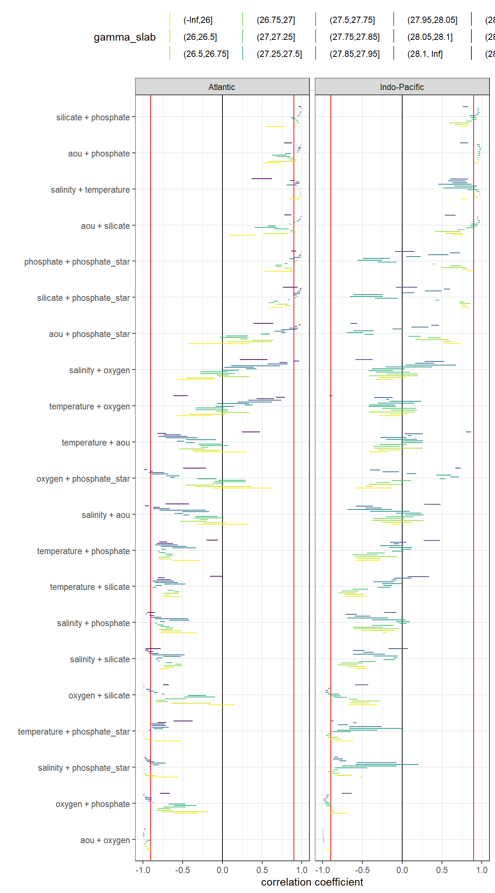
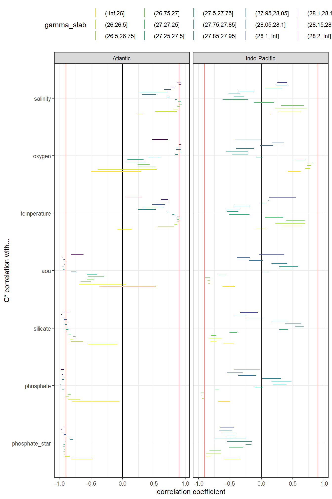

Data base
Jens Daniel Müller
30 July, 2020
Last updated: 2020-07-30
Checks: 7 0
Knit directory: Cant_eMLR/
This reproducible R Markdown analysis was created with workflowr (version 1.6.2). The Checks tab describes the reproducibility checks that were applied when the results were created. The Past versions tab lists the development history.
Great! Since the R Markdown file has been committed to the Git repository, you know the exact version of the code that produced these results.
Great job! The global environment was empty. Objects defined in the global environment can affect the analysis in your R Markdown file in unknown ways. For reproduciblity it’s best to always run the code in an empty environment.
The command set.seed(20200707) was run prior to running the code in the R Markdown file. Setting a seed ensures that any results that rely on randomness, e.g. subsampling or permutations, are reproducible.
Great job! Recording the operating system, R version, and package versions is critical for reproducibility.
Nice! There were no cached chunks for this analysis, so you can be confident that you successfully produced the results during this run.
Great job! Using relative paths to the files within your workflowr project makes it easier to run your code on other machines.
Great! You are using Git for version control. Tracking code development and connecting the code version to the results is critical for reproducibility.
The results in this page were generated with repository version 85c758f. See the Past versions tab to see a history of the changes made to the R Markdown and HTML files.
Note that you need to be careful to ensure that all relevant files for the analysis have been committed to Git prior to generating the results (you can use wflow_publish or wflow_git_commit). workflowr only checks the R Markdown file, but you know if there are other scripts or data files that it depends on. Below is the status of the Git repository when the results were generated:
Ignored files:
Ignored: .Rproj.user/
Ignored: data/GLODAPv2_2016b_MappedClimatologies/
Ignored: data/GLODAPv2_2020/
Ignored: data/World_Ocean_Atlas_2018/
Ignored: data/eMLR/
Ignored: data/pCO2_atmosphere/
Ignored: dump/
Ignored: output/figure/
Note that any generated files, e.g. HTML, png, CSS, etc., are not included in this status report because it is ok for generated content to have uncommitted changes.
These are the previous versions of the repository in which changes were made to the R Markdown (analysis/eMLR.Rmd) and HTML (docs/eMLR.html) files. If you’ve configured a remote Git repository (see ?wflow_git_remote), click on the hyperlinks in the table below to view the files as they were in that past version.
| File | Version | Author | Date | Message |
|---|---|---|---|---|
| Rmd | 85c758f | jens-daniel-mueller | 2020-07-30 | PO4* calculation based on oxygen, correlation tables added, formating |
| html | 7fc7fd4 | jens-daniel-mueller | 2020-07-30 | Build site. |
| Rmd | 48e1767 | jens-daniel-mueller | 2020-07-30 | correlation coeffcients plots added |
| html | 9dc5d7f | jens-daniel-mueller | 2020-07-29 | Build site. |
| Rmd | bf5ea88 | jens-daniel-mueller | 2020-07-29 | rebuild, site definition in index.Rmd, without colinear plots |
| html | 21524b4 | jens-daniel-mueller | 2020-07-29 | Build site. |
| Rmd | 3ad6a3c | jens-daniel-mueller | 2020-07-29 | rebuild all with new navbar labels, colinear plots updated |
| html | ff17968 | jens-daniel-mueller | 2020-07-29 | Build site. |
| Rmd | cb5074e | jens-daniel-mueller | 2020-07-29 | subset Cant to GLODAP before merging |
| html | 44502a9 | jens-daniel-mueller | 2020-07-28 | Build site. |
| Rmd | 5dce915 | jens-daniel-mueller | 2020-07-28 | fit top 10 models |
| html | 35f1cd4 | jens-daniel-mueller | 2020-07-28 | Build site. |
| Rmd | da498d0 | jens-daniel-mueller | 2020-07-28 | formatted table, loaded kableExtra |
| html | e5fc772 | jens-daniel-mueller | 2020-07-28 | Build site. |
| Rmd | 7fe0338 | jens-daniel-mueller | 2020-07-28 | rmse output, 10 best models selected |
| html | 4eebe14 | jens-daniel-mueller | 2020-07-24 | Build site. |
| Rmd | 12f9ef2 | jens-daniel-mueller | 2020-07-24 | started neutral density calculation |
| html | 2e08795 | jens-daniel-mueller | 2020-07-24 | Build site. |
| html | 61a1a48 | jens-daniel-mueller | 2020-07-24 | Build site. |
| Rmd | 864a6e3 | jens-daniel-mueller | 2020-07-24 | merged predictor data sets |
| html | 7f51d57 | jens-daniel-mueller | 2020-07-24 | Build site. |
| Rmd | 4a8deb2 | jens-daniel-mueller | 2020-07-24 | corrected false to FALSE |
| html | 2df2065 | jens-daniel-mueller | 2020-07-23 | Build site. |
| Rmd | fa350cf | jens-daniel-mueller | 2020-07-23 | predictor correlation plots, bin2d map plots |
| html | 9d1d67d | jens-daniel-mueller | 2020-07-23 | Build site. |
| Rmd | 3b6658b | jens-daniel-mueller | 2020-07-23 | predictor correlation plots, bin2d map plots |
| html | 2e3691a | jens-daniel-mueller | 2020-07-23 | Build site. |
| Rmd | 26bdc0a | jens-daniel-mueller | 2020-07-23 | new era label, predictor correlation check started |
| html | 556e6cc | jens-daniel-mueller | 2020-07-23 | Build site. |
| Rmd | 1ce10e7 | jens-daniel-mueller | 2020-07-23 | read full GLODAP Cant data set rather than joining again |
| Rmd | 0cb3db2 | jens-daniel-mueller | 2020-07-23 | started MLR fitting |
| Rmd | cf8bc74 | jens-daniel-mueller | 2020-07-23 | started MLR fitting |
| Rmd | 0252675 | jens-daniel-mueller | 2020-07-23 | modeling started |
| html | fdfa7b9 | jens-daniel-mueller | 2020-07-22 | Build site. |
| Rmd | 6416150 | jens-daniel-mueller | 2020-07-22 | cut gamma into slabs |
| html | 0cecfbf | jens-daniel-mueller | 2020-07-22 | Build site. |
| Rmd | 48cf01f | jens-daniel-mueller | 2020-07-22 | defined isoneutral slabs |
| Rmd | 32ed280 | jens-daniel-mueller | 2020-07-22 | sign in Cstar delta plot |
| html | 44334f8 | jens-daniel-mueller | 2020-07-22 | Build site. |
| Rmd | c398496 | jens-daniel-mueller | 2020-07-22 | plot update |
| html | 0ff656b | jens-daniel-mueller | 2020-07-22 | Build site. |
| Rmd | 4b81f16 | jens-daniel-mueller | 2020-07-22 | plot update |
| html | 23038c8 | jens-daniel-mueller | 2020-07-22 | Build site. |
| Rmd | 09b3ca8 | jens-daniel-mueller | 2020-07-22 | eding plain text, restructuring some code |
| html | ac6308d | jens-daniel-mueller | 2020-07-22 | Build site. |
| Rmd | 77c9642 | jens-daniel-mueller | 2020-07-22 | formatted plots |
| html | 40b99cb | jens-daniel-mueller | 2020-07-22 | Build site. |
| Rmd | 8a49adf | jens-daniel-mueller | 2020-07-22 | adjustment to reference year implemented |
| html | bb9c002 | jens-daniel-mueller | 2020-07-21 | Build site. |
| Rmd | d2ed0f8 | jens-daniel-mueller | 2020-07-21 | harmonied lat lon labeling |
| html | e1488e6 | jens-daniel-mueller | 2020-07-19 | Build site. |
| Rmd | e688d6e | jens-daniel-mueller | 2020-07-19 | formating |
| html | f7ea007 | jens-daniel-mueller | 2020-07-19 | Build site. |
| Rmd | 0992256 | jens-daniel-mueller | 2020-07-19 | plotted individual Cstar terms |
| html | 22b588c | jens-daniel-mueller | 2020-07-18 | Build site. |
| html | fdfe5a0 | jens-daniel-mueller | 2020-07-17 | Build site. |
| Rmd | f7485c6 | jens-daniel-mueller | 2020-07-17 | re run als emlr |
| html | 56c3ed9 | jens-daniel-mueller | 2020-07-14 | Build site. |
| html | 74d4abd | jens-daniel-mueller | 2020-07-14 | Build site. |
| html | 1c511ce | jens-daniel-mueller | 2020-07-14 | Build site. |
| Rmd | e03016e | jens-daniel-mueller | 2020-07-14 | split read in per data set |
| html | 45ed0ea | jens-daniel-mueller | 2020-07-14 | Build site. |
| Rmd | dc1c56e | jens-daniel-mueller | 2020-07-14 | tref calculated |
| html | b1ece68 | jens-daniel-mueller | 2020-07-13 | Build site. |
| Rmd | 8eb1b22 | jens-daniel-mueller | 2020-07-13 | cleaned data base file |
| Rmd | 9e8f7f1 | jens-daniel-mueller | 2020-07-13 | untracked changes |
| html | 79312b2 | jens-daniel-mueller | 2020-07-13 | Build site. |
| Rmd | ffbc2a1 | jens-daniel-mueller | 2020-07-13 | added Cstar calculation |
| html | 090cfeb | jens-daniel-mueller | 2020-07-13 | Build site. |
| Rmd | e6a2ade | jens-daniel-mueller | 2020-07-13 | added Cstar calculation |
library(tidyverse)
library(lubridate)
library(patchwork)
library(broom)
library(GGally)
library(olsrr)
library(knitr)
library(kableExtra)
library(broom)
library(corrr)1 Required data
Required are:
- clean version of GLODAPGLODAPv2.2020
- observations grid of clean version of GLODAPGLODAPv2.2020
- C_ant from GLODAPv2_2016b_MappedClimatologies
- annual mean atmospheric pCO2
GLODAP <- read_csv(here::here("data/GLODAPv2_2020/_summarized_data_files",
"GLODAPv2.2020_clean.csv"))
GLODAP_obs_grid <- read_csv(here::here("data/GLODAPv2_2020/_summarized_data_files",
"GLODAPv2.2020_clean_obs_grid.csv"))
Cant_clim <- read_csv(here::here("data/GLODAPv2_2016b_MappedClimatologies/_summarized_files",
"Cant.csv"))
co2_atm <- read_csv(here::here("data/pCO2_atmosphere/_summarized_data_files",
"co2_atm.csv"))2 C*
C* serves as a conservative tracer of anthropogenic CO2 uptake. It is derived from measured DIC by removing the impact of - organic matter formation and respiration - calcification and calcium carbonate dissolution
Contributions of those processes are estimated from phosphate and alkalinity concentrations.
2.1 Stoichiometric ratios
rCP <- 117
rNP <- 16The stoichiometric nutrient ratios for the production and mineralization of organic matter were set to:
- C/P: 117
- N/P: 16
2.2 Calculation
C* is calculated as:
print("Cstar = tco2 + rCP_phosphate + talk_05 + rNP_phosphate_05")[1] "Cstar = tco2 + rCP_phosphate + talk_05 + rNP_phosphate_05"GLODAP <- GLODAP %>%
mutate(rCP_phosphate = -rCP * phosphate,
talk_05 = -0.5 * talk,
rNP_phosphate_05 = -0.5 * rNP * phosphate,
Cstar = tco2 + rCP_phosphate + talk_05 + rNP_phosphate_05)3 PO4* calculation
Currently, the predictor PO4* is calculated according to Clement and Gruber (2018), ie based on oxygen rather than nitrate.
GLODAP <- GLODAP %>%
mutate(phosphate_star = phosphate + (oxygen / 170) - 1.95)GLODAP <- GLODAP %>%
mutate(phosphate_star = phosphate - 16*nitrate + 2.9)4 Reference year adjustment
The scaling factor for the reference year adjustment is an apriori estiamte of Cant at a given location and depth. Here, Cant from the GLODAP mapped Climatology was used.
Note that eq. 6 in Clement and Gruber (2018) misses pCO2 pre-industrial in the denominator. Here we use the equation published in Gruber et al. (2019).
4.1 Merge data sets
4.1.1 GLODAP + Cant
Cant_clim <- Cant_clim %>%
drop_na()
Cant_clim_obs <- left_join(GLODAP_obs_grid, Cant_clim) %>%
select(-n)
rm(Cant_clim, GLODAP_obs_grid)
GLODAP_Cant_obs <- full_join(GLODAP, Cant_clim_obs)
rm(Cant_clim_obs)
# GLODAP_Cant_full %>% write_csv(here::here("data/GLODAPv2_2020/_summarized_data_files",
# "GLODAP_Cant_full.csv"))
#
# GLODAP_Cant_full <- read_csv(here::here("data/GLODAPv2_2020/_summarized_data_files",
# "GLODAP_Cant_full.csv"))The mapped Cant product was merged with GLODAP observation by:
- using an identical 1x1° horizontal grid
- linear interpolation of Cant from standard to sampling depth
GLODAP_Cant_obs <- GLODAP_Cant_obs %>%
group_by(lat, lon) %>%
arrange(depth) %>%
mutate(Cant_int = approxfun(depth, Cant, rule = 2)(depth)) %>%
ungroup()
ggplot() +
geom_path(data = GLODAP_Cant_obs %>%
filter(lat == 48.5, lon == 165.5, !is.na(Cant)) %>%
arrange(depth),
aes(Cant, depth, col = "mapped")) +
geom_point(data = GLODAP_Cant_obs %>%
filter(lat == 48.5, lon == 165.5, !is.na(Cant)) %>%
arrange(depth),
aes(Cant, depth, col = "mapped")) +
geom_point(data = GLODAP_Cant_obs %>%
filter(lat == 48.5, lon == 165.5, date == ymd("2018-06-27")),
aes(Cant_int, depth, col = "interpolated")) +
scale_y_reverse() +
scale_color_brewer(palette = "Dark2", name = "") +
labs(title = "Cant interpolation to sampling depth - example profile")
GLODAP <- GLODAP_Cant_obs %>%
filter(!is.na(Cstar)) %>%
mutate(Cant = Cant_int) %>%
select(-Cant_int)
rm(GLODAP_Cant_obs)4.1.2 GLODAP + atm. pCO2
GLODAP <- left_join(GLODAP, co2_atm)4.2 Calculate adjustment
GLODAP <- GLODAP %>%
group_by(era) %>%
mutate(tref = median(year)) %>%
ungroup()
tref <- GLODAP %>%
group_by(era) %>%
summarise(year = median(year)) %>%
ungroup()
co2_atm_tref <- right_join(co2_atm, tref) %>%
select(-year) %>%
rename(pCO2_tref = pCO2)
GLODAP <- full_join(GLODAP, co2_atm_tref)
rm(co2_atm, co2_atm_tref, tref)
GLODAP <- GLODAP %>%
mutate(Cstar_tref_delta =
((pCO2 - pCO2_tref) / (pCO2_tref - 280)) * Cant,
Cstar_tref = Cstar - Cstar_tref_delta)4.3 Control plots
4.3.1 Histogram
GLODAP %>%
ggplot(aes(Cstar_tref_delta)) +
geom_histogram()
4.3.2 Time series
GLODAP %>%
sample_n(10000) %>%
ggplot(aes(year, Cstar_tref_delta, col = Cant)) +
geom_point() +
scale_color_viridis_c() +
labs(title = "random subsample 1e4")
5 Selected section plots
Selected sections are plotted to demonstrate the magnitude of various parameters and corrections relevant to C*.
cruises_meridional <- c("1041")
GLODAP_cruise <- GLODAP %>%
filter(cruise %in% cruises_meridional)bbox <- c(
"xmin" = min(GLODAP_cruise$lat),
"ymin" = min(GLODAP_cruise$depth),
"xmax" = max(GLODAP_cruise$lat),
"ymax" = max(GLODAP_cruise$depth)
)
grd_template <- expand.grid(
lat = seq(from = bbox["xmin"], to = bbox["xmax"], by = 1),
depth = seq(from = bbox["ymin"], to = bbox["ymax"], by = 50) # 20 m resolution
)
crs_raster_format <- " +proj=utm +zone=33 +ellps=GRS80 +towgs84=0,0,0,0,0,0,0 +units=m +no_defs"
grd_template_raster <- grd_template %>%
dplyr::mutate(Z = 0) %>%
raster::rasterFromXYZ(
crs = crs_raster_format)
# Generalized Additive Model
fit_GAM <- mgcv::gam( # using {mgcv}
gamma ~ s(lat, depth), # here come our X/Y/Z data - straightforward enough
data = GLODAP_cruise # specify in which object the data is stored
)
# Generalized Additive Model
interp_GAM <- grd_template %>%
mutate(Z = predict(fit_GAM, .)) %>%
raster::rasterFromXYZ(crs = crs_raster_format)
df <- raster::rasterToPoints(interp_GAM) %>% as_tibble()
colnames(df) <- c("X", "Y", "Z")
ggplot(df, aes(x = X, y = Y, fill = Z, z = Z)) +
geom_raster() +
geom_contour(col="white") +
ggtitle(label = "interp GAM") +
scale_fill_viridis_c() +
scale_y_reverse() +
coord_cartesian(expand = 0)mapWorld <- borders("world", colour = "gray60", fill = "gray60")
GLODAP_cruise %>%
arrange(date) %>%
ggplot(aes(lon, lat)) +
mapWorld +
geom_path() +
geom_point(aes(col = date)) +
coord_quickmap(expand = 0) +
scale_color_viridis_c(trans = "date") +
labs(title = paste("Cruise year:", mean(GLODAP_cruise$year))) +
theme(legend.position = "bottom")
lat_section <-
GLODAP_cruise %>%
ggplot(aes(lat, depth)) +
scale_y_reverse() +
scale_color_viridis_c() +
theme(legend.position = "bottom")
lat_section +
geom_point(aes(col = tco2))
lat_section +
geom_point(aes(col = talk))
lat_section +
geom_point(aes(col = phosphate))
lat_section +
geom_point(aes(col = rCP_phosphate))
lat_section +
geom_point(aes(col = talk_05))
lat_section +
geom_point(aes(col = rNP_phosphate_05))
lat_section +
geom_point(aes(col = Cstar))
lat_section +
geom_point(aes(col = Cant))
lat_section +
geom_point(aes(col = -Cstar_tref_delta))
rm(mapWorld, lat_section, GLODAP_cruise)6 MLR
6.1 Isoneutral slabs
slabs_Atl <- c(
-Inf,
26.00,
26.50,
26.75,
27.00,
27.25,
27.50,
27.75,
27.85,
27.95,
28.05,
28.10,
28.15,
28.20,
Inf)
slabs_Ind_Pac <- c(
-Inf,
26.00,
26.50,
26.75,
27.00,
27.25,
27.50,
27.75,
27.85,
27.95,
28.05,
28.10,
Inf)The following boundaries for isoneutral slabs were defined:
- Atlantic: -, 26, 26.5, 26.75, 27, 27.25, 27.5, 27.75, 27.85, 27.95, 28.05, 28.1, 28.15, 28.2,
- Indo-Pacific: -, 26, 26.5, 26.75, 27, 27.25, 27.5, 27.75, 27.85, 27.95, 28.05, 28.1,
GLODAP_Atl <- GLODAP %>%
filter(basin == "Atlantic") %>%
mutate(gamma_slab = cut(gamma, slabs_Atl))
GLODAP_Ind_Pac <- GLODAP %>%
filter(basin == "Indo-Pacific") %>%
mutate(gamma_slab = cut(gamma, slabs_Ind_Pac))
GLODAP <- bind_rows(GLODAP_Atl, GLODAP_Ind_Pac)
rm(GLODAP_Atl, GLODAP_Ind_Pac)GLODAP_cruise <- GLODAP %>%
filter(cruise %in% cruises_meridional)
lat_section <-
GLODAP_cruise %>%
ggplot(aes(lat, depth)) +
scale_y_reverse() +
theme(legend.position = "bottom")
lat_section +
geom_point(aes(col = gamma)) +
scale_color_viridis_c()lat_section +
geom_point(aes(col = gamma_slab)) +
scale_color_viridis_d()6.2 Predictor correlation
6.2.1 Overview
GLODAP %>%
sample_frac(0.01) %>%
ggpairs(columns = c("Cstar",
"salinity",
"temperature",
"aou",
"oxygen",
"silicate",
"phosphate",
"phosphate_star"),
ggplot2::aes(col = gamma_slab, fill = gamma_slab, alpha = 0.01)) +
scale_fill_viridis_d() +
scale_color_viridis_d() +
labs(title = paste("Basin: all | era: all | subsample size: 1 % of", nrow(GLODAP)))
6.2.2 Grouped for basin, era, slab
Individual correlation plots for each basin, era and neutral density (gamma) slab are available upon request.
for (i_basin in unique(GLODAP$basin)) {
for (i_era in unique(GLODAP$era)) {
# i_basin <- unique(GLODAP$basin)[1]
# i_era <- unique(GLODAP$era)[1]
print(i_basin)
print(i_era)
GLODAP_basin_era <- GLODAP %>%
filter(basin == i_basin,
era == i_era)
for (i_gamma_slab in unique(GLODAP_basin_era$gamma_slab)) {
#i_gamma_slab <- unique(GLODAP_basin_era$gamma_slab)[5]
print(i_gamma_slab)
GLODAP_highlight <- GLODAP_basin_era %>%
mutate(gamma_highlight = if_else(gamma_slab == i_gamma_slab,
"in", "out")) %>%
arrange(desc(gamma_highlight))
p <- GLODAP_highlight %>%
ggpairs(columns = c("Cstar",
"salinity",
"temperature",
"aou",
"oxygen",
"silicate",
"phosphate",
"phosphate_star"),
ggplot2::aes(col = gamma_highlight, fill = gamma_highlight, alpha = 0.01)) +
scale_fill_manual( values = c("red", "grey")) +
scale_color_manual(values = c("red", "grey")) +
labs(title = paste(i_basin,
"| ", i_era,
"| Gamma slab", i_gamma_slab,
"| total nr", nrow(GLODAP_basin_era),
"| slab nr", nrow(GLODAP_highlight %>%
filter(gamma_highlight == "slab"))))
png(here::here("output/figure/eMLR/predictor_correlation",
paste("predictor_correlation", i_basin, i_era, i_gamma_slab, ".png", sep = "_")),
width = 12, height = 12, units = "in", res = 300)
print(p)
dev.off()
}
}
}6.2.3 Correlation coeffcients
6.2.3.1 Calculation of correlation coeffcients
for (i_basin in unique(GLODAP$basin)) {
for (i_era in unique(GLODAP$era)) {
# i_basin <- unique(GLODAP$basin)[1]
# i_era <- unique(GLODAP$era)[1]
print(i_basin)
print(i_era)
GLODAP_basin_era <- GLODAP %>%
filter(basin == i_basin,
era == i_era) %>%
select(basin,
era,
gamma_slab,
Cstar,
salinity,
temperature,
aou,
oxygen,
silicate,
phosphate,
phosphate_star)
for (i_gamma_slab in unique(GLODAP_basin_era$gamma_slab)) {
# i_gamma_slab <- unique(GLODAP_basin_era$gamma_slab)[5]
print(i_gamma_slab)
GLODAP_basin_era_slab <- GLODAP_basin_era %>%
filter(gamma_slab == i_gamma_slab)
cor_Cstar_predictor_temp <- GLODAP_basin_era_slab %>%
select(-c(basin, era, gamma_slab)) %>%
correlate() %>%
focus(Cstar) %>%
mutate(basin = i_basin,
era = i_era,
gamma_slab = i_gamma_slab)
if (exists("cor_Cstar_predictor")) {
cor_Cstar_predictor <- bind_rows(cor_Cstar_predictor, cor_Cstar_predictor_temp)
}
if (!exists("cor_Cstar_predictor")) {
cor_Cstar_predictor <- cor_Cstar_predictor_temp
}
cor_predictors_temp <- GLODAP_basin_era_slab %>%
select(-c(basin, era, gamma_slab)) %>%
correlate() %>%
shave %>%
stretch() %>%
filter(!is.na(r),
x != "Cstar",
y != "Cstar") %>%
mutate(pair = paste(x, y, sep = " + ")) %>%
select(-c(x, y)) %>%
mutate(basin = i_basin,
era = i_era,
gamma_slab = i_gamma_slab)
if (exists("cor_predictors")) {
cor_predictors <- bind_rows(cor_predictors, cor_predictors_temp)
}
if (!exists("cor_predictors")) {
cor_predictors <- cor_predictors_temp
}
}
}
}
cor_predictors %>%
write_csv(here::here("data/eMLR",
"cor_predictors.csv"))
cor_Cstar_predictor %>%
write_csv(here::here("data/eMLR",
"cor_Cstar_predictor.csv"))
rm(cor_predictors_temp, cor_Cstar_predictor_temp)6.2.3.2 Predictor pairs
cor_predictors <-
read_csv(here::here("data/eMLR",
"cor_predictors.csv"))
cor_predictors_stats <- cor_predictors %>%
group_by(pair, basin, gamma_slab) %>%
summarise(mean_r = mean(r),
min_r = min(r),
max_r = max(r)) %>%
ungroup()
cor_predictors_stats %>%
mutate(pair = reorder(pair, mean_r)) %>%
ggplot() +
geom_vline(xintercept = c(-0.9, 0.9), col = "red") +
geom_vline(xintercept = 0) +
geom_linerange(
aes(y = pair, xmin = min_r, xmax = max_r, col = gamma_slab),
position = position_dodge(width = 0.6)) +
facet_wrap(~basin) +
scale_color_viridis_d(direction = -1) +
labs(x = "correlation coefficient", y = "") +
theme(legend.position = "top")
kable(cor_predictors) %>%
add_header_above() %>%
kable_styling() %>%
scroll_box(width = "100%", height = "400px")| r | pair | basin | era | gamma_slab |
|---|---|---|---|---|
| 0.9886512 | salinity + temperature | Atlantic | JGOFS_WOCE | (26.5,26.75] |
| -0.5297627 | salinity + aou | Atlantic | JGOFS_WOCE | (26.5,26.75] |
| 0.3329757 | salinity + oxygen | Atlantic | JGOFS_WOCE | (26.5,26.75] |
| -0.7294011 | salinity + silicate | Atlantic | JGOFS_WOCE | (26.5,26.75] |
| -0.7958907 | salinity + phosphate | Atlantic | JGOFS_WOCE | (26.5,26.75] |
| 0.6822662 | salinity + phosphate_star | Atlantic | JGOFS_WOCE | (26.5,26.75] |
| -0.5394586 | temperature + aou | Atlantic | JGOFS_WOCE | (26.5,26.75] |
| 0.3410353 | temperature + oxygen | Atlantic | JGOFS_WOCE | (26.5,26.75] |
| -0.7401620 | temperature + silicate | Atlantic | JGOFS_WOCE | (26.5,26.75] |
| -0.8013726 | temperature + phosphate | Atlantic | JGOFS_WOCE | (26.5,26.75] |
| 0.6975139 | temperature + phosphate_star | Atlantic | JGOFS_WOCE | (26.5,26.75] |
| -0.9754904 | aou + oxygen | Atlantic | JGOFS_WOCE | (26.5,26.75] |
| 0.9291670 | aou + silicate | Atlantic | JGOFS_WOCE | (26.5,26.75] |
| 0.9294296 | aou + phosphate | Atlantic | JGOFS_WOCE | (26.5,26.75] |
| -0.9748982 | aou + phosphate_star | Atlantic | JGOFS_WOCE | (26.5,26.75] |
| -0.8436954 | oxygen + silicate | Atlantic | JGOFS_WOCE | (26.5,26.75] |
| -0.8281720 | oxygen + phosphate | Atlantic | JGOFS_WOCE | (26.5,26.75] |
| 0.9061182 | oxygen + phosphate_star | Atlantic | JGOFS_WOCE | (26.5,26.75] |
| 0.9712821 | silicate + phosphate | Atlantic | JGOFS_WOCE | (26.5,26.75] |
| -0.9690200 | silicate + phosphate_star | Atlantic | JGOFS_WOCE | (26.5,26.75] |
| -0.9814313 | phosphate + phosphate_star | Atlantic | JGOFS_WOCE | (26.5,26.75] |
| 0.9754742 | salinity + temperature | Atlantic | JGOFS_WOCE | (27.25,27.5] |
| -0.3370859 | salinity + aou | Atlantic | JGOFS_WOCE | (27.25,27.5] |
| 0.0699327 | salinity + oxygen | Atlantic | JGOFS_WOCE | (27.25,27.5] |
| -0.7960289 | salinity + silicate | Atlantic | JGOFS_WOCE | (27.25,27.5] |
| -0.8205324 | salinity + phosphate | Atlantic | JGOFS_WOCE | (27.25,27.5] |
| 0.7688312 | salinity + phosphate_star | Atlantic | JGOFS_WOCE | (27.25,27.5] |
| -0.2994314 | temperature + aou | Atlantic | JGOFS_WOCE | (27.25,27.5] |
| 0.0234851 | temperature + oxygen | Atlantic | JGOFS_WOCE | (27.25,27.5] |
| -0.8288195 | temperature + silicate | Atlantic | JGOFS_WOCE | (27.25,27.5] |
| -0.7945460 | temperature + phosphate | Atlantic | JGOFS_WOCE | (27.25,27.5] |
| 0.7397797 | temperature + phosphate_star | Atlantic | JGOFS_WOCE | (27.25,27.5] |
| -0.9608428 | aou + oxygen | Atlantic | JGOFS_WOCE | (27.25,27.5] |
| 0.6853791 | aou + silicate | Atlantic | JGOFS_WOCE | (27.25,27.5] |
| 0.8023489 | aou + phosphate | Atlantic | JGOFS_WOCE | (27.25,27.5] |
| -0.8505337 | aou + phosphate_star | Atlantic | JGOFS_WOCE | (27.25,27.5] |
| -0.4764353 | oxygen + silicate | Atlantic | JGOFS_WOCE | (27.25,27.5] |
| -0.6095132 | oxygen + phosphate | Atlantic | JGOFS_WOCE | (27.25,27.5] |
| 0.6758859 | oxygen + phosphate_star | Atlantic | JGOFS_WOCE | (27.25,27.5] |
| 0.9280920 | silicate + phosphate | Atlantic | JGOFS_WOCE | (27.25,27.5] |
| -0.9105063 | silicate + phosphate_star | Atlantic | JGOFS_WOCE | (27.25,27.5] |
| -0.9935190 | phosphate + phosphate_star | Atlantic | JGOFS_WOCE | (27.25,27.5] |
| 0.9609783 | salinity + temperature | Atlantic | JGOFS_WOCE | (27.5,27.75] |
| -0.4956237 | salinity + aou | Atlantic | JGOFS_WOCE | (27.5,27.75] |
| 0.2049111 | salinity + oxygen | Atlantic | JGOFS_WOCE | (27.5,27.75] |
| -0.8101704 | salinity + silicate | Atlantic | JGOFS_WOCE | (27.5,27.75] |
| -0.8291386 | salinity + phosphate | Atlantic | JGOFS_WOCE | (27.5,27.75] |
| 0.7999244 | salinity + phosphate_star | Atlantic | JGOFS_WOCE | (27.5,27.75] |
| -0.4606483 | temperature + aou | Atlantic | JGOFS_WOCE | (27.5,27.75] |
| 0.1518829 | temperature + oxygen | Atlantic | JGOFS_WOCE | (27.5,27.75] |
| -0.8389417 | temperature + silicate | Atlantic | JGOFS_WOCE | (27.5,27.75] |
| -0.7995899 | temperature + phosphate | Atlantic | JGOFS_WOCE | (27.5,27.75] |
| 0.7662400 | temperature + phosphate_star | Atlantic | JGOFS_WOCE | (27.5,27.75] |
| -0.9470832 | aou + oxygen | Atlantic | JGOFS_WOCE | (27.5,27.75] |
| 0.6699890 | aou + silicate | Atlantic | JGOFS_WOCE | (27.5,27.75] |
| 0.8678536 | aou + phosphate | Atlantic | JGOFS_WOCE | (27.5,27.75] |
| -0.8929301 | aou + phosphate_star | Atlantic | JGOFS_WOCE | (27.5,27.75] |
| -0.4360723 | oxygen + silicate | Atlantic | JGOFS_WOCE | (27.5,27.75] |
| -0.6749872 | oxygen + phosphate | Atlantic | JGOFS_WOCE | (27.5,27.75] |
| 0.7151415 | oxygen + phosphate_star | Atlantic | JGOFS_WOCE | (27.5,27.75] |
| 0.9021325 | silicate + phosphate | Atlantic | JGOFS_WOCE | (27.5,27.75] |
| -0.8856450 | silicate + phosphate_star | Atlantic | JGOFS_WOCE | (27.5,27.75] |
| -0.9956397 | phosphate + phosphate_star | Atlantic | JGOFS_WOCE | (27.5,27.75] |
| 0.9799000 | salinity + temperature | Atlantic | JGOFS_WOCE | (26.75,27] |
| -0.2786631 | salinity + aou | Atlantic | JGOFS_WOCE | (26.75,27] |
| 0.0825327 | salinity + oxygen | Atlantic | JGOFS_WOCE | (26.75,27] |
| -0.5946755 | salinity + silicate | Atlantic | JGOFS_WOCE | (26.75,27] |
| -0.6860815 | salinity + phosphate | Atlantic | JGOFS_WOCE | (26.75,27] |
| 0.5572155 | salinity + phosphate_star | Atlantic | JGOFS_WOCE | (26.75,27] |
| -0.2684537 | temperature + aou | Atlantic | JGOFS_WOCE | (26.75,27] |
| 0.0678025 | temperature + oxygen | Atlantic | JGOFS_WOCE | (26.75,27] |
| -0.6058513 | temperature + silicate | Atlantic | JGOFS_WOCE | (26.75,27] |
| -0.6786333 | temperature + phosphate | Atlantic | JGOFS_WOCE | (26.75,27] |
| 0.5592956 | temperature + phosphate_star | Atlantic | JGOFS_WOCE | (26.75,27] |
| -0.9792365 | aou + oxygen | Atlantic | JGOFS_WOCE | (26.75,27] |
| 0.8858176 | aou + silicate | Atlantic | JGOFS_WOCE | (26.75,27] |
| 0.8820843 | aou + phosphate | Atlantic | JGOFS_WOCE | (26.75,27] |
| -0.9437747 | aou + phosphate_star | Atlantic | JGOFS_WOCE | (26.75,27] |
| -0.7900722 | oxygen + silicate | Atlantic | JGOFS_WOCE | (26.75,27] |
| -0.7708750 | oxygen + phosphate | Atlantic | JGOFS_WOCE | (26.75,27] |
| 0.8597573 | oxygen + phosphate_star | Atlantic | JGOFS_WOCE | (26.75,27] |
| 0.9610085 | silicate + phosphate | Atlantic | JGOFS_WOCE | (26.75,27] |
| -0.9612813 | silicate + phosphate_star | Atlantic | JGOFS_WOCE | (26.75,27] |
| -0.9823968 | phosphate + phosphate_star | Atlantic | JGOFS_WOCE | (26.75,27] |
| 0.9614255 | salinity + temperature | Atlantic | JGOFS_WOCE | (26,26.5] |
| -0.1975660 | salinity + aou | Atlantic | JGOFS_WOCE | (26,26.5] |
| -0.2109219 | salinity + oxygen | Atlantic | JGOFS_WOCE | (26,26.5] |
| -0.7102851 | salinity + silicate | Atlantic | JGOFS_WOCE | (26,26.5] |
| -0.7663581 | salinity + phosphate | Atlantic | JGOFS_WOCE | (26,26.5] |
| 0.4765123 | salinity + phosphate_star | Atlantic | JGOFS_WOCE | (26,26.5] |
| -0.2037537 | temperature + aou | Atlantic | JGOFS_WOCE | (26,26.5] |
| -0.2183607 | temperature + oxygen | Atlantic | JGOFS_WOCE | (26,26.5] |
| -0.6782082 | temperature + silicate | Atlantic | JGOFS_WOCE | (26,26.5] |
| -0.7461798 | temperature + phosphate | Atlantic | JGOFS_WOCE | (26,26.5] |
| 0.5256601 | temperature + phosphate_star | Atlantic | JGOFS_WOCE | (26,26.5] |
| -0.9107476 | aou + oxygen | Atlantic | JGOFS_WOCE | (26,26.5] |
| 0.6803750 | aou + silicate | Atlantic | JGOFS_WOCE | (26,26.5] |
| 0.7559299 | aou + phosphate | Atlantic | JGOFS_WOCE | (26,26.5] |
| -0.9072168 | aou + phosphate_star | Atlantic | JGOFS_WOCE | (26,26.5] |
| -0.3898712 | oxygen + silicate | Atlantic | JGOFS_WOCE | (26,26.5] |
| -0.4374531 | oxygen + phosphate | Atlantic | JGOFS_WOCE | (26,26.5] |
| 0.6837530 | oxygen + phosphate_star | Atlantic | JGOFS_WOCE | (26,26.5] |
| 0.9020743 | silicate + phosphate | Atlantic | JGOFS_WOCE | (26,26.5] |
| -0.8130364 | silicate + phosphate_star | Atlantic | JGOFS_WOCE | (26,26.5] |
| -0.8987460 | phosphate + phosphate_star | Atlantic | JGOFS_WOCE | (26,26.5] |
| 0.8381654 | salinity + temperature | Atlantic | JGOFS_WOCE | (-Inf,26] |
| -0.3257778 | salinity + aou | Atlantic | JGOFS_WOCE | (-Inf,26] |
| -0.0830958 | salinity + oxygen | Atlantic | JGOFS_WOCE | (-Inf,26] |
| -0.6740976 | salinity + silicate | Atlantic | JGOFS_WOCE | (-Inf,26] |
| -0.7820996 | salinity + phosphate | Atlantic | JGOFS_WOCE | (-Inf,26] |
| 0.3211346 | salinity + phosphate_star | Atlantic | JGOFS_WOCE | (-Inf,26] |
| -0.3518914 | temperature + aou | Atlantic | JGOFS_WOCE | (-Inf,26] |
| -0.1206498 | temperature + oxygen | Atlantic | JGOFS_WOCE | (-Inf,26] |
| -0.5118555 | temperature + silicate | Atlantic | JGOFS_WOCE | (-Inf,26] |
| -0.6217540 | temperature + phosphate | Atlantic | JGOFS_WOCE | (-Inf,26] |
| 0.2114742 | temperature + phosphate_star | Atlantic | JGOFS_WOCE | (-Inf,26] |
| -0.8863166 | aou + oxygen | Atlantic | JGOFS_WOCE | (-Inf,26] |
| 0.4145649 | aou + silicate | Atlantic | JGOFS_WOCE | (-Inf,26] |
| 0.6886229 | aou + phosphate | Atlantic | JGOFS_WOCE | (-Inf,26] |
| -0.8772572 | aou + phosphate_star | Atlantic | JGOFS_WOCE | (-Inf,26] |
| -0.1715993 | oxygen + silicate | Atlantic | JGOFS_WOCE | (-Inf,26] |
| -0.4104103 | oxygen + phosphate | Atlantic | JGOFS_WOCE | (-Inf,26] |
| 0.8180245 | oxygen + phosphate_star | Atlantic | JGOFS_WOCE | (-Inf,26] |
| 0.6151173 | silicate + phosphate | Atlantic | JGOFS_WOCE | (-Inf,26] |
| -0.5000964 | silicate + phosphate_star | Atlantic | JGOFS_WOCE | (-Inf,26] |
| -0.7003933 | phosphate + phosphate_star | Atlantic | JGOFS_WOCE | (-Inf,26] |
| 0.9195421 | salinity + temperature | Atlantic | JGOFS_WOCE | (28.1,28.15] |
| -0.7857761 | salinity + aou | Atlantic | JGOFS_WOCE | (28.1,28.15] |
| 0.7201298 | salinity + oxygen | Atlantic | JGOFS_WOCE | (28.1,28.15] |
| -0.8708267 | salinity + silicate | Atlantic | JGOFS_WOCE | (28.1,28.15] |
| -0.8537034 | salinity + phosphate | Atlantic | JGOFS_WOCE | (28.1,28.15] |
| 0.8373786 | salinity + phosphate_star | Atlantic | JGOFS_WOCE | (28.1,28.15] |
| -0.5223213 | temperature + aou | Atlantic | JGOFS_WOCE | (28.1,28.15] |
| 0.4345949 | temperature + oxygen | Atlantic | JGOFS_WOCE | (28.1,28.15] |
| -0.6456801 | temperature + silicate | Atlantic | JGOFS_WOCE | (28.1,28.15] |
| -0.6194000 | temperature + phosphate | Atlantic | JGOFS_WOCE | (28.1,28.15] |
| 0.5931143 | temperature + phosphate_star | Atlantic | JGOFS_WOCE | (28.1,28.15] |
| -0.9944911 | aou + oxygen | Atlantic | JGOFS_WOCE | (28.1,28.15] |
| 0.9752126 | aou + silicate | Atlantic | JGOFS_WOCE | (28.1,28.15] |
| 0.9784785 | aou + phosphate | Atlantic | JGOFS_WOCE | (28.1,28.15] |
| -0.9861063 | aou + phosphate_star | Atlantic | JGOFS_WOCE | (28.1,28.15] |
| -0.9511337 | oxygen + silicate | Atlantic | JGOFS_WOCE | (28.1,28.15] |
| -0.9588931 | oxygen + phosphate | Atlantic | JGOFS_WOCE | (28.1,28.15] |
| 0.9702384 | oxygen + phosphate_star | Atlantic | JGOFS_WOCE | (28.1,28.15] |
| 0.9921857 | silicate + phosphate | Atlantic | JGOFS_WOCE | (28.1,28.15] |
| -0.9900185 | silicate + phosphate_star | Atlantic | JGOFS_WOCE | (28.1,28.15] |
| -0.9932125 | phosphate + phosphate_star | Atlantic | JGOFS_WOCE | (28.1,28.15] |
| 0.9758270 | salinity + temperature | Atlantic | JGOFS_WOCE | (27,27.25] |
| -0.3548045 | salinity + aou | Atlantic | JGOFS_WOCE | (27,27.25] |
| 0.1542667 | salinity + oxygen | Atlantic | JGOFS_WOCE | (27,27.25] |
| -0.7124112 | salinity + silicate | Atlantic | JGOFS_WOCE | (27,27.25] |
| -0.7748703 | salinity + phosphate | Atlantic | JGOFS_WOCE | (27,27.25] |
| 0.6941158 | salinity + phosphate_star | Atlantic | JGOFS_WOCE | (27,27.25] |
| -0.2812963 | temperature + aou | Atlantic | JGOFS_WOCE | (27,27.25] |
| 0.0727534 | temperature + oxygen | Atlantic | JGOFS_WOCE | (27,27.25] |
| -0.6895759 | temperature + silicate | Atlantic | JGOFS_WOCE | (27,27.25] |
| -0.7235873 | temperature + phosphate | Atlantic | JGOFS_WOCE | (27,27.25] |
| 0.6424344 | temperature + phosphate_star | Atlantic | JGOFS_WOCE | (27,27.25] |
| -0.9775092 | aou + oxygen | Atlantic | JGOFS_WOCE | (27,27.25] |
| 0.8355002 | aou + silicate | Atlantic | JGOFS_WOCE | (27,27.25] |
| 0.8599479 | aou + phosphate | Atlantic | JGOFS_WOCE | (27,27.25] |
| -0.9128106 | aou + phosphate_star | Atlantic | JGOFS_WOCE | (27,27.25] |
| -0.7169366 | oxygen + silicate | Atlantic | JGOFS_WOCE | (27,27.25] |
| -0.7344506 | oxygen + phosphate | Atlantic | JGOFS_WOCE | (27,27.25] |
| 0.8072162 | oxygen + phosphate_star | Atlantic | JGOFS_WOCE | (27,27.25] |
| 0.9556204 | silicate + phosphate | Atlantic | JGOFS_WOCE | (27,27.25] |
| -0.9493202 | silicate + phosphate_star | Atlantic | JGOFS_WOCE | (27,27.25] |
| -0.9903419 | phosphate + phosphate_star | Atlantic | JGOFS_WOCE | (27,27.25] |
| 0.9808720 | salinity + temperature | Atlantic | JGOFS_WOCE | (27.75,27.85] |
| -0.4959685 | salinity + aou | Atlantic | JGOFS_WOCE | (27.75,27.85] |
| 0.2998878 | salinity + oxygen | Atlantic | JGOFS_WOCE | (27.75,27.85] |
| -0.7518060 | salinity + silicate | Atlantic | JGOFS_WOCE | (27.75,27.85] |
| -0.7242229 | salinity + phosphate | Atlantic | JGOFS_WOCE | (27.75,27.85] |
| 0.6948847 | salinity + phosphate_star | Atlantic | JGOFS_WOCE | (27.75,27.85] |
| -0.4812475 | temperature + aou | Atlantic | JGOFS_WOCE | (27.75,27.85] |
| 0.2786541 | temperature + oxygen | Atlantic | JGOFS_WOCE | (27.75,27.85] |
| -0.7626576 | temperature + silicate | Atlantic | JGOFS_WOCE | (27.75,27.85] |
| -0.7137399 | temperature + phosphate | Atlantic | JGOFS_WOCE | (27.75,27.85] |
| 0.6838512 | temperature + phosphate_star | Atlantic | JGOFS_WOCE | (27.75,27.85] |
| -0.9759298 | aou + oxygen | Atlantic | JGOFS_WOCE | (27.75,27.85] |
| 0.8457486 | aou + silicate | Atlantic | JGOFS_WOCE | (27.75,27.85] |
| 0.9441523 | aou + phosphate | Atlantic | JGOFS_WOCE | (27.75,27.85] |
| -0.9561833 | aou + phosphate_star | Atlantic | JGOFS_WOCE | (27.75,27.85] |
| -0.7344798 | oxygen + silicate | Atlantic | JGOFS_WOCE | (27.75,27.85] |
| -0.8562542 | oxygen + phosphate | Atlantic | JGOFS_WOCE | (27.75,27.85] |
| 0.8768768 | oxygen + phosphate_star | Atlantic | JGOFS_WOCE | (27.75,27.85] |
| 0.9486100 | silicate + phosphate | Atlantic | JGOFS_WOCE | (27.75,27.85] |
| -0.9439927 | silicate + phosphate_star | Atlantic | JGOFS_WOCE | (27.75,27.85] |
| -0.9963606 | phosphate + phosphate_star | Atlantic | JGOFS_WOCE | (27.75,27.85] |
| 0.9369742 | salinity + temperature | Atlantic | JGOFS_WOCE | (27.85,27.95] |
| -0.1656048 | salinity + aou | Atlantic | JGOFS_WOCE | (27.85,27.95] |
| 0.0268688 | salinity + oxygen | Atlantic | JGOFS_WOCE | (27.85,27.95] |
| -0.5237283 | salinity + silicate | Atlantic | JGOFS_WOCE | (27.85,27.95] |
| -0.4171452 | salinity + phosphate | Atlantic | JGOFS_WOCE | (27.85,27.95] |
| 0.3908420 | salinity + phosphate_star | Atlantic | JGOFS_WOCE | (27.85,27.95] |
| -0.0804600 | temperature + aou | Atlantic | JGOFS_WOCE | (27.85,27.95] |
| -0.0686148 | temperature + oxygen | Atlantic | JGOFS_WOCE | (27.85,27.95] |
| -0.4645337 | temperature + silicate | Atlantic | JGOFS_WOCE | (27.85,27.95] |
| -0.3343713 | temperature + phosphate | Atlantic | JGOFS_WOCE | (27.85,27.95] |
| 0.3076263 | temperature + phosphate_star | Atlantic | JGOFS_WOCE | (27.85,27.95] |
| -0.9888313 | aou + oxygen | Atlantic | JGOFS_WOCE | (27.85,27.95] |
| 0.8893889 | aou + silicate | Atlantic | JGOFS_WOCE | (27.85,27.95] |
| 0.9552571 | aou + phosphate | Atlantic | JGOFS_WOCE | (27.85,27.95] |
| -0.9621936 | aou + phosphate_star | Atlantic | JGOFS_WOCE | (27.85,27.95] |
| -0.8204585 | oxygen + silicate | Atlantic | JGOFS_WOCE | (27.85,27.95] |
| -0.9062869 | oxygen + phosphate | Atlantic | JGOFS_WOCE | (27.85,27.95] |
| 0.9172271 | oxygen + phosphate_star | Atlantic | JGOFS_WOCE | (27.85,27.95] |
| 0.9666891 | silicate + phosphate | Atlantic | JGOFS_WOCE | (27.85,27.95] |
| -0.9643712 | silicate + phosphate_star | Atlantic | JGOFS_WOCE | (27.85,27.95] |
| -0.9940222 | phosphate + phosphate_star | Atlantic | JGOFS_WOCE | (27.85,27.95] |
| 0.9127320 | salinity + temperature | Atlantic | JGOFS_WOCE | (28.05,28.1] |
| -0.6651277 | salinity + aou | Atlantic | JGOFS_WOCE | (28.05,28.1] |
| 0.5789025 | salinity + oxygen | Atlantic | JGOFS_WOCE | (28.05,28.1] |
| -0.7987466 | salinity + silicate | Atlantic | JGOFS_WOCE | (28.05,28.1] |
| -0.7678284 | salinity + phosphate | Atlantic | JGOFS_WOCE | (28.05,28.1] |
| 0.7550822 | salinity + phosphate_star | Atlantic | JGOFS_WOCE | (28.05,28.1] |
| -0.4385820 | temperature + aou | Atlantic | JGOFS_WOCE | (28.05,28.1] |
| 0.3267804 | temperature + oxygen | Atlantic | JGOFS_WOCE | (28.05,28.1] |
| -0.6125043 | temperature + silicate | Atlantic | JGOFS_WOCE | (28.05,28.1] |
| -0.5630099 | temperature + phosphate | Atlantic | JGOFS_WOCE | (28.05,28.1] |
| 0.5514256 | temperature + phosphate_star | Atlantic | JGOFS_WOCE | (28.05,28.1] |
| -0.9924007 | aou + oxygen | Atlantic | JGOFS_WOCE | (28.05,28.1] |
| 0.9687501 | aou + silicate | Atlantic | JGOFS_WOCE | (28.05,28.1] |
| 0.9690530 | aou + phosphate | Atlantic | JGOFS_WOCE | (28.05,28.1] |
| -0.9759257 | aou + phosphate_star | Atlantic | JGOFS_WOCE | (28.05,28.1] |
| -0.9357937 | oxygen + silicate | Atlantic | JGOFS_WOCE | (28.05,28.1] |
| -0.9437059 | oxygen + phosphate | Atlantic | JGOFS_WOCE | (28.05,28.1] |
| 0.9521224 | oxygen + phosphate_star | Atlantic | JGOFS_WOCE | (28.05,28.1] |
| 0.9850664 | silicate + phosphate | Atlantic | JGOFS_WOCE | (28.05,28.1] |
| -0.9862850 | silicate + phosphate_star | Atlantic | JGOFS_WOCE | (28.05,28.1] |
| -0.9905919 | phosphate + phosphate_star | Atlantic | JGOFS_WOCE | (28.05,28.1] |
| 0.8069203 | salinity + temperature | Atlantic | JGOFS_WOCE | (27.95,28.05] |
| -0.2117975 | salinity + aou | Atlantic | JGOFS_WOCE | (27.95,28.05] |
| 0.1139659 | salinity + oxygen | Atlantic | JGOFS_WOCE | (27.95,28.05] |
| -0.4777178 | salinity + silicate | Atlantic | JGOFS_WOCE | (27.95,28.05] |
| -0.4308056 | salinity + phosphate | Atlantic | JGOFS_WOCE | (27.95,28.05] |
| 0.4188034 | salinity + phosphate_star | Atlantic | JGOFS_WOCE | (27.95,28.05] |
| -0.3144163 | temperature + aou | Atlantic | JGOFS_WOCE | (27.95,28.05] |
| 0.1904284 | temperature + oxygen | Atlantic | JGOFS_WOCE | (27.95,28.05] |
| -0.5596467 | temperature + silicate | Atlantic | JGOFS_WOCE | (27.95,28.05] |
| -0.4548313 | temperature + phosphate | Atlantic | JGOFS_WOCE | (27.95,28.05] |
| 0.4399580 | temperature + phosphate_star | Atlantic | JGOFS_WOCE | (27.95,28.05] |
| -0.9917317 | aou + oxygen | Atlantic | JGOFS_WOCE | (27.95,28.05] |
| 0.9415173 | aou + silicate | Atlantic | JGOFS_WOCE | (27.95,28.05] |
| 0.9555376 | aou + phosphate | Atlantic | JGOFS_WOCE | (27.95,28.05] |
| -0.9585927 | aou + phosphate_star | Atlantic | JGOFS_WOCE | (27.95,28.05] |
| -0.8988871 | oxygen + silicate | Atlantic | JGOFS_WOCE | (27.95,28.05] |
| -0.9278761 | oxygen + phosphate | Atlantic | JGOFS_WOCE | (27.95,28.05] |
| 0.9330892 | oxygen + phosphate_star | Atlantic | JGOFS_WOCE | (27.95,28.05] |
| 0.9759663 | silicate + phosphate | Atlantic | JGOFS_WOCE | (27.95,28.05] |
| -0.9750396 | silicate + phosphate_star | Atlantic | JGOFS_WOCE | (27.95,28.05] |
| -0.9913353 | phosphate + phosphate_star | Atlantic | JGOFS_WOCE | (27.95,28.05] |
| 0.6272068 | salinity + temperature | Atlantic | JGOFS_WOCE | (28.2, Inf] |
| -0.4183440 | salinity + aou | Atlantic | JGOFS_WOCE | (28.2, Inf] |
| 0.2179548 | salinity + oxygen | Atlantic | JGOFS_WOCE | (28.2, Inf] |
| -0.7751529 | salinity + silicate | Atlantic | JGOFS_WOCE | (28.2, Inf] |
| -0.8474669 | salinity + phosphate | Atlantic | JGOFS_WOCE | (28.2, Inf] |
| 0.8425701 | salinity + phosphate_star | Atlantic | JGOFS_WOCE | (28.2, Inf] |
| 0.3340795 | temperature + aou | Atlantic | JGOFS_WOCE | (28.2, Inf] |
| -0.5357459 | temperature + oxygen | Atlantic | JGOFS_WOCE | (28.2, Inf] |
| -0.1009406 | temperature + silicate | Atlantic | JGOFS_WOCE | (28.2, Inf] |
| -0.1984830 | temperature + phosphate | Atlantic | JGOFS_WOCE | (28.2, Inf] |
| 0.1975806 | temperature + phosphate_star | Atlantic | JGOFS_WOCE | (28.2, Inf] |
| -0.9737943 | aou + oxygen | Atlantic | JGOFS_WOCE | (28.2, Inf] |
| 0.8681030 | aou + silicate | Atlantic | JGOFS_WOCE | (28.2, Inf] |
| 0.8019742 | aou + phosphate | Atlantic | JGOFS_WOCE | (28.2, Inf] |
| -0.7955165 | aou + phosphate_star | Atlantic | JGOFS_WOCE | (28.2, Inf] |
| -0.7458716 | oxygen + silicate | Atlantic | JGOFS_WOCE | (28.2, Inf] |
| -0.6632504 | oxygen + phosphate | Atlantic | JGOFS_WOCE | (28.2, Inf] |
| 0.6583356 | oxygen + phosphate_star | Atlantic | JGOFS_WOCE | (28.2, Inf] |
| 0.9599850 | silicate + phosphate | Atlantic | JGOFS_WOCE | (28.2, Inf] |
| -0.9538790 | silicate + phosphate_star | Atlantic | JGOFS_WOCE | (28.2, Inf] |
| -0.9786039 | phosphate + phosphate_star | Atlantic | JGOFS_WOCE | (28.2, Inf] |
| 0.8477644 | salinity + temperature | Atlantic | JGOFS_WOCE | (28.15,28.2] |
| -0.9618965 | salinity + aou | Atlantic | JGOFS_WOCE | (28.15,28.2] |
| 0.9482794 | salinity + oxygen | Atlantic | JGOFS_WOCE | (28.15,28.2] |
| -0.9659773 | salinity + silicate | Atlantic | JGOFS_WOCE | (28.15,28.2] |
| -0.9542868 | salinity + phosphate | Atlantic | JGOFS_WOCE | (28.15,28.2] |
| 0.9590433 | salinity + phosphate_star | Atlantic | JGOFS_WOCE | (28.15,28.2] |
| -0.7093370 | temperature + aou | Atlantic | JGOFS_WOCE | (28.15,28.2] |
| 0.6732370 | temperature + oxygen | Atlantic | JGOFS_WOCE | (28.15,28.2] |
| -0.7273218 | temperature + silicate | Atlantic | JGOFS_WOCE | (28.15,28.2] |
| -0.6943424 | temperature + phosphate | Atlantic | JGOFS_WOCE | (28.15,28.2] |
| 0.7100942 | temperature + phosphate_star | Atlantic | JGOFS_WOCE | (28.15,28.2] |
| -0.9986039 | aou + oxygen | Atlantic | JGOFS_WOCE | (28.15,28.2] |
| 0.9955321 | aou + silicate | Atlantic | JGOFS_WOCE | (28.15,28.2] |
| 0.9946912 | aou + phosphate | Atlantic | JGOFS_WOCE | (28.15,28.2] |
| -0.9960114 | aou + phosphate_star | Atlantic | JGOFS_WOCE | (28.15,28.2] |
| -0.9916129 | oxygen + silicate | Atlantic | JGOFS_WOCE | (28.15,28.2] |
| -0.9933712 | oxygen + phosphate | Atlantic | JGOFS_WOCE | (28.15,28.2] |
| 0.9939642 | oxygen + phosphate_star | Atlantic | JGOFS_WOCE | (28.15,28.2] |
| 0.9952819 | silicate + phosphate | Atlantic | JGOFS_WOCE | (28.15,28.2] |
| -0.9962577 | silicate + phosphate_star | Atlantic | JGOFS_WOCE | (28.15,28.2] |
| -0.9963027 | phosphate + phosphate_star | Atlantic | JGOFS_WOCE | (28.15,28.2] |
| 0.9805653 | salinity + temperature | Atlantic | GO_SHIP | (27.75,27.85] |
| -0.5327028 | salinity + aou | Atlantic | GO_SHIP | (27.75,27.85] |
| 0.3529270 | salinity + oxygen | Atlantic | GO_SHIP | (27.75,27.85] |
| -0.7907343 | salinity + silicate | Atlantic | GO_SHIP | (27.75,27.85] |
| -0.7581832 | salinity + phosphate | Atlantic | GO_SHIP | (27.75,27.85] |
| 0.7331159 | salinity + phosphate_star | Atlantic | GO_SHIP | (27.75,27.85] |
| -0.5189926 | temperature + aou | Atlantic | GO_SHIP | (27.75,27.85] |
| 0.3324196 | temperature + oxygen | Atlantic | GO_SHIP | (27.75,27.85] |
| -0.8065158 | temperature + silicate | Atlantic | GO_SHIP | (27.75,27.85] |
| -0.7510046 | temperature + phosphate | Atlantic | GO_SHIP | (27.75,27.85] |
| 0.7264815 | temperature + phosphate_star | Atlantic | GO_SHIP | (27.75,27.85] |
| -0.9786507 | aou + oxygen | Atlantic | GO_SHIP | (27.75,27.85] |
| 0.8642328 | aou + silicate | Atlantic | GO_SHIP | (27.75,27.85] |
| 0.9405605 | aou + phosphate | Atlantic | GO_SHIP | (27.75,27.85] |
| -0.9518413 | aou + phosphate_star | Atlantic | GO_SHIP | (27.75,27.85] |
| -0.7579846 | oxygen + silicate | Atlantic | GO_SHIP | (27.75,27.85] |
| -0.8566884 | oxygen + phosphate | Atlantic | GO_SHIP | (27.75,27.85] |
| 0.8750420 | oxygen + phosphate_star | Atlantic | GO_SHIP | (27.75,27.85] |
| 0.9653637 | silicate + phosphate | Atlantic | GO_SHIP | (27.75,27.85] |
| -0.9588018 | silicate + phosphate_star | Atlantic | GO_SHIP | (27.75,27.85] |
| -0.9965227 | phosphate + phosphate_star | Atlantic | GO_SHIP | (27.75,27.85] |
| 0.9794429 | salinity + temperature | Atlantic | GO_SHIP | (27,27.25] |
| 0.0243317 | salinity + aou | Atlantic | GO_SHIP | (27,27.25] |
| -0.2848910 | salinity + oxygen | Atlantic | GO_SHIP | (27,27.25] |
| -0.6219032 | salinity + silicate | Atlantic | GO_SHIP | (27,27.25] |
| -0.7048025 | salinity + phosphate | Atlantic | GO_SHIP | (27,27.25] |
| 0.5942318 | salinity + phosphate_star | Atlantic | GO_SHIP | (27,27.25] |
| 0.0747144 | temperature + aou | Atlantic | GO_SHIP | (27,27.25] |
| -0.3379192 | temperature + oxygen | Atlantic | GO_SHIP | (27,27.25] |
| -0.6139537 | temperature + silicate | Atlantic | GO_SHIP | (27,27.25] |
| -0.6678190 | temperature + phosphate | Atlantic | GO_SHIP | (27,27.25] |
| 0.5599910 | temperature + phosphate_star | Atlantic | GO_SHIP | (27,27.25] |
| -0.9637201 | aou + oxygen | Atlantic | GO_SHIP | (27,27.25] |
| 0.6532535 | aou + silicate | Atlantic | GO_SHIP | (27,27.25] |
| 0.6776659 | aou + phosphate | Atlantic | GO_SHIP | (27,27.25] |
| -0.7698567 | aou + phosphate_star | Atlantic | GO_SHIP | (27,27.25] |
| -0.4522280 | oxygen + silicate | Atlantic | GO_SHIP | (27,27.25] |
| -0.4603906 | oxygen + phosphate | Atlantic | GO_SHIP | (27,27.25] |
| 0.5760302 | oxygen + phosphate_star | Atlantic | GO_SHIP | (27,27.25] |
| 0.9296485 | silicate + phosphate | Atlantic | GO_SHIP | (27,27.25] |
| -0.9137595 | silicate + phosphate_star | Atlantic | GO_SHIP | (27,27.25] |
| -0.9843432 | phosphate + phosphate_star | Atlantic | GO_SHIP | (27,27.25] |
| 0.9717127 | salinity + temperature | Atlantic | GO_SHIP | (26,26.5] |
| 0.0334238 | salinity + aou | Atlantic | GO_SHIP | (26,26.5] |
| -0.4586109 | salinity + oxygen | Atlantic | GO_SHIP | (26,26.5] |
| -0.7243435 | salinity + silicate | Atlantic | GO_SHIP | (26,26.5] |
| -0.7694493 | salinity + phosphate | Atlantic | GO_SHIP | (26,26.5] |
| 0.4252582 | salinity + phosphate_star | Atlantic | GO_SHIP | (26,26.5] |
| -0.0257882 | temperature + aou | Atlantic | GO_SHIP | (26,26.5] |
| -0.4148047 | temperature + oxygen | Atlantic | GO_SHIP | (26,26.5] |
| -0.7324635 | temperature + silicate | Atlantic | GO_SHIP | (26,26.5] |
| -0.7977219 | temperature + phosphate | Atlantic | GO_SHIP | (26,26.5] |
| 0.5079708 | temperature + phosphate_star | Atlantic | GO_SHIP | (26,26.5] |
| -0.8987570 | aou + oxygen | Atlantic | GO_SHIP | (26,26.5] |
| 0.5172910 | aou + silicate | Atlantic | GO_SHIP | (26,26.5] |
| 0.5753655 | aou + phosphate | Atlantic | GO_SHIP | (26,26.5] |
| -0.8343264 | aou + phosphate_star | Atlantic | GO_SHIP | (26,26.5] |
| -0.1482352 | oxygen + silicate | Atlantic | GO_SHIP | (26,26.5] |
| -0.1724774 | oxygen + phosphate | Atlantic | GO_SHIP | (26,26.5] |
| 0.5374254 | oxygen + phosphate_star | Atlantic | GO_SHIP | (26,26.5] |
| 0.9252630 | silicate + phosphate | Atlantic | GO_SHIP | (26,26.5] |
| -0.8257622 | silicate + phosphate_star | Atlantic | GO_SHIP | (26,26.5] |
| -0.8893376 | phosphate + phosphate_star | Atlantic | GO_SHIP | (26,26.5] |
| 0.9453265 | salinity + temperature | Atlantic | GO_SHIP | (-Inf,26] |
| 0.3355069 | salinity + aou | Atlantic | GO_SHIP | (-Inf,26] |
| -0.5824114 | salinity + oxygen | Atlantic | GO_SHIP | (-Inf,26] |
| -0.7950883 | salinity + silicate | Atlantic | GO_SHIP | (-Inf,26] |
| -0.5133885 | salinity + phosphate | Atlantic | GO_SHIP | (-Inf,26] |
| -0.0441654 | salinity + phosphate_star | Atlantic | GO_SHIP | (-Inf,26] |
| 0.3120683 | temperature + aou | Atlantic | GO_SHIP | (-Inf,26] |
| -0.5749811 | temperature + oxygen | Atlantic | GO_SHIP | (-Inf,26] |
| -0.7356100 | temperature + silicate | Atlantic | GO_SHIP | (-Inf,26] |
| -0.4305033 | temperature + phosphate | Atlantic | GO_SHIP | (-Inf,26] |
| -0.0653365 | temperature + phosphate_star | Atlantic | GO_SHIP | (-Inf,26] |
| -0.9566141 | aou + oxygen | Atlantic | GO_SHIP | (-Inf,26] |
| 0.0884202 | aou + silicate | Atlantic | GO_SHIP | (-Inf,26] |
| 0.5161554 | aou + phosphate | Atlantic | GO_SHIP | (-Inf,26] |
| -0.9183924 | aou + phosphate_star | Atlantic | GO_SHIP | (-Inf,26] |
| 0.1534811 | oxygen + silicate | Atlantic | GO_SHIP | (-Inf,26] |
| -0.3072346 | oxygen + phosphate | Atlantic | GO_SHIP | (-Inf,26] |
| 0.8089207 | oxygen + phosphate_star | Atlantic | GO_SHIP | (-Inf,26] |
| 0.7736760 | silicate + phosphate | Atlantic | GO_SHIP | (-Inf,26] |
| -0.3528730 | silicate + phosphate_star | Atlantic | GO_SHIP | (-Inf,26] |
| -0.7603510 | phosphate + phosphate_star | Atlantic | GO_SHIP | (-Inf,26] |
| 0.9843463 | salinity + temperature | Atlantic | GO_SHIP | (26.75,27] |
| -0.1798969 | salinity + aou | Atlantic | GO_SHIP | (26.75,27] |
| -0.0618028 | salinity + oxygen | Atlantic | GO_SHIP | (26.75,27] |
| -0.5532660 | salinity + silicate | Atlantic | GO_SHIP | (26.75,27] |
| -0.7056194 | salinity + phosphate | Atlantic | GO_SHIP | (26.75,27] |
| 0.5683795 | salinity + phosphate_star | Atlantic | GO_SHIP | (26.75,27] |
| -0.1748759 | temperature + aou | Atlantic | GO_SHIP | (26.75,27] |
| -0.0706434 | temperature + oxygen | Atlantic | GO_SHIP | (26.75,27] |
| -0.5660587 | temperature + silicate | Atlantic | GO_SHIP | (26.75,27] |
| -0.7005508 | temperature + phosphate | Atlantic | GO_SHIP | (26.75,27] |
| 0.5714517 | temperature + phosphate_star | Atlantic | GO_SHIP | (26.75,27] |
| -0.9697365 | aou + oxygen | Atlantic | GO_SHIP | (26.75,27] |
| 0.8429220 | aou + silicate | Atlantic | GO_SHIP | (26.75,27] |
| 0.8170427 | aou + phosphate | Atlantic | GO_SHIP | (26.75,27] |
| -0.9014717 | aou + phosphate_star | Atlantic | GO_SHIP | (26.75,27] |
| -0.7139144 | oxygen + silicate | Atlantic | GO_SHIP | (26.75,27] |
| -0.6537454 | oxygen + phosphate | Atlantic | GO_SHIP | (26.75,27] |
| 0.7712405 | oxygen + phosphate_star | Atlantic | GO_SHIP | (26.75,27] |
| 0.9345927 | silicate + phosphate | Atlantic | GO_SHIP | (26.75,27] |
| -0.9358391 | silicate + phosphate_star | Atlantic | GO_SHIP | (26.75,27] |
| -0.9801916 | phosphate + phosphate_star | Atlantic | GO_SHIP | (26.75,27] |
| 0.9473765 | salinity + temperature | Atlantic | GO_SHIP | (27.85,27.95] |
| -0.4016230 | salinity + aou | Atlantic | GO_SHIP | (27.85,27.95] |
| 0.2622776 | salinity + oxygen | Atlantic | GO_SHIP | (27.85,27.95] |
| -0.7148037 | salinity + silicate | Atlantic | GO_SHIP | (27.85,27.95] |
| -0.6355136 | salinity + phosphate | Atlantic | GO_SHIP | (27.85,27.95] |
| 0.6226011 | salinity + phosphate_star | Atlantic | GO_SHIP | (27.85,27.95] |
| -0.3759325 | temperature + aou | Atlantic | GO_SHIP | (27.85,27.95] |
| 0.2247161 | temperature + oxygen | Atlantic | GO_SHIP | (27.85,27.95] |
| -0.7117429 | temperature + silicate | Atlantic | GO_SHIP | (27.85,27.95] |
| -0.6156074 | temperature + phosphate | Atlantic | GO_SHIP | (27.85,27.95] |
| 0.6040043 | temperature + phosphate_star | Atlantic | GO_SHIP | (27.85,27.95] |
| -0.9873376 | aou + oxygen | Atlantic | GO_SHIP | (27.85,27.95] |
| 0.8917637 | aou + silicate | Atlantic | GO_SHIP | (27.85,27.95] |
| 0.9478591 | aou + phosphate | Atlantic | GO_SHIP | (27.85,27.95] |
| -0.9520253 | aou + phosphate_star | Atlantic | GO_SHIP | (27.85,27.95] |
| -0.8161961 | oxygen + silicate | Atlantic | GO_SHIP | (27.85,27.95] |
| -0.8915953 | oxygen + phosphate | Atlantic | GO_SHIP | (27.85,27.95] |
| 0.8980476 | oxygen + phosphate_star | Atlantic | GO_SHIP | (27.85,27.95] |
| 0.9776300 | silicate + phosphate | Atlantic | GO_SHIP | (27.85,27.95] |
| -0.9748126 | silicate + phosphate_star | Atlantic | GO_SHIP | (27.85,27.95] |
| -0.9948492 | phosphate + phosphate_star | Atlantic | GO_SHIP | (27.85,27.95] |
| 0.9902331 | salinity + temperature | Atlantic | GO_SHIP | (26.5,26.75] |
| -0.3074515 | salinity + aou | Atlantic | GO_SHIP | (26.5,26.75] |
| -0.0014674 | salinity + oxygen | Atlantic | GO_SHIP | (26.5,26.75] |
| -0.6700651 | salinity + silicate | Atlantic | GO_SHIP | (26.5,26.75] |
| -0.7640728 | salinity + phosphate | Atlantic | GO_SHIP | (26.5,26.75] |
| 0.5878533 | salinity + phosphate_star | Atlantic | GO_SHIP | (26.5,26.75] |
| -0.3205605 | temperature + aou | Atlantic | GO_SHIP | (26.5,26.75] |
| 0.0094767 | temperature + oxygen | Atlantic | GO_SHIP | (26.5,26.75] |
| -0.6811311 | temperature + silicate | Atlantic | GO_SHIP | (26.5,26.75] |
| -0.7725723 | temperature + phosphate | Atlantic | GO_SHIP | (26.5,26.75] |
| 0.6071778 | temperature + phosphate_star | Atlantic | GO_SHIP | (26.5,26.75] |
| -0.9501770 | aou + oxygen | Atlantic | GO_SHIP | (26.5,26.75] |
| 0.8608648 | aou + silicate | Atlantic | GO_SHIP | (26.5,26.75] |
| 0.8385999 | aou + phosphate | Atlantic | GO_SHIP | (26.5,26.75] |
| -0.9362400 | aou + phosphate_star | Atlantic | GO_SHIP | (26.5,26.75] |
| -0.6846121 | oxygen + silicate | Atlantic | GO_SHIP | (26.5,26.75] |
| -0.6306966 | oxygen + phosphate | Atlantic | GO_SHIP | (26.5,26.75] |
| 0.7883927 | oxygen + phosphate_star | Atlantic | GO_SHIP | (26.5,26.75] |
| 0.9625265 | silicate + phosphate | Atlantic | GO_SHIP | (26.5,26.75] |
| -0.9601052 | silicate + phosphate_star | Atlantic | GO_SHIP | (26.5,26.75] |
| -0.9666308 | phosphate + phosphate_star | Atlantic | GO_SHIP | (26.5,26.75] |
| 0.9731938 | salinity + temperature | Atlantic | GO_SHIP | (27.25,27.5] |
| -0.0600930 | salinity + aou | Atlantic | GO_SHIP | (27.25,27.5] |
| -0.2755115 | salinity + oxygen | Atlantic | GO_SHIP | (27.25,27.5] |
| -0.8097390 | salinity + silicate | Atlantic | GO_SHIP | (27.25,27.5] |
| -0.8005881 | salinity + phosphate | Atlantic | GO_SHIP | (27.25,27.5] |
| 0.7435387 | salinity + phosphate_star | Atlantic | GO_SHIP | (27.25,27.5] |
| -0.0069762 | temperature + aou | Atlantic | GO_SHIP | (27.25,27.5] |
| -0.3351416 | temperature + oxygen | Atlantic | GO_SHIP | (27.25,27.5] |
| -0.8392335 | temperature + silicate | Atlantic | GO_SHIP | (27.25,27.5] |
| -0.7648593 | temperature + phosphate | Atlantic | GO_SHIP | (27.25,27.5] |
| 0.7034939 | temperature + phosphate_star | Atlantic | GO_SHIP | (27.25,27.5] |
| -0.9397143 | aou + oxygen | Atlantic | GO_SHIP | (27.25,27.5] |
| 0.4038500 | aou + silicate | Atlantic | GO_SHIP | (27.25,27.5] |
| 0.6277934 | aou + phosphate | Atlantic | GO_SHIP | (27.25,27.5] |
| -0.6946999 | aou + phosphate_star | Atlantic | GO_SHIP | (27.25,27.5] |
| -0.0923371 | oxygen + silicate | Atlantic | GO_SHIP | (27.25,27.5] |
| -0.3297344 | oxygen + phosphate | Atlantic | GO_SHIP | (27.25,27.5] |
| 0.4135220 | oxygen + phosphate_star | Atlantic | GO_SHIP | (27.25,27.5] |
| 0.8933178 | silicate + phosphate | Atlantic | GO_SHIP | (27.25,27.5] |
| -0.8621273 | silicate + phosphate_star | Atlantic | GO_SHIP | (27.25,27.5] |
| -0.9920554 | phosphate + phosphate_star | Atlantic | GO_SHIP | (27.25,27.5] |
| 0.9622929 | salinity + temperature | Atlantic | GO_SHIP | (27.5,27.75] |
| -0.4140142 | salinity + aou | Atlantic | GO_SHIP | (27.5,27.75] |
| 0.0007210 | salinity + oxygen | Atlantic | GO_SHIP | (27.5,27.75] |
| -0.8105493 | salinity + silicate | Atlantic | GO_SHIP | (27.5,27.75] |
| -0.8445523 | salinity + phosphate | Atlantic | GO_SHIP | (27.5,27.75] |
| 0.8184019 | salinity + phosphate_star | Atlantic | GO_SHIP | (27.5,27.75] |
| -0.3507414 | temperature + aou | Atlantic | GO_SHIP | (27.5,27.75] |
| -0.0852544 | temperature + oxygen | Atlantic | GO_SHIP | (27.5,27.75] |
| -0.8534352 | temperature + silicate | Atlantic | GO_SHIP | (27.5,27.75] |
| -0.8089097 | temperature + phosphate | Atlantic | GO_SHIP | (27.5,27.75] |
| 0.7779957 | temperature + phosphate_star | Atlantic | GO_SHIP | (27.5,27.75] |
| -0.9028461 | aou + oxygen | Atlantic | GO_SHIP | (27.5,27.75] |
| 0.5720276 | aou + silicate | Atlantic | GO_SHIP | (27.5,27.75] |
| 0.7895234 | aou + phosphate | Atlantic | GO_SHIP | (27.5,27.75] |
| -0.8168445 | aou + phosphate_star | Atlantic | GO_SHIP | (27.5,27.75] |
| -0.2092809 | oxygen + silicate | Atlantic | GO_SHIP | (27.5,27.75] |
| -0.4653694 | oxygen + phosphate | Atlantic | GO_SHIP | (27.5,27.75] |
| 0.5085658 | oxygen + phosphate_star | Atlantic | GO_SHIP | (27.5,27.75] |
| 0.8970470 | silicate + phosphate | Atlantic | GO_SHIP | (27.5,27.75] |
| -0.8785458 | silicate + phosphate_star | Atlantic | GO_SHIP | (27.5,27.75] |
| -0.9956456 | phosphate + phosphate_star | Atlantic | GO_SHIP | (27.5,27.75] |
| 0.9685717 | salinity + temperature | Atlantic | GO_SHIP | (28.05,28.1] |
| -0.7105555 | salinity + aou | Atlantic | GO_SHIP | (28.05,28.1] |
| 0.5677434 | salinity + oxygen | Atlantic | GO_SHIP | (28.05,28.1] |
| -0.8512527 | salinity + silicate | Atlantic | GO_SHIP | (28.05,28.1] |
| -0.8593537 | salinity + phosphate | Atlantic | GO_SHIP | (28.05,28.1] |
| 0.8449183 | salinity + phosphate_star | Atlantic | GO_SHIP | (28.05,28.1] |
| -0.5736554 | temperature + aou | Atlantic | GO_SHIP | (28.05,28.1] |
| 0.4065376 | temperature + oxygen | Atlantic | GO_SHIP | (28.05,28.1] |
| -0.7492650 | temperature + silicate | Atlantic | GO_SHIP | (28.05,28.1] |
| -0.7566494 | temperature + phosphate | Atlantic | GO_SHIP | (28.05,28.1] |
| 0.7395130 | temperature + phosphate_star | Atlantic | GO_SHIP | (28.05,28.1] |
| -0.9813655 | aou + oxygen | Atlantic | GO_SHIP | (28.05,28.1] |
| 0.9618608 | aou + silicate | Atlantic | GO_SHIP | (28.05,28.1] |
| 0.9555563 | aou + phosphate | Atlantic | GO_SHIP | (28.05,28.1] |
| -0.9608342 | aou + phosphate_star | Atlantic | GO_SHIP | (28.05,28.1] |
| -0.8975675 | oxygen + silicate | Atlantic | GO_SHIP | (28.05,28.1] |
| -0.8890527 | oxygen + phosphate | Atlantic | GO_SHIP | (28.05,28.1] |
| 0.8985993 | oxygen + phosphate_star | Atlantic | GO_SHIP | (28.05,28.1] |
| 0.9911994 | silicate + phosphate | Atlantic | GO_SHIP | (28.05,28.1] |
| -0.9908217 | silicate + phosphate_star | Atlantic | GO_SHIP | (28.05,28.1] |
| -0.9940815 | phosphate + phosphate_star | Atlantic | GO_SHIP | (28.05,28.1] |
| 0.9317987 | salinity + temperature | Atlantic | GO_SHIP | (27.95,28.05] |
| -0.6291418 | salinity + aou | Atlantic | GO_SHIP | (27.95,28.05] |
| 0.4877248 | salinity + oxygen | Atlantic | GO_SHIP | (27.95,28.05] |
| -0.8263109 | salinity + silicate | Atlantic | GO_SHIP | (27.95,28.05] |
| -0.8052978 | salinity + phosphate | Atlantic | GO_SHIP | (27.95,28.05] |
| 0.7969926 | salinity + phosphate_star | Atlantic | GO_SHIP | (27.95,28.05] |
| -0.5312915 | temperature + aou | Atlantic | GO_SHIP | (27.95,28.05] |
| 0.3637876 | temperature + oxygen | Atlantic | GO_SHIP | (27.95,28.05] |
| -0.7653295 | temperature + silicate | Atlantic | GO_SHIP | (27.95,28.05] |
| -0.7227962 | temperature + phosphate | Atlantic | GO_SHIP | (27.95,28.05] |
| 0.7114051 | temperature + phosphate_star | Atlantic | GO_SHIP | (27.95,28.05] |
| -0.9823756 | aou + oxygen | Atlantic | GO_SHIP | (27.95,28.05] |
| 0.9366867 | aou + silicate | Atlantic | GO_SHIP | (27.95,28.05] |
| 0.9511925 | aou + phosphate | Atlantic | GO_SHIP | (27.95,28.05] |
| -0.9533034 | aou + phosphate_star | Atlantic | GO_SHIP | (27.95,28.05] |
| -0.8615934 | oxygen + silicate | Atlantic | GO_SHIP | (27.95,28.05] |
| -0.8866843 | oxygen + phosphate | Atlantic | GO_SHIP | (27.95,28.05] |
| 0.8914315 | oxygen + phosphate_star | Atlantic | GO_SHIP | (27.95,28.05] |
| 0.9866261 | silicate + phosphate | Atlantic | GO_SHIP | (27.95,28.05] |
| -0.9851869 | silicate + phosphate_star | Atlantic | GO_SHIP | (27.95,28.05] |
| -0.9948597 | phosphate + phosphate_star | Atlantic | GO_SHIP | (27.95,28.05] |
| 0.9706795 | salinity + temperature | Atlantic | GO_SHIP | (28.1,28.15] |
| -0.8416693 | salinity + aou | Atlantic | GO_SHIP | (28.1,28.15] |
| 0.7710921 | salinity + oxygen | Atlantic | GO_SHIP | (28.1,28.15] |
| -0.9067462 | salinity + silicate | Atlantic | GO_SHIP | (28.1,28.15] |
| -0.9149390 | salinity + phosphate | Atlantic | GO_SHIP | (28.1,28.15] |
| 0.9045802 | salinity + phosphate_star | Atlantic | GO_SHIP | (28.1,28.15] |
| -0.7330619 | temperature + aou | Atlantic | GO_SHIP | (28.1,28.15] |
| 0.6456231 | temperature + oxygen | Atlantic | GO_SHIP | (28.1,28.15] |
| -0.8142664 | temperature + silicate | Atlantic | GO_SHIP | (28.1,28.15] |
| -0.8216944 | temperature + phosphate | Atlantic | GO_SHIP | (28.1,28.15] |
| 0.8075016 | temperature + phosphate_star | Atlantic | GO_SHIP | (28.1,28.15] |
| -0.9923620 | aou + oxygen | Atlantic | GO_SHIP | (28.1,28.15] |
| 0.9792466 | aou + silicate | Atlantic | GO_SHIP | (28.1,28.15] |
| 0.9790581 | aou + phosphate | Atlantic | GO_SHIP | (28.1,28.15] |
| -0.9811148 | aou + phosphate_star | Atlantic | GO_SHIP | (28.1,28.15] |
| -0.9528684 | oxygen + silicate | Atlantic | GO_SHIP | (28.1,28.15] |
| -0.9515113 | oxygen + phosphate | Atlantic | GO_SHIP | (28.1,28.15] |
| 0.9564225 | oxygen + phosphate_star | Atlantic | GO_SHIP | (28.1,28.15] |
| 0.9936384 | silicate + phosphate | Atlantic | GO_SHIP | (28.1,28.15] |
| -0.9920310 | silicate + phosphate_star | Atlantic | GO_SHIP | (28.1,28.15] |
| -0.9961567 | phosphate + phosphate_star | Atlantic | GO_SHIP | (28.1,28.15] |
| 0.8963677 | salinity + temperature | Atlantic | GO_SHIP | (28.15,28.2] |
| -0.9232777 | salinity + aou | Atlantic | GO_SHIP | (28.15,28.2] |
| 0.8965298 | salinity + oxygen | Atlantic | GO_SHIP | (28.15,28.2] |
| -0.9307135 | salinity + silicate | Atlantic | GO_SHIP | (28.15,28.2] |
| -0.9548184 | salinity + phosphate | Atlantic | GO_SHIP | (28.15,28.2] |
| 0.9479875 | salinity + phosphate_star | Atlantic | GO_SHIP | (28.15,28.2] |
| -0.7395570 | temperature + aou | Atlantic | GO_SHIP | (28.15,28.2] |
| 0.6919807 | temperature + oxygen | Atlantic | GO_SHIP | (28.15,28.2] |
| -0.7364249 | temperature + silicate | Atlantic | GO_SHIP | (28.15,28.2] |
| -0.7744065 | temperature + phosphate | Atlantic | GO_SHIP | (28.15,28.2] |
| 0.7622892 | temperature + phosphate_star | Atlantic | GO_SHIP | (28.15,28.2] |
| -0.9974366 | aou + oxygen | Atlantic | GO_SHIP | (28.15,28.2] |
| 0.9862753 | aou + silicate | Atlantic | GO_SHIP | (28.15,28.2] |
| 0.9889823 | aou + phosphate | Atlantic | GO_SHIP | (28.15,28.2] |
| -0.9883376 | aou + phosphate_star | Atlantic | GO_SHIP | (28.15,28.2] |
| -0.9808054 | oxygen + silicate | Atlantic | GO_SHIP | (28.15,28.2] |
| -0.9803690 | oxygen + phosphate | Atlantic | GO_SHIP | (28.15,28.2] |
| 0.9809134 | oxygen + phosphate_star | Atlantic | GO_SHIP | (28.15,28.2] |
| 0.9898345 | silicate + phosphate | Atlantic | GO_SHIP | (28.15,28.2] |
| -0.9910553 | silicate + phosphate_star | Atlantic | GO_SHIP | (28.15,28.2] |
| -0.9968057 | phosphate + phosphate_star | Atlantic | GO_SHIP | (28.15,28.2] |
| 0.4049584 | salinity + temperature | Atlantic | GO_SHIP | (28.2, Inf] |
| -0.4596312 | salinity + aou | Atlantic | GO_SHIP | (28.2, Inf] |
| 0.3126618 | salinity + oxygen | Atlantic | GO_SHIP | (28.2, Inf] |
| -0.8233194 | salinity + silicate | Atlantic | GO_SHIP | (28.2, Inf] |
| -0.9003940 | salinity + phosphate | Atlantic | GO_SHIP | (28.2, Inf] |
| 0.8917156 | salinity + phosphate_star | Atlantic | GO_SHIP | (28.2, Inf] |
| 0.4736749 | temperature + aou | Atlantic | GO_SHIP | (28.2, Inf] |
| -0.6164468 | temperature + oxygen | Atlantic | GO_SHIP | (28.2, Inf] |
| 0.0039567 | temperature + silicate | Atlantic | GO_SHIP | (28.2, Inf] |
| -0.0519485 | temperature + phosphate | Atlantic | GO_SHIP | (28.2, Inf] |
| 0.0295041 | temperature + phosphate_star | Atlantic | GO_SHIP | (28.2, Inf] |
| -0.9837852 | aou + oxygen | Atlantic | GO_SHIP | (28.2, Inf] |
| 0.7792842 | aou + silicate | Atlantic | GO_SHIP | (28.2, Inf] |
| 0.7760113 | aou + phosphate | Atlantic | GO_SHIP | (28.2, Inf] |
| -0.7796276 | aou + phosphate_star | Atlantic | GO_SHIP | (28.2, Inf] |
| -0.6760719 | oxygen + silicate | Atlantic | GO_SHIP | (28.2, Inf] |
| -0.6661361 | oxygen + phosphate | Atlantic | GO_SHIP | (28.2, Inf] |
| 0.6723802 | oxygen + phosphate_star | Atlantic | GO_SHIP | (28.2, Inf] |
| 0.9599882 | silicate + phosphate | Atlantic | GO_SHIP | (28.2, Inf] |
| -0.9616542 | silicate + phosphate_star | Atlantic | GO_SHIP | (28.2, Inf] |
| -0.9933199 | phosphate + phosphate_star | Atlantic | GO_SHIP | (28.2, Inf] |
| 0.9767452 | salinity + temperature | Atlantic | new_era | (27,27.25] |
| -0.1863448 | salinity + aou | Atlantic | new_era | (27,27.25] |
| 0.0019459 | salinity + oxygen | Atlantic | new_era | (27,27.25] |
| -0.6480686 | salinity + silicate | Atlantic | new_era | (27,27.25] |
| -0.6639096 | salinity + phosphate | Atlantic | new_era | (27,27.25] |
| 0.5573508 | salinity + phosphate_star | Atlantic | new_era | (27,27.25] |
| -0.1283799 | temperature + aou | Atlantic | new_era | (27,27.25] |
| -0.0607947 | temperature + oxygen | Atlantic | new_era | (27,27.25] |
| -0.6282113 | temperature + silicate | Atlantic | new_era | (27,27.25] |
| -0.6197743 | temperature + phosphate | Atlantic | new_era | (27,27.25] |
| 0.5126821 | temperature + phosphate_star | Atlantic | new_era | (27,27.25] |
| -0.9820587 | aou + oxygen | Atlantic | new_era | (27,27.25] |
| 0.7875083 | aou + silicate | Atlantic | new_era | (27,27.25] |
| 0.8508903 | aou + phosphate | Atlantic | new_era | (27,27.25] |
| -0.9116336 | aou + phosphate_star | Atlantic | new_era | (27,27.25] |
| -0.6734450 | oxygen + silicate | Atlantic | new_era | (27,27.25] |
| -0.7382896 | oxygen + phosphate | Atlantic | new_era | (27,27.25] |
| 0.8197204 | oxygen + phosphate_star | Atlantic | new_era | (27,27.25] |
| 0.9488353 | silicate + phosphate | Atlantic | new_era | (27,27.25] |
| -0.9253013 | silicate + phosphate_star | Atlantic | new_era | (27,27.25] |
| -0.9881051 | phosphate + phosphate_star | Atlantic | new_era | (27,27.25] |
| 0.9786562 | salinity + temperature | Atlantic | new_era | (-Inf,26] |
| -0.1454775 | salinity + aou | Atlantic | new_era | (-Inf,26] |
| -0.2673848 | salinity + oxygen | Atlantic | new_era | (-Inf,26] |
| -0.6725144 | salinity + silicate | Atlantic | new_era | (-Inf,26] |
| -0.3151151 | salinity + phosphate | Atlantic | new_era | (-Inf,26] |
| 0.3224651 | salinity + phosphate_star | Atlantic | new_era | (-Inf,26] |
| -0.1664849 | temperature + aou | Atlantic | new_era | (-Inf,26] |
| -0.2534828 | temperature + oxygen | Atlantic | new_era | (-Inf,26] |
| -0.5701898 | temperature + silicate | Atlantic | new_era | (-Inf,26] |
| -0.2872539 | temperature + phosphate | Atlantic | new_era | (-Inf,26] |
| 0.3096019 | temperature + phosphate_star | Atlantic | new_era | (-Inf,26] |
| -0.9115529 | aou + oxygen | Atlantic | new_era | (-Inf,26] |
| 0.2933777 | aou + silicate | Atlantic | new_era | (-Inf,26] |
| 0.7417322 | aou + phosphate | Atlantic | new_era | (-Inf,26] |
| -0.8815219 | aou + phosphate_star | Atlantic | new_era | (-Inf,26] |
| -0.0427593 | oxygen + silicate | Atlantic | new_era | (-Inf,26] |
| -0.6061311 | oxygen + phosphate | Atlantic | new_era | (-Inf,26] |
| 0.7327100 | oxygen + phosphate_star | Atlantic | new_era | (-Inf,26] |
| 0.5417703 | silicate + phosphate | Atlantic | new_era | (-Inf,26] |
| -0.5262541 | silicate + phosphate_star | Atlantic | new_era | (-Inf,26] |
| -0.7132512 | phosphate + phosphate_star | Atlantic | new_era | (-Inf,26] |
| 0.9811261 | salinity + temperature | Atlantic | new_era | (26.5,26.75] |
| -0.1936560 | salinity + aou | Atlantic | new_era | (26.5,26.75] |
| -0.0452345 | salinity + oxygen | Atlantic | new_era | (26.5,26.75] |
| -0.5055632 | salinity + silicate | Atlantic | new_era | (26.5,26.75] |
| -0.6260673 | salinity + phosphate | Atlantic | new_era | (26.5,26.75] |
| 0.4822478 | salinity + phosphate_star | Atlantic | new_era | (26.5,26.75] |
| -0.2278605 | temperature + aou | Atlantic | new_era | (26.5,26.75] |
| -0.0150026 | temperature + oxygen | Atlantic | new_era | (26.5,26.75] |
| -0.5514632 | temperature + silicate | Atlantic | new_era | (26.5,26.75] |
| -0.6584993 | temperature + phosphate | Atlantic | new_era | (26.5,26.75] |
| 0.5279889 | temperature + phosphate_star | Atlantic | new_era | (26.5,26.75] |
| -0.9701345 | aou + oxygen | Atlantic | new_era | (26.5,26.75] |
| 0.8960620 | aou + silicate | Atlantic | new_era | (26.5,26.75] |
| 0.8717738 | aou + phosphate | Atlantic | new_era | (26.5,26.75] |
| -0.9366258 | aou + phosphate_star | Atlantic | new_era | (26.5,26.75] |
| -0.7820878 | oxygen + silicate | Atlantic | new_era | (26.5,26.75] |
| -0.7311497 | oxygen + phosphate | Atlantic | new_era | (26.5,26.75] |
| 0.8301308 | oxygen + phosphate_star | Atlantic | new_era | (26.5,26.75] |
| 0.9664275 | silicate + phosphate | Atlantic | new_era | (26.5,26.75] |
| -0.9766017 | silicate + phosphate_star | Atlantic | new_era | (26.5,26.75] |
| -0.9818145 | phosphate + phosphate_star | Atlantic | new_era | (26.5,26.75] |
| 0.9741859 | salinity + temperature | Atlantic | new_era | (26.75,27] |
| -0.2238464 | salinity + aou | Atlantic | new_era | (26.75,27] |
| 0.0608401 | salinity + oxygen | Atlantic | new_era | (26.75,27] |
| -0.5155890 | salinity + silicate | Atlantic | new_era | (26.75,27] |
| -0.6198328 | salinity + phosphate | Atlantic | new_era | (26.75,27] |
| 0.4969719 | salinity + phosphate_star | Atlantic | new_era | (26.75,27] |
| -0.2343477 | temperature + aou | Atlantic | new_era | (26.75,27] |
| 0.0671831 | temperature + oxygen | Atlantic | new_era | (26.75,27] |
| -0.5474068 | temperature + silicate | Atlantic | new_era | (26.75,27] |
| -0.6280295 | temperature + phosphate | Atlantic | new_era | (26.75,27] |
| 0.5154852 | temperature + phosphate_star | Atlantic | new_era | (26.75,27] |
| -0.9856810 | aou + oxygen | Atlantic | new_era | (26.75,27] |
| 0.9015240 | aou + silicate | Atlantic | new_era | (26.75,27] |
| 0.8970329 | aou + phosphate | Atlantic | new_era | (26.75,27] |
| -0.9493338 | aou + phosphate_star | Atlantic | new_era | (26.75,27] |
| -0.8302180 | oxygen + silicate | Atlantic | new_era | (26.75,27] |
| -0.8115376 | oxygen + phosphate | Atlantic | new_era | (26.75,27] |
| 0.8848335 | oxygen + phosphate_star | Atlantic | new_era | (26.75,27] |
| 0.9592610 | silicate + phosphate | Atlantic | new_era | (26.75,27] |
| -0.9588142 | silicate + phosphate_star | Atlantic | new_era | (26.75,27] |
| -0.9850995 | phosphate + phosphate_star | Atlantic | new_era | (26.75,27] |
| 0.9698213 | salinity + temperature | Atlantic | new_era | (27.25,27.5] |
| -0.1178634 | salinity + aou | Atlantic | new_era | (27.25,27.5] |
| -0.1687498 | salinity + oxygen | Atlantic | new_era | (27.25,27.5] |
| -0.7859144 | salinity + silicate | Atlantic | new_era | (27.25,27.5] |
| -0.7418126 | salinity + phosphate | Atlantic | new_era | (27.25,27.5] |
| 0.6672941 | salinity + phosphate_star | Atlantic | new_era | (27.25,27.5] |
| -0.0776639 | temperature + aou | Atlantic | new_era | (27.25,27.5] |
| -0.2171166 | temperature + oxygen | Atlantic | new_era | (27.25,27.5] |
| -0.8331496 | temperature + silicate | Atlantic | new_era | (27.25,27.5] |
| -0.7146478 | temperature + phosphate | Atlantic | new_era | (27.25,27.5] |
| 0.6336130 | temperature + phosphate_star | Atlantic | new_era | (27.25,27.5] |
| -0.9562757 | aou + oxygen | Atlantic | new_era | (27.25,27.5] |
| 0.4653306 | aou + silicate | Atlantic | new_era | (27.25,27.5] |
| 0.7343534 | aou + phosphate | Atlantic | new_era | (27.25,27.5] |
| -0.8022534 | aou + phosphate_star | Atlantic | new_era | (27.25,27.5] |
| -0.2101416 | oxygen + silicate | Atlantic | new_era | (27.25,27.5] |
| -0.5088610 | oxygen + phosphate | Atlantic | new_era | (27.25,27.5] |
| 0.5990035 | oxygen + phosphate_star | Atlantic | new_era | (27.25,27.5] |
| 0.8721677 | silicate + phosphate | Atlantic | new_era | (27.25,27.5] |
| -0.8263441 | silicate + phosphate_star | Atlantic | new_era | (27.25,27.5] |
| -0.9909282 | phosphate + phosphate_star | Atlantic | new_era | (27.25,27.5] |
| 0.9556522 | salinity + temperature | Atlantic | new_era | (27.5,27.75] |
| -0.4872939 | salinity + aou | Atlantic | new_era | (27.5,27.75] |
| 0.1800919 | salinity + oxygen | Atlantic | new_era | (27.5,27.75] |
| -0.8386444 | salinity + silicate | Atlantic | new_era | (27.5,27.75] |
| -0.8319248 | salinity + phosphate | Atlantic | new_era | (27.5,27.75] |
| 0.8101333 | salinity + phosphate_star | Atlantic | new_era | (27.5,27.75] |
| -0.4376922 | temperature + aou | Atlantic | new_era | (27.5,27.75] |
| 0.1086093 | temperature + oxygen | Atlantic | new_era | (27.5,27.75] |
| -0.8796812 | temperature + silicate | Atlantic | new_era | (27.5,27.75] |
| -0.7910859 | temperature + phosphate | Atlantic | new_era | (27.5,27.75] |
| 0.7645013 | temperature + phosphate_star | Atlantic | new_era | (27.5,27.75] |
| -0.9412088 | aou + oxygen | Atlantic | new_era | (27.5,27.75] |
| 0.5839041 | aou + silicate | Atlantic | new_era | (27.5,27.75] |
| 0.8579658 | aou + phosphate | Atlantic | new_era | (27.5,27.75] |
| -0.8771573 | aou + phosphate_star | Atlantic | new_era | (27.5,27.75] |
| -0.3102826 | oxygen + silicate | Atlantic | new_era | (27.5,27.75] |
| -0.6496862 | oxygen + phosphate | Atlantic | new_era | (27.5,27.75] |
| 0.6810937 | oxygen + phosphate_star | Atlantic | new_era | (27.5,27.75] |
| 0.8694482 | silicate + phosphate | Atlantic | new_era | (27.5,27.75] |
| -0.8506583 | silicate + phosphate_star | Atlantic | new_era | (27.5,27.75] |
| -0.9964220 | phosphate + phosphate_star | Atlantic | new_era | (27.5,27.75] |
| 0.9753679 | salinity + temperature | Atlantic | new_era | (27.75,27.85] |
| -0.6028770 | salinity + aou | Atlantic | new_era | (27.75,27.85] |
| 0.4260460 | salinity + oxygen | Atlantic | new_era | (27.75,27.85] |
| -0.8228682 | salinity + silicate | Atlantic | new_era | (27.75,27.85] |
| -0.7831275 | salinity + phosphate | Atlantic | new_era | (27.75,27.85] |
| 0.7727746 | salinity + phosphate_star | Atlantic | new_era | (27.75,27.85] |
| -0.5682867 | temperature + aou | Atlantic | new_era | (27.75,27.85] |
| 0.3801715 | temperature + oxygen | Atlantic | new_era | (27.75,27.85] |
| -0.8434315 | temperature + silicate | Atlantic | new_era | (27.75,27.85] |
| -0.7630549 | temperature + phosphate | Atlantic | new_era | (27.75,27.85] |
| 0.7517880 | temperature + phosphate_star | Atlantic | new_era | (27.75,27.85] |
| -0.9770587 | aou + oxygen | Atlantic | new_era | (27.75,27.85] |
| 0.8448051 | aou + silicate | Atlantic | new_era | (27.75,27.85] |
| 0.9553219 | aou + phosphate | Atlantic | new_era | (27.75,27.85] |
| -0.9597149 | aou + phosphate_star | Atlantic | new_era | (27.75,27.85] |
| -0.7298223 | oxygen + silicate | Atlantic | new_era | (27.75,27.85] |
| -0.8760309 | oxygen + phosphate | Atlantic | new_era | (27.75,27.85] |
| 0.8839863 | oxygen + phosphate_star | Atlantic | new_era | (27.75,27.85] |
| 0.9423096 | silicate + phosphate | Atlantic | new_era | (27.75,27.85] |
| -0.9372276 | silicate + phosphate_star | Atlantic | new_era | (27.75,27.85] |
| -0.9977268 | phosphate + phosphate_star | Atlantic | new_era | (27.75,27.85] |
| 0.9480091 | salinity + temperature | Atlantic | new_era | (27.85,27.95] |
| -0.5027073 | salinity + aou | Atlantic | new_era | (27.85,27.95] |
| 0.3965104 | salinity + oxygen | Atlantic | new_era | (27.85,27.95] |
| -0.7465839 | salinity + silicate | Atlantic | new_era | (27.85,27.95] |
| -0.6726756 | salinity + phosphate | Atlantic | new_era | (27.85,27.95] |
| 0.6585912 | salinity + phosphate_star | Atlantic | new_era | (27.85,27.95] |
| -0.4569619 | temperature + aou | Atlantic | new_era | (27.85,27.95] |
| 0.3399528 | temperature + oxygen | Atlantic | new_era | (27.85,27.95] |
| -0.7301266 | temperature + silicate | Atlantic | new_era | (27.85,27.95] |
| -0.6256550 | temperature + phosphate | Atlantic | new_era | (27.85,27.95] |
| 0.6091582 | temperature + phosphate_star | Atlantic | new_era | (27.85,27.95] |
| -0.9918342 | aou + oxygen | Atlantic | new_era | (27.85,27.95] |
| 0.9121609 | aou + silicate | Atlantic | new_era | (27.85,27.95] |
| 0.9688590 | aou + phosphate | Atlantic | new_era | (27.85,27.95] |
| -0.9712720 | aou + phosphate_star | Atlantic | new_era | (27.85,27.95] |
| -0.8599509 | oxygen + silicate | Atlantic | new_era | (27.85,27.95] |
| -0.9348224 | oxygen + phosphate | Atlantic | new_era | (27.85,27.95] |
| 0.9397390 | oxygen + phosphate_star | Atlantic | new_era | (27.85,27.95] |
| 0.9700935 | silicate + phosphate | Atlantic | new_era | (27.85,27.95] |
| -0.9656529 | silicate + phosphate_star | Atlantic | new_era | (27.85,27.95] |
| -0.9958776 | phosphate + phosphate_star | Atlantic | new_era | (27.85,27.95] |
| 0.9083079 | salinity + temperature | Atlantic | new_era | (27.95,28.05] |
| -0.7924660 | salinity + aou | Atlantic | new_era | (27.95,28.05] |
| 0.7289259 | salinity + oxygen | Atlantic | new_era | (27.95,28.05] |
| -0.8883221 | salinity + silicate | Atlantic | new_era | (27.95,28.05] |
| -0.8503110 | salinity + phosphate | Atlantic | new_era | (27.95,28.05] |
| 0.8436039 | salinity + phosphate_star | Atlantic | new_era | (27.95,28.05] |
| -0.7151551 | temperature + aou | Atlantic | new_era | (27.95,28.05] |
| 0.6256963 | temperature + oxygen | Atlantic | new_era | (27.95,28.05] |
| -0.8518541 | temperature + silicate | Atlantic | new_era | (27.95,28.05] |
| -0.7702004 | temperature + phosphate | Atlantic | new_era | (27.95,28.05] |
| 0.7593713 | temperature + phosphate_star | Atlantic | new_era | (27.95,28.05] |
| -0.9926695 | aou + oxygen | Atlantic | new_era | (27.95,28.05] |
| 0.9638062 | aou + silicate | Atlantic | new_era | (27.95,28.05] |
| 0.9862507 | aou + phosphate | Atlantic | new_era | (27.95,28.05] |
| -0.9857587 | aou + phosphate_star | Atlantic | new_era | (27.95,28.05] |
| -0.9290503 | oxygen + silicate | Atlantic | new_era | (27.95,28.05] |
| -0.9680297 | oxygen + phosphate | Atlantic | new_era | (27.95,28.05] |
| 0.9693612 | oxygen + phosphate_star | Atlantic | new_era | (27.95,28.05] |
| 0.9795334 | silicate + phosphate | Atlantic | new_era | (27.95,28.05] |
| -0.9761667 | silicate + phosphate_star | Atlantic | new_era | (27.95,28.05] |
| -0.9953857 | phosphate + phosphate_star | Atlantic | new_era | (27.95,28.05] |
| 0.9679754 | salinity + temperature | Atlantic | new_era | (28.05,28.1] |
| -0.8681681 | salinity + aou | Atlantic | new_era | (28.05,28.1] |
| 0.8196414 | salinity + oxygen | Atlantic | new_era | (28.05,28.1] |
| -0.9274773 | salinity + silicate | Atlantic | new_era | (28.05,28.1] |
| -0.9056577 | salinity + phosphate | Atlantic | new_era | (28.05,28.1] |
| 0.8997839 | salinity + phosphate_star | Atlantic | new_era | (28.05,28.1] |
| -0.8064307 | temperature + aou | Atlantic | new_era | (28.05,28.1] |
| 0.7418371 | temperature + oxygen | Atlantic | new_era | (28.05,28.1] |
| -0.8802581 | temperature + silicate | Atlantic | new_era | (28.05,28.1] |
| -0.8442823 | temperature + phosphate | Atlantic | new_era | (28.05,28.1] |
| 0.8374482 | temperature + phosphate_star | Atlantic | new_era | (28.05,28.1] |
| -0.9942939 | aou + oxygen | Atlantic | new_era | (28.05,28.1] |
| 0.9826435 | aou + silicate | Atlantic | new_era | (28.05,28.1] |
| 0.9871036 | aou + phosphate | Atlantic | new_era | (28.05,28.1] |
| -0.9844808 | aou + phosphate_star | Atlantic | new_era | (28.05,28.1] |
| -0.9616389 | oxygen + silicate | Atlantic | new_era | (28.05,28.1] |
| -0.9742818 | oxygen + phosphate | Atlantic | new_era | (28.05,28.1] |
| 0.9724058 | oxygen + phosphate_star | Atlantic | new_era | (28.05,28.1] |
| 0.9907714 | silicate + phosphate | Atlantic | new_era | (28.05,28.1] |
| -0.9880729 | silicate + phosphate_star | Atlantic | new_era | (28.05,28.1] |
| -0.9939141 | phosphate + phosphate_star | Atlantic | new_era | (28.05,28.1] |
| 0.9470189 | salinity + temperature | Atlantic | new_era | (26,26.5] |
| -0.2309276 | salinity + aou | Atlantic | new_era | (26,26.5] |
| -0.0978965 | salinity + oxygen | Atlantic | new_era | (26,26.5] |
| -0.6125911 | salinity + silicate | Atlantic | new_era | (26,26.5] |
| -0.5227085 | salinity + phosphate | Atlantic | new_era | (26,26.5] |
| 0.4991462 | salinity + phosphate_star | Atlantic | new_era | (26,26.5] |
| -0.3782715 | temperature + aou | Atlantic | new_era | (26,26.5] |
| 0.0427067 | temperature + oxygen | Atlantic | new_era | (26,26.5] |
| -0.6713966 | temperature + silicate | Atlantic | new_era | (26,26.5] |
| -0.6318815 | temperature + phosphate | Atlantic | new_era | (26,26.5] |
| 0.6251879 | temperature + phosphate_star | Atlantic | new_era | (26,26.5] |
| -0.9409620 | aou + oxygen | Atlantic | new_era | (26,26.5] |
| 0.8265329 | aou + silicate | Atlantic | new_era | (26,26.5] |
| 0.9216757 | aou + phosphate | Atlantic | new_era | (26,26.5] |
| -0.9384669 | aou + phosphate_star | Atlantic | new_era | (26,26.5] |
| -0.6443663 | oxygen + silicate | Atlantic | new_era | (26,26.5] |
| -0.7627491 | oxygen + phosphate | Atlantic | new_era | (26,26.5] |
| 0.7834098 | oxygen + phosphate_star | Atlantic | new_era | (26,26.5] |
| 0.9319463 | silicate + phosphate | Atlantic | new_era | (26,26.5] |
| -0.9335528 | silicate + phosphate_star | Atlantic | new_era | (26,26.5] |
| -0.9886250 | phosphate + phosphate_star | Atlantic | new_era | (26,26.5] |
| 0.9556497 | salinity + temperature | Atlantic | new_era | (28.1,28.15] |
| -0.8705770 | salinity + aou | Atlantic | new_era | (28.1,28.15] |
| 0.8169252 | salinity + oxygen | Atlantic | new_era | (28.1,28.15] |
| -0.9385148 | salinity + silicate | Atlantic | new_era | (28.1,28.15] |
| -0.9129398 | salinity + phosphate | Atlantic | new_era | (28.1,28.15] |
| 0.8979354 | salinity + phosphate_star | Atlantic | new_era | (28.1,28.15] |
| -0.7237350 | temperature + aou | Atlantic | new_era | (28.1,28.15] |
| 0.6498435 | temperature + oxygen | Atlantic | new_era | (28.1,28.15] |
| -0.8231982 | temperature + silicate | Atlantic | new_era | (28.1,28.15] |
| -0.7839219 | temperature + phosphate | Atlantic | new_era | (28.1,28.15] |
| 0.7630011 | temperature + phosphate_star | Atlantic | new_era | (28.1,28.15] |
| -0.9945634 | aou + oxygen | Atlantic | new_era | (28.1,28.15] |
| 0.9761153 | aou + silicate | Atlantic | new_era | (28.1,28.15] |
| 0.9841974 | aou + phosphate | Atlantic | new_era | (28.1,28.15] |
| -0.9886459 | aou + phosphate_star | Atlantic | new_era | (28.1,28.15] |
| -0.9527213 | oxygen + silicate | Atlantic | new_era | (28.1,28.15] |
| -0.9679879 | oxygen + phosphate | Atlantic | new_era | (28.1,28.15] |
| 0.9760167 | oxygen + phosphate_star | Atlantic | new_era | (28.1,28.15] |
| 0.9941494 | silicate + phosphate | Atlantic | new_era | (28.1,28.15] |
| -0.9912764 | silicate + phosphate_star | Atlantic | new_era | (28.1,28.15] |
| -0.9964594 | phosphate + phosphate_star | Atlantic | new_era | (28.1,28.15] |
| 0.9035039 | salinity + temperature | Atlantic | new_era | (28.15,28.2] |
| -0.9757986 | salinity + aou | Atlantic | new_era | (28.15,28.2] |
| 0.9637406 | salinity + oxygen | Atlantic | new_era | (28.15,28.2] |
| -0.9729301 | salinity + silicate | Atlantic | new_era | (28.15,28.2] |
| -0.9685939 | salinity + phosphate | Atlantic | new_era | (28.15,28.2] |
| 0.9635437 | salinity + phosphate_star | Atlantic | new_era | (28.15,28.2] |
| -0.8202708 | temperature + aou | Atlantic | new_era | (28.15,28.2] |
| 0.7888052 | temperature + oxygen | Atlantic | new_era | (28.15,28.2] |
| -0.8073258 | temperature + silicate | Atlantic | new_era | (28.15,28.2] |
| -0.7961936 | temperature + phosphate | Atlantic | new_era | (28.15,28.2] |
| 0.7864352 | temperature + phosphate_star | Atlantic | new_era | (28.15,28.2] |
| -0.9983746 | aou + oxygen | Atlantic | new_era | (28.15,28.2] |
| 0.9915039 | aou + silicate | Atlantic | new_era | (28.15,28.2] |
| 0.9931822 | aou + phosphate | Atlantic | new_era | (28.15,28.2] |
| -0.9918162 | aou + phosphate_star | Atlantic | new_era | (28.15,28.2] |
| -0.9885568 | oxygen + silicate | Atlantic | new_era | (28.15,28.2] |
| -0.9921462 | oxygen + phosphate | Atlantic | new_era | (28.15,28.2] |
| 0.9915141 | oxygen + phosphate_star | Atlantic | new_era | (28.15,28.2] |
| 0.9973286 | silicate + phosphate | Atlantic | new_era | (28.15,28.2] |
| -0.9971700 | silicate + phosphate_star | Atlantic | new_era | (28.15,28.2] |
| -0.9977864 | phosphate + phosphate_star | Atlantic | new_era | (28.15,28.2] |
| 0.3653252 | salinity + temperature | Atlantic | new_era | (28.2, Inf] |
| -0.7118279 | salinity + aou | Atlantic | new_era | (28.2, Inf] |
| 0.5646201 | salinity + oxygen | Atlantic | new_era | (28.2, Inf] |
| -0.9653379 | salinity + silicate | Atlantic | new_era | (28.2, Inf] |
| -0.9415770 | salinity + phosphate | Atlantic | new_era | (28.2, Inf] |
| 0.9411809 | salinity + phosphate_star | Atlantic | new_era | (28.2, Inf] |
| 0.2491837 | temperature + aou | Atlantic | new_era | (28.2, Inf] |
| -0.4358133 | temperature + oxygen | Atlantic | new_era | (28.2, Inf] |
| -0.1558594 | temperature + silicate | Atlantic | new_era | (28.2, Inf] |
| -0.0833668 | temperature + phosphate | Atlantic | new_era | (28.2, Inf] |
| 0.0766957 | temperature + phosphate_star | Atlantic | new_era | (28.2, Inf] |
| -0.9780766 | aou + oxygen | Atlantic | new_era | (28.2, Inf] |
| 0.8389327 | aou + silicate | Atlantic | new_era | (28.2, Inf] |
| 0.8773826 | aou + phosphate | Atlantic | new_era | (28.2, Inf] |
| -0.8785730 | aou + phosphate_star | Atlantic | new_era | (28.2, Inf] |
| -0.7271690 | oxygen + silicate | Atlantic | new_era | (28.2, Inf] |
| -0.7805874 | oxygen + phosphate | Atlantic | new_era | (28.2, Inf] |
| 0.7831452 | oxygen + phosphate_star | Atlantic | new_era | (28.2, Inf] |
| 0.9887272 | silicate + phosphate | Atlantic | new_era | (28.2, Inf] |
| -0.9898211 | silicate + phosphate_star | Atlantic | new_era | (28.2, Inf] |
| -0.9949464 | phosphate + phosphate_star | Atlantic | new_era | (28.2, Inf] |
| 0.9581021 | salinity + temperature | Indo-Pacific | JGOFS_WOCE | (27.25,27.5] |
| 0.2680199 | salinity + aou | Indo-Pacific | JGOFS_WOCE | (27.25,27.5] |
| -0.4282238 | salinity + oxygen | Indo-Pacific | JGOFS_WOCE | (27.25,27.5] |
| -0.0950205 | salinity + silicate | Indo-Pacific | JGOFS_WOCE | (27.25,27.5] |
| 0.0567469 | salinity + phosphate | Indo-Pacific | JGOFS_WOCE | (27.25,27.5] |
| 0.1447959 | salinity + phosphate_star | Indo-Pacific | JGOFS_WOCE | (27.25,27.5] |
| 0.2506184 | temperature + aou | Indo-Pacific | JGOFS_WOCE | (27.25,27.5] |
| -0.4206513 | temperature + oxygen | Indo-Pacific | JGOFS_WOCE | (27.25,27.5] |
| -0.1549767 | temperature + silicate | Indo-Pacific | JGOFS_WOCE | (27.25,27.5] |
| 0.0170352 | temperature + phosphate | Indo-Pacific | JGOFS_WOCE | (27.25,27.5] |
| 0.1763220 | temperature + phosphate_star | Indo-Pacific | JGOFS_WOCE | (27.25,27.5] |
| -0.9836315 | aou + oxygen | Indo-Pacific | JGOFS_WOCE | (27.25,27.5] |
| 0.8537286 | aou + silicate | Indo-Pacific | JGOFS_WOCE | (27.25,27.5] |
| 0.9521979 | aou + phosphate | Indo-Pacific | JGOFS_WOCE | (27.25,27.5] |
| -0.8784866 | aou + phosphate_star | Indo-Pacific | JGOFS_WOCE | (27.25,27.5] |
| -0.7707499 | oxygen + silicate | Indo-Pacific | JGOFS_WOCE | (27.25,27.5] |
| -0.8953701 | oxygen + phosphate | Indo-Pacific | JGOFS_WOCE | (27.25,27.5] |
| 0.7910453 | oxygen + phosphate_star | Indo-Pacific | JGOFS_WOCE | (27.25,27.5] |
| 0.8594089 | silicate + phosphate | Indo-Pacific | JGOFS_WOCE | (27.25,27.5] |
| -0.8463520 | silicate + phosphate_star | Indo-Pacific | JGOFS_WOCE | (27.25,27.5] |
| -0.9618725 | phosphate + phosphate_star | Indo-Pacific | JGOFS_WOCE | (27.25,27.5] |
| 0.9706486 | salinity + temperature | Indo-Pacific | JGOFS_WOCE | (27,27.25] |
| 0.1440841 | salinity + aou | Indo-Pacific | JGOFS_WOCE | (27,27.25] |
| -0.3319775 | salinity + oxygen | Indo-Pacific | JGOFS_WOCE | (27,27.25] |
| -0.3358847 | salinity + silicate | Indo-Pacific | JGOFS_WOCE | (27,27.25] |
| -0.1086066 | salinity + phosphate | Indo-Pacific | JGOFS_WOCE | (27,27.25] |
| 0.2323994 | salinity + phosphate_star | Indo-Pacific | JGOFS_WOCE | (27,27.25] |
| 0.0541017 | temperature + aou | Indo-Pacific | JGOFS_WOCE | (27,27.25] |
| -0.2509850 | temperature + oxygen | Indo-Pacific | JGOFS_WOCE | (27,27.25] |
| -0.4284266 | temperature + silicate | Indo-Pacific | JGOFS_WOCE | (27,27.25] |
| -0.2190449 | temperature + phosphate | Indo-Pacific | JGOFS_WOCE | (27,27.25] |
| 0.3291164 | temperature + phosphate_star | Indo-Pacific | JGOFS_WOCE | (27,27.25] |
| -0.9800836 | aou + oxygen | Indo-Pacific | JGOFS_WOCE | (27,27.25] |
| 0.8075377 | aou + silicate | Indo-Pacific | JGOFS_WOCE | (27,27.25] |
| 0.9484321 | aou + phosphate | Indo-Pacific | JGOFS_WOCE | (27,27.25] |
| -0.8992842 | aou + phosphate_star | Indo-Pacific | JGOFS_WOCE | (27,27.25] |
| -0.6962955 | oxygen + silicate | Indo-Pacific | JGOFS_WOCE | (27,27.25] |
| -0.8755487 | oxygen + phosphate | Indo-Pacific | JGOFS_WOCE | (27,27.25] |
| 0.8076549 | oxygen + phosphate_star | Indo-Pacific | JGOFS_WOCE | (27,27.25] |
| 0.8740174 | silicate + phosphate | Indo-Pacific | JGOFS_WOCE | (27,27.25] |
| -0.8660194 | silicate + phosphate_star | Indo-Pacific | JGOFS_WOCE | (27,27.25] |
| -0.9666320 | phosphate + phosphate_star | Indo-Pacific | JGOFS_WOCE | (27,27.25] |
| 0.8692827 | salinity + temperature | Indo-Pacific | JGOFS_WOCE | (27.85,27.95] |
| -0.1322621 | salinity + aou | Indo-Pacific | JGOFS_WOCE | (27.85,27.95] |
| 0.0409348 | salinity + oxygen | Indo-Pacific | JGOFS_WOCE | (27.85,27.95] |
| -0.2184840 | salinity + silicate | Indo-Pacific | JGOFS_WOCE | (27.85,27.95] |
| -0.1799031 | salinity + phosphate | Indo-Pacific | JGOFS_WOCE | (27.85,27.95] |
| 0.3152134 | salinity + phosphate_star | Indo-Pacific | JGOFS_WOCE | (27.85,27.95] |
| 0.0530825 | temperature + aou | Indo-Pacific | JGOFS_WOCE | (27.85,27.95] |
| -0.1561502 | temperature + oxygen | Indo-Pacific | JGOFS_WOCE | (27.85,27.95] |
| -0.1009276 | temperature + silicate | Indo-Pacific | JGOFS_WOCE | (27.85,27.95] |
| -0.0132564 | temperature + phosphate | Indo-Pacific | JGOFS_WOCE | (27.85,27.95] |
| 0.1269636 | temperature + phosphate_star | Indo-Pacific | JGOFS_WOCE | (27.85,27.95] |
| -0.9946008 | aou + oxygen | Indo-Pacific | JGOFS_WOCE | (27.85,27.95] |
| 0.9545940 | aou + silicate | Indo-Pacific | JGOFS_WOCE | (27.85,27.95] |
| 0.9705015 | aou + phosphate | Indo-Pacific | JGOFS_WOCE | (27.85,27.95] |
| -0.9566904 | aou + phosphate_star | Indo-Pacific | JGOFS_WOCE | (27.85,27.95] |
| -0.9328229 | oxygen + silicate | Indo-Pacific | JGOFS_WOCE | (27.85,27.95] |
| -0.9581609 | oxygen + phosphate | Indo-Pacific | JGOFS_WOCE | (27.85,27.95] |
| 0.9331442 | oxygen + phosphate_star | Indo-Pacific | JGOFS_WOCE | (27.85,27.95] |
| 0.9518321 | silicate + phosphate | Indo-Pacific | JGOFS_WOCE | (27.85,27.95] |
| -0.9412126 | silicate + phosphate_star | Indo-Pacific | JGOFS_WOCE | (27.85,27.95] |
| -0.9618418 | phosphate + phosphate_star | Indo-Pacific | JGOFS_WOCE | (27.85,27.95] |
| 0.8192591 | salinity + temperature | Indo-Pacific | JGOFS_WOCE | (27.95,28.05] |
| -0.2601785 | salinity + aou | Indo-Pacific | JGOFS_WOCE | (27.95,28.05] |
| 0.1635871 | salinity + oxygen | Indo-Pacific | JGOFS_WOCE | (27.95,28.05] |
| -0.3621739 | salinity + silicate | Indo-Pacific | JGOFS_WOCE | (27.95,28.05] |
| -0.4036067 | salinity + phosphate | Indo-Pacific | JGOFS_WOCE | (27.95,28.05] |
| 0.4778548 | salinity + phosphate_star | Indo-Pacific | JGOFS_WOCE | (27.95,28.05] |
| 0.0687610 | temperature + aou | Indo-Pacific | JGOFS_WOCE | (27.95,28.05] |
| -0.1814952 | temperature + oxygen | Indo-Pacific | JGOFS_WOCE | (27.95,28.05] |
| -0.1330721 | temperature + silicate | Indo-Pacific | JGOFS_WOCE | (27.95,28.05] |
| -0.1054087 | temperature + phosphate | Indo-Pacific | JGOFS_WOCE | (27.95,28.05] |
| 0.1635605 | temperature + phosphate_star | Indo-Pacific | JGOFS_WOCE | (27.95,28.05] |
| -0.9934380 | aou + oxygen | Indo-Pacific | JGOFS_WOCE | (27.95,28.05] |
| 0.9417607 | aou + silicate | Indo-Pacific | JGOFS_WOCE | (27.95,28.05] |
| 0.9566842 | aou + phosphate | Indo-Pacific | JGOFS_WOCE | (27.95,28.05] |
| -0.9434983 | aou + phosphate_star | Indo-Pacific | JGOFS_WOCE | (27.95,28.05] |
| -0.9110657 | oxygen + silicate | Indo-Pacific | JGOFS_WOCE | (27.95,28.05] |
| -0.9304693 | oxygen + phosphate | Indo-Pacific | JGOFS_WOCE | (27.95,28.05] |
| 0.9109182 | oxygen + phosphate_star | Indo-Pacific | JGOFS_WOCE | (27.95,28.05] |
| 0.9507325 | silicate + phosphate | Indo-Pacific | JGOFS_WOCE | (27.95,28.05] |
| -0.9335446 | silicate + phosphate_star | Indo-Pacific | JGOFS_WOCE | (27.95,28.05] |
| -0.9679415 | phosphate + phosphate_star | Indo-Pacific | JGOFS_WOCE | (27.95,28.05] |
| 0.9146415 | salinity + temperature | Indo-Pacific | JGOFS_WOCE | (27.5,27.75] |
| 0.2344463 | salinity + aou | Indo-Pacific | JGOFS_WOCE | (27.5,27.75] |
| -0.3816878 | salinity + oxygen | Indo-Pacific | JGOFS_WOCE | (27.5,27.75] |
| -0.0648291 | salinity + silicate | Indo-Pacific | JGOFS_WOCE | (27.5,27.75] |
| 0.0984362 | salinity + phosphate | Indo-Pacific | JGOFS_WOCE | (27.5,27.75] |
| 0.1322493 | salinity + phosphate_star | Indo-Pacific | JGOFS_WOCE | (27.5,27.75] |
| 0.2585448 | temperature + aou | Indo-Pacific | JGOFS_WOCE | (27.5,27.75] |
| -0.4195962 | temperature + oxygen | Indo-Pacific | JGOFS_WOCE | (27.5,27.75] |
| -0.1254418 | temperature + silicate | Indo-Pacific | JGOFS_WOCE | (27.5,27.75] |
| 0.1160272 | temperature + phosphate | Indo-Pacific | JGOFS_WOCE | (27.5,27.75] |
| 0.1050416 | temperature + phosphate_star | Indo-Pacific | JGOFS_WOCE | (27.5,27.75] |
| -0.9852991 | aou + oxygen | Indo-Pacific | JGOFS_WOCE | (27.5,27.75] |
| 0.8681200 | aou + silicate | Indo-Pacific | JGOFS_WOCE | (27.5,27.75] |
| 0.9605167 | aou + phosphate | Indo-Pacific | JGOFS_WOCE | (27.5,27.75] |
| -0.8940225 | aou + phosphate_star | Indo-Pacific | JGOFS_WOCE | (27.5,27.75] |
| -0.7938492 | oxygen + silicate | Indo-Pacific | JGOFS_WOCE | (27.5,27.75] |
| -0.9229040 | oxygen + phosphate | Indo-Pacific | JGOFS_WOCE | (27.5,27.75] |
| 0.8215828 | oxygen + phosphate_star | Indo-Pacific | JGOFS_WOCE | (27.5,27.75] |
| 0.8465955 | silicate + phosphate | Indo-Pacific | JGOFS_WOCE | (27.5,27.75] |
| -0.8448965 | silicate + phosphate_star | Indo-Pacific | JGOFS_WOCE | (27.5,27.75] |
| -0.9503567 | phosphate + phosphate_star | Indo-Pacific | JGOFS_WOCE | (27.5,27.75] |
| 0.8179872 | salinity + temperature | Indo-Pacific | JGOFS_WOCE | (-Inf,26] |
| -0.1262622 | salinity + aou | Indo-Pacific | JGOFS_WOCE | (-Inf,26] |
| -0.1039456 | salinity + oxygen | Indo-Pacific | JGOFS_WOCE | (-Inf,26] |
| -0.4445816 | salinity + silicate | Indo-Pacific | JGOFS_WOCE | (-Inf,26] |
| -0.2046886 | salinity + phosphate | Indo-Pacific | JGOFS_WOCE | (-Inf,26] |
| 0.3120799 | salinity + phosphate_star | Indo-Pacific | JGOFS_WOCE | (-Inf,26] |
| -0.2204801 | temperature + aou | Indo-Pacific | JGOFS_WOCE | (-Inf,26] |
| -0.0465741 | temperature + oxygen | Indo-Pacific | JGOFS_WOCE | (-Inf,26] |
| -0.4490039 | temperature + silicate | Indo-Pacific | JGOFS_WOCE | (-Inf,26] |
| -0.2930051 | temperature + phosphate | Indo-Pacific | JGOFS_WOCE | (-Inf,26] |
| 0.3768165 | temperature + phosphate_star | Indo-Pacific | JGOFS_WOCE | (-Inf,26] |
| -0.9636779 | aou + oxygen | Indo-Pacific | JGOFS_WOCE | (-Inf,26] |
| 0.7899518 | aou + silicate | Indo-Pacific | JGOFS_WOCE | (-Inf,26] |
| 0.9670963 | aou + phosphate | Indo-Pacific | JGOFS_WOCE | (-Inf,26] |
| -0.9574697 | aou + phosphate_star | Indo-Pacific | JGOFS_WOCE | (-Inf,26] |
| -0.6825358 | oxygen + silicate | Indo-Pacific | JGOFS_WOCE | (-Inf,26] |
| -0.9067335 | oxygen + phosphate | Indo-Pacific | JGOFS_WOCE | (-Inf,26] |
| 0.8744642 | oxygen + phosphate_star | Indo-Pacific | JGOFS_WOCE | (-Inf,26] |
| 0.8126822 | silicate + phosphate | Indo-Pacific | JGOFS_WOCE | (-Inf,26] |
| -0.8778179 | silicate + phosphate_star | Indo-Pacific | JGOFS_WOCE | (-Inf,26] |
| -0.9750018 | phosphate + phosphate_star | Indo-Pacific | JGOFS_WOCE | (-Inf,26] |
| 0.9536617 | salinity + temperature | Indo-Pacific | JGOFS_WOCE | (26,26.5] |
| -0.0251807 | salinity + aou | Indo-Pacific | JGOFS_WOCE | (26,26.5] |
| -0.1475330 | salinity + oxygen | Indo-Pacific | JGOFS_WOCE | (26,26.5] |
| -0.4641915 | salinity + silicate | Indo-Pacific | JGOFS_WOCE | (26,26.5] |
| -0.2424215 | salinity + phosphate | Indo-Pacific | JGOFS_WOCE | (26,26.5] |
| 0.3210536 | salinity + phosphate_star | Indo-Pacific | JGOFS_WOCE | (26,26.5] |
| -0.0456246 | temperature + aou | Indo-Pacific | JGOFS_WOCE | (26,26.5] |
| -0.1347216 | temperature + oxygen | Indo-Pacific | JGOFS_WOCE | (26,26.5] |
| -0.4810773 | temperature + silicate | Indo-Pacific | JGOFS_WOCE | (26,26.5] |
| -0.2747163 | temperature + phosphate | Indo-Pacific | JGOFS_WOCE | (26,26.5] |
| 0.3421980 | temperature + phosphate_star | Indo-Pacific | JGOFS_WOCE | (26,26.5] |
| -0.9836450 | aou + oxygen | Indo-Pacific | JGOFS_WOCE | (26,26.5] |
| 0.7487756 | aou + silicate | Indo-Pacific | JGOFS_WOCE | (26,26.5] |
| 0.9627786 | aou + phosphate | Indo-Pacific | JGOFS_WOCE | (26,26.5] |
| -0.9135530 | aou + phosphate_star | Indo-Pacific | JGOFS_WOCE | (26,26.5] |
| -0.6549671 | oxygen + silicate | Indo-Pacific | JGOFS_WOCE | (26,26.5] |
| -0.9048178 | oxygen + phosphate | Indo-Pacific | JGOFS_WOCE | (26,26.5] |
| 0.8444527 | oxygen + phosphate_star | Indo-Pacific | JGOFS_WOCE | (26,26.5] |
| 0.8319689 | silicate + phosphate | Indo-Pacific | JGOFS_WOCE | (26,26.5] |
| -0.8743525 | silicate + phosphate_star | Indo-Pacific | JGOFS_WOCE | (26,26.5] |
| -0.9449940 | phosphate + phosphate_star | Indo-Pacific | JGOFS_WOCE | (26,26.5] |
| 0.9787808 | salinity + temperature | Indo-Pacific | JGOFS_WOCE | (26.75,27] |
| 0.0263806 | salinity + aou | Indo-Pacific | JGOFS_WOCE | (26.75,27] |
| -0.1962625 | salinity + oxygen | Indo-Pacific | JGOFS_WOCE | (26.75,27] |
| -0.4979258 | salinity + silicate | Indo-Pacific | JGOFS_WOCE | (26.75,27] |
| -0.2396882 | salinity + phosphate | Indo-Pacific | JGOFS_WOCE | (26.75,27] |
| 0.2878244 | salinity + phosphate_star | Indo-Pacific | JGOFS_WOCE | (26.75,27] |
| -0.0314426 | temperature + aou | Indo-Pacific | JGOFS_WOCE | (26.75,27] |
| -0.1431829 | temperature + oxygen | Indo-Pacific | JGOFS_WOCE | (26.75,27] |
| -0.5519163 | temperature + silicate | Indo-Pacific | JGOFS_WOCE | (26.75,27] |
| -0.3132553 | temperature + phosphate | Indo-Pacific | JGOFS_WOCE | (26.75,27] |
| 0.3498097 | temperature + phosphate_star | Indo-Pacific | JGOFS_WOCE | (26.75,27] |
| -0.9846370 | aou + oxygen | Indo-Pacific | JGOFS_WOCE | (26.75,27] |
| 0.7712348 | aou + silicate | Indo-Pacific | JGOFS_WOCE | (26.75,27] |
| 0.9499443 | aou + phosphate | Indo-Pacific | JGOFS_WOCE | (26.75,27] |
| -0.9322686 | aou + phosphate_star | Indo-Pacific | JGOFS_WOCE | (26.75,27] |
| -0.6650304 | oxygen + silicate | Indo-Pacific | JGOFS_WOCE | (26.75,27] |
| -0.8855926 | oxygen + phosphate | Indo-Pacific | JGOFS_WOCE | (26.75,27] |
| 0.8628740 | oxygen + phosphate_star | Indo-Pacific | JGOFS_WOCE | (26.75,27] |
| 0.8787578 | silicate + phosphate | Indo-Pacific | JGOFS_WOCE | (26.75,27] |
| -0.8708138 | silicate + phosphate_star | Indo-Pacific | JGOFS_WOCE | (26.75,27] |
| -0.9794968 | phosphate + phosphate_star | Indo-Pacific | JGOFS_WOCE | (26.75,27] |
| 0.9827168 | salinity + temperature | Indo-Pacific | JGOFS_WOCE | (26.5,26.75] |
| -0.0554024 | salinity + aou | Indo-Pacific | JGOFS_WOCE | (26.5,26.75] |
| -0.0977748 | salinity + oxygen | Indo-Pacific | JGOFS_WOCE | (26.5,26.75] |
| -0.5696984 | salinity + silicate | Indo-Pacific | JGOFS_WOCE | (26.5,26.75] |
| -0.2766101 | salinity + phosphate | Indo-Pacific | JGOFS_WOCE | (26.5,26.75] |
| 0.3389498 | salinity + phosphate_star | Indo-Pacific | JGOFS_WOCE | (26.5,26.75] |
| -0.0486420 | temperature + aou | Indo-Pacific | JGOFS_WOCE | (26.5,26.75] |
| -0.1072733 | temperature + oxygen | Indo-Pacific | JGOFS_WOCE | (26.5,26.75] |
| -0.5740942 | temperature + silicate | Indo-Pacific | JGOFS_WOCE | (26.5,26.75] |
| -0.2799772 | temperature + phosphate | Indo-Pacific | JGOFS_WOCE | (26.5,26.75] |
| 0.3378076 | temperature + phosphate_star | Indo-Pacific | JGOFS_WOCE | (26.5,26.75] |
| -0.9877960 | aou + oxygen | Indo-Pacific | JGOFS_WOCE | (26.5,26.75] |
| 0.7315507 | aou + silicate | Indo-Pacific | JGOFS_WOCE | (26.5,26.75] |
| 0.9626975 | aou + phosphate | Indo-Pacific | JGOFS_WOCE | (26.5,26.75] |
| -0.9296737 | aou + phosphate_star | Indo-Pacific | JGOFS_WOCE | (26.5,26.75] |
| -0.6371103 | oxygen + silicate | Indo-Pacific | JGOFS_WOCE | (26.5,26.75] |
| -0.9140662 | oxygen + phosphate | Indo-Pacific | JGOFS_WOCE | (26.5,26.75] |
| 0.8728586 | oxygen + phosphate_star | Indo-Pacific | JGOFS_WOCE | (26.5,26.75] |
| 0.8379373 | silicate + phosphate | Indo-Pacific | JGOFS_WOCE | (26.5,26.75] |
| -0.8667745 | silicate + phosphate_star | Indo-Pacific | JGOFS_WOCE | (26.5,26.75] |
| -0.9595614 | phosphate + phosphate_star | Indo-Pacific | JGOFS_WOCE | (26.5,26.75] |
| 0.9380027 | salinity + temperature | Indo-Pacific | JGOFS_WOCE | (27.75,27.85] |
| 0.0905928 | salinity + aou | Indo-Pacific | JGOFS_WOCE | (27.75,27.85] |
| -0.2068707 | salinity + oxygen | Indo-Pacific | JGOFS_WOCE | (27.75,27.85] |
| -0.0574093 | salinity + silicate | Indo-Pacific | JGOFS_WOCE | (27.75,27.85] |
| 0.0420360 | salinity + phosphate | Indo-Pacific | JGOFS_WOCE | (27.75,27.85] |
| 0.1595270 | salinity + phosphate_star | Indo-Pacific | JGOFS_WOCE | (27.75,27.85] |
| 0.1848164 | temperature + aou | Indo-Pacific | JGOFS_WOCE | (27.75,27.85] |
| -0.3064867 | temperature + oxygen | Indo-Pacific | JGOFS_WOCE | (27.75,27.85] |
| 0.0014025 | temperature + silicate | Indo-Pacific | JGOFS_WOCE | (27.75,27.85] |
| 0.1257444 | temperature + phosphate | Indo-Pacific | JGOFS_WOCE | (27.75,27.85] |
| 0.0560087 | temperature + phosphate_star | Indo-Pacific | JGOFS_WOCE | (27.75,27.85] |
| -0.9921026 | aou + oxygen | Indo-Pacific | JGOFS_WOCE | (27.75,27.85] |
| 0.9511809 | aou + silicate | Indo-Pacific | JGOFS_WOCE | (27.75,27.85] |
| 0.9735339 | aou + phosphate | Indo-Pacific | JGOFS_WOCE | (27.75,27.85] |
| -0.9399568 | aou + phosphate_star | Indo-Pacific | JGOFS_WOCE | (27.75,27.85] |
| -0.9212389 | oxygen + silicate | Indo-Pacific | JGOFS_WOCE | (27.75,27.85] |
| -0.9587606 | oxygen + phosphate | Indo-Pacific | JGOFS_WOCE | (27.75,27.85] |
| 0.9035454 | oxygen + phosphate_star | Indo-Pacific | JGOFS_WOCE | (27.75,27.85] |
| 0.9310040 | silicate + phosphate | Indo-Pacific | JGOFS_WOCE | (27.75,27.85] |
| -0.9167089 | silicate + phosphate_star | Indo-Pacific | JGOFS_WOCE | (27.75,27.85] |
| -0.9519170 | phosphate + phosphate_star | Indo-Pacific | JGOFS_WOCE | (27.75,27.85] |
| 0.7976297 | salinity + temperature | Indo-Pacific | JGOFS_WOCE | (28.05,28.1] |
| -0.4225462 | salinity + aou | Indo-Pacific | JGOFS_WOCE | (28.05,28.1] |
| 0.3427114 | salinity + oxygen | Indo-Pacific | JGOFS_WOCE | (28.05,28.1] |
| -0.5429854 | salinity + silicate | Indo-Pacific | JGOFS_WOCE | (28.05,28.1] |
| -0.5739376 | salinity + phosphate | Indo-Pacific | JGOFS_WOCE | (28.05,28.1] |
| 0.6299554 | salinity + phosphate_star | Indo-Pacific | JGOFS_WOCE | (28.05,28.1] |
| 0.0330026 | temperature + aou | Indo-Pacific | JGOFS_WOCE | (28.05,28.1] |
| -0.1209645 | temperature + oxygen | Indo-Pacific | JGOFS_WOCE | (28.05,28.1] |
| -0.1020876 | temperature + silicate | Indo-Pacific | JGOFS_WOCE | (28.05,28.1] |
| -0.1526343 | temperature + phosphate | Indo-Pacific | JGOFS_WOCE | (28.05,28.1] |
| 0.1989754 | temperature + phosphate_star | Indo-Pacific | JGOFS_WOCE | (28.05,28.1] |
| -0.9956101 | aou + oxygen | Indo-Pacific | JGOFS_WOCE | (28.05,28.1] |
| 0.9460695 | aou + silicate | Indo-Pacific | JGOFS_WOCE | (28.05,28.1] |
| 0.9442222 | aou + phosphate | Indo-Pacific | JGOFS_WOCE | (28.05,28.1] |
| -0.9313015 | aou + phosphate_star | Indo-Pacific | JGOFS_WOCE | (28.05,28.1] |
| -0.9237752 | oxygen + silicate | Indo-Pacific | JGOFS_WOCE | (28.05,28.1] |
| -0.9221487 | oxygen + phosphate | Indo-Pacific | JGOFS_WOCE | (28.05,28.1] |
| 0.9040335 | oxygen + phosphate_star | Indo-Pacific | JGOFS_WOCE | (28.05,28.1] |
| 0.9482752 | silicate + phosphate | Indo-Pacific | JGOFS_WOCE | (28.05,28.1] |
| -0.9483914 | silicate + phosphate_star | Indo-Pacific | JGOFS_WOCE | (28.05,28.1] |
| -0.9619713 | phosphate + phosphate_star | Indo-Pacific | JGOFS_WOCE | (28.05,28.1] |
| 0.8277495 | salinity + temperature | Indo-Pacific | JGOFS_WOCE | (28.1, Inf] |
| 0.4833991 | salinity + aou | Indo-Pacific | JGOFS_WOCE | (28.1, Inf] |
| -0.5910869 | salinity + oxygen | Indo-Pacific | JGOFS_WOCE | (28.1, Inf] |
| -0.1716903 | salinity + silicate | Indo-Pacific | JGOFS_WOCE | (28.1, Inf] |
| -0.1017654 | salinity + phosphate | Indo-Pacific | JGOFS_WOCE | (28.1, Inf] |
| 0.1045979 | salinity + phosphate_star | Indo-Pacific | JGOFS_WOCE | (28.1, Inf] |
| 0.8007045 | temperature + aou | Indo-Pacific | JGOFS_WOCE | (28.1, Inf] |
| -0.8763236 | temperature + oxygen | Indo-Pacific | JGOFS_WOCE | (28.1, Inf] |
| 0.0668675 | temperature + silicate | Indo-Pacific | JGOFS_WOCE | (28.1, Inf] |
| 0.2669475 | temperature + phosphate | Indo-Pacific | JGOFS_WOCE | (28.1, Inf] |
| -0.2671908 | temperature + phosphate_star | Indo-Pacific | JGOFS_WOCE | (28.1, Inf] |
| -0.9887596 | aou + oxygen | Indo-Pacific | JGOFS_WOCE | (28.1, Inf] |
| 0.5387657 | aou + silicate | Indo-Pacific | JGOFS_WOCE | (28.1, Inf] |
| 0.7279375 | aou + phosphate | Indo-Pacific | JGOFS_WOCE | (28.1, Inf] |
| -0.7202049 | aou + phosphate_star | Indo-Pacific | JGOFS_WOCE | (28.1, Inf] |
| -0.4282915 | oxygen + silicate | Indo-Pacific | JGOFS_WOCE | (28.1, Inf] |
| -0.6356990 | oxygen + phosphate | Indo-Pacific | JGOFS_WOCE | (28.1, Inf] |
| 0.6288998 | oxygen + phosphate_star | Indo-Pacific | JGOFS_WOCE | (28.1, Inf] |
| 0.7638105 | silicate + phosphate | Indo-Pacific | JGOFS_WOCE | (28.1, Inf] |
| -0.7736768 | silicate + phosphate_star | Indo-Pacific | JGOFS_WOCE | (28.1, Inf] |
| -0.8777533 | phosphate + phosphate_star | Indo-Pacific | JGOFS_WOCE | (28.1, Inf] |
| 0.9480205 | salinity + temperature | Indo-Pacific | GO_SHIP | (26,26.5] |
| -0.2595400 | salinity + aou | Indo-Pacific | GO_SHIP | (26,26.5] |
| 0.0406246 | salinity + oxygen | Indo-Pacific | GO_SHIP | (26,26.5] |
| -0.6927174 | salinity + silicate | Indo-Pacific | GO_SHIP | (26,26.5] |
| -0.5082835 | salinity + phosphate | Indo-Pacific | GO_SHIP | (26,26.5] |
| 0.5846635 | salinity + phosphate_star | Indo-Pacific | GO_SHIP | (26,26.5] |
| -0.3087069 | temperature + aou | Indo-Pacific | GO_SHIP | (26,26.5] |
| 0.0803955 | temperature + oxygen | Indo-Pacific | GO_SHIP | (26,26.5] |
| -0.7251983 | temperature + silicate | Indo-Pacific | GO_SHIP | (26,26.5] |
| -0.5663897 | temperature + phosphate | Indo-Pacific | GO_SHIP | (26,26.5] |
| 0.6380389 | temperature + phosphate_star | Indo-Pacific | GO_SHIP | (26,26.5] |
| -0.9728250 | aou + oxygen | Indo-Pacific | GO_SHIP | (26,26.5] |
| 0.6646367 | aou + silicate | Indo-Pacific | GO_SHIP | (26,26.5] |
| 0.9481344 | aou + phosphate | Indo-Pacific | GO_SHIP | (26,26.5] |
| -0.8951554 | aou + phosphate_star | Indo-Pacific | GO_SHIP | (26,26.5] |
| -0.5181571 | oxygen + silicate | Indo-Pacific | GO_SHIP | (26,26.5] |
| -0.8555408 | oxygen + phosphate | Indo-Pacific | GO_SHIP | (26,26.5] |
| 0.7826821 | oxygen + phosphate_star | Indo-Pacific | GO_SHIP | (26,26.5] |
| 0.7794055 | silicate + phosphate | Indo-Pacific | GO_SHIP | (26,26.5] |
| -0.8349661 | silicate + phosphate_star | Indo-Pacific | GO_SHIP | (26,26.5] |
| -0.9589393 | phosphate + phosphate_star | Indo-Pacific | GO_SHIP | (26,26.5] |
| 0.9799861 | salinity + temperature | Indo-Pacific | GO_SHIP | (26.75,27] |
| -0.3700368 | salinity + aou | Indo-Pacific | GO_SHIP | (26.75,27] |
| 0.1972547 | salinity + oxygen | Indo-Pacific | GO_SHIP | (26.75,27] |
| -0.7747210 | salinity + silicate | Indo-Pacific | GO_SHIP | (26.75,27] |
| -0.6195949 | salinity + phosphate | Indo-Pacific | GO_SHIP | (26.75,27] |
| 0.6060416 | salinity + phosphate_star | Indo-Pacific | GO_SHIP | (26.75,27] |
| -0.3633119 | temperature + aou | Indo-Pacific | GO_SHIP | (26.75,27] |
| 0.1863308 | temperature + oxygen | Indo-Pacific | GO_SHIP | (26.75,27] |
| -0.7655022 | temperature + silicate | Indo-Pacific | GO_SHIP | (26.75,27] |
| -0.6253158 | temperature + phosphate | Indo-Pacific | GO_SHIP | (26.75,27] |
| 0.6178270 | temperature + phosphate_star | Indo-Pacific | GO_SHIP | (26.75,27] |
| -0.9829894 | aou + oxygen | Indo-Pacific | GO_SHIP | (26.75,27] |
| 0.7813525 | aou + silicate | Indo-Pacific | GO_SHIP | (26.75,27] |
| 0.9461165 | aou + phosphate | Indo-Pacific | GO_SHIP | (26.75,27] |
| -0.9427793 | aou + phosphate_star | Indo-Pacific | GO_SHIP | (26.75,27] |
| -0.6716084 | oxygen + silicate | Indo-Pacific | GO_SHIP | (26.75,27] |
| -0.8745155 | oxygen + phosphate | Indo-Pacific | GO_SHIP | (26.75,27] |
| 0.8728512 | oxygen + phosphate_star | Indo-Pacific | GO_SHIP | (26.75,27] |
| 0.8756556 | silicate + phosphate | Indo-Pacific | GO_SHIP | (26.75,27] |
| -0.8648946 | silicate + phosphate_star | Indo-Pacific | GO_SHIP | (26.75,27] |
| -0.9894226 | phosphate + phosphate_star | Indo-Pacific | GO_SHIP | (26.75,27] |
| 0.9451017 | salinity + temperature | Indo-Pacific | GO_SHIP | (27,27.25] |
| -0.2071071 | salinity + aou | Indo-Pacific | GO_SHIP | (27,27.25] |
| 0.0959141 | salinity + oxygen | Indo-Pacific | GO_SHIP | (27,27.25] |
| -0.5228192 | salinity + silicate | Indo-Pacific | GO_SHIP | (27,27.25] |
| -0.3794062 | salinity + phosphate | Indo-Pacific | GO_SHIP | (27,27.25] |
| 0.3686490 | salinity + phosphate_star | Indo-Pacific | GO_SHIP | (27,27.25] |
| -0.2529193 | temperature + aou | Indo-Pacific | GO_SHIP | (27,27.25] |
| 0.1368289 | temperature + oxygen | Indo-Pacific | GO_SHIP | (27,27.25] |
| -0.5567103 | temperature + silicate | Indo-Pacific | GO_SHIP | (27,27.25] |
| -0.4445069 | temperature + phosphate | Indo-Pacific | GO_SHIP | (27,27.25] |
| 0.4425757 | temperature + phosphate_star | Indo-Pacific | GO_SHIP | (27,27.25] |
| -0.9929829 | aou + oxygen | Indo-Pacific | GO_SHIP | (27,27.25] |
| 0.9105990 | aou + silicate | Indo-Pacific | GO_SHIP | (27,27.25] |
| 0.9708622 | aou + phosphate | Indo-Pacific | GO_SHIP | (27,27.25] |
| -0.9679206 | aou + phosphate_star | Indo-Pacific | GO_SHIP | (27,27.25] |
| -0.8639831 | oxygen + silicate | Indo-Pacific | GO_SHIP | (27,27.25] |
| -0.9398809 | oxygen + phosphate | Indo-Pacific | GO_SHIP | (27,27.25] |
| 0.9371386 | oxygen + phosphate_star | Indo-Pacific | GO_SHIP | (27,27.25] |
| 0.9339553 | silicate + phosphate | Indo-Pacific | GO_SHIP | (27,27.25] |
| -0.9260981 | silicate + phosphate_star | Indo-Pacific | GO_SHIP | (27,27.25] |
| -0.9919245 | phosphate + phosphate_star | Indo-Pacific | GO_SHIP | (27,27.25] |
| 0.7535118 | salinity + temperature | Indo-Pacific | GO_SHIP | (-Inf,26] |
| -0.0319685 | salinity + aou | Indo-Pacific | GO_SHIP | (-Inf,26] |
| -0.3359558 | salinity + oxygen | Indo-Pacific | GO_SHIP | (-Inf,26] |
| -0.5805799 | salinity + silicate | Indo-Pacific | GO_SHIP | (-Inf,26] |
| -0.2020443 | salinity + phosphate | Indo-Pacific | GO_SHIP | (-Inf,26] |
| 0.3771063 | salinity + phosphate_star | Indo-Pacific | GO_SHIP | (-Inf,26] |
| -0.1750756 | temperature + aou | Indo-Pacific | GO_SHIP | (-Inf,26] |
| -0.2916973 | temperature + oxygen | Indo-Pacific | GO_SHIP | (-Inf,26] |
| -0.6246212 | temperature + silicate | Indo-Pacific | GO_SHIP | (-Inf,26] |
| -0.4121234 | temperature + phosphate | Indo-Pacific | GO_SHIP | (-Inf,26] |
| 0.5330535 | temperature + phosphate_star | Indo-Pacific | GO_SHIP | (-Inf,26] |
| -0.8894647 | aou + oxygen | Indo-Pacific | GO_SHIP | (-Inf,26] |
| 0.6365610 | aou + silicate | Indo-Pacific | GO_SHIP | (-Inf,26] |
| 0.9073617 | aou + phosphate | Indo-Pacific | GO_SHIP | (-Inf,26] |
| -0.8775887 | aou + phosphate_star | Indo-Pacific | GO_SHIP | (-Inf,26] |
| -0.3169944 | oxygen + silicate | Indo-Pacific | GO_SHIP | (-Inf,26] |
| -0.6823081 | oxygen + phosphate | Indo-Pacific | GO_SHIP | (-Inf,26] |
| 0.5980200 | oxygen + phosphate_star | Indo-Pacific | GO_SHIP | (-Inf,26] |
| 0.7391622 | silicate + phosphate | Indo-Pacific | GO_SHIP | (-Inf,26] |
| -0.8557107 | silicate + phosphate_star | Indo-Pacific | GO_SHIP | (-Inf,26] |
| -0.9589024 | phosphate + phosphate_star | Indo-Pacific | GO_SHIP | (-Inf,26] |
| 0.9833196 | salinity + temperature | Indo-Pacific | GO_SHIP | (26.5,26.75] |
| -0.3767854 | salinity + aou | Indo-Pacific | GO_SHIP | (26.5,26.75] |
| 0.1974485 | salinity + oxygen | Indo-Pacific | GO_SHIP | (26.5,26.75] |
| -0.8161866 | salinity + silicate | Indo-Pacific | GO_SHIP | (26.5,26.75] |
| -0.6118401 | salinity + phosphate | Indo-Pacific | GO_SHIP | (26.5,26.75] |
| 0.6479394 | salinity + phosphate_star | Indo-Pacific | GO_SHIP | (26.5,26.75] |
| -0.3460052 | temperature + aou | Indo-Pacific | GO_SHIP | (26.5,26.75] |
| 0.1616372 | temperature + oxygen | Indo-Pacific | GO_SHIP | (26.5,26.75] |
| -0.8085773 | temperature + silicate | Indo-Pacific | GO_SHIP | (26.5,26.75] |
| -0.5942870 | temperature + phosphate | Indo-Pacific | GO_SHIP | (26.5,26.75] |
| 0.6317235 | temperature + phosphate_star | Indo-Pacific | GO_SHIP | (26.5,26.75] |
| -0.9817863 | aou + oxygen | Indo-Pacific | GO_SHIP | (26.5,26.75] |
| 0.6955915 | aou + silicate | Indo-Pacific | GO_SHIP | (26.5,26.75] |
| 0.9513971 | aou + phosphate | Indo-Pacific | GO_SHIP | (26.5,26.75] |
| -0.9210510 | aou + phosphate_star | Indo-Pacific | GO_SHIP | (26.5,26.75] |
| -0.5667434 | oxygen + silicate | Indo-Pacific | GO_SHIP | (26.5,26.75] |
| -0.8802418 | oxygen + phosphate | Indo-Pacific | GO_SHIP | (26.5,26.75] |
| 0.8409418 | oxygen + phosphate_star | Indo-Pacific | GO_SHIP | (26.5,26.75] |
| 0.8209651 | silicate + phosphate | Indo-Pacific | GO_SHIP | (26.5,26.75] |
| -0.8459145 | silicate + phosphate_star | Indo-Pacific | GO_SHIP | (26.5,26.75] |
| -0.9698630 | phosphate + phosphate_star | Indo-Pacific | GO_SHIP | (26.5,26.75] |
| 0.6812261 | salinity + temperature | Indo-Pacific | GO_SHIP | (27.5,27.75] |
| -0.0179803 | salinity + aou | Indo-Pacific | GO_SHIP | (27.5,27.75] |
| -0.0439202 | salinity + oxygen | Indo-Pacific | GO_SHIP | (27.5,27.75] |
| -0.0818654 | salinity + silicate | Indo-Pacific | GO_SHIP | (27.5,27.75] |
| -0.0732762 | salinity + phosphate | Indo-Pacific | GO_SHIP | (27.5,27.75] |
| 0.1237496 | salinity + phosphate_star | Indo-Pacific | GO_SHIP | (27.5,27.75] |
| 0.0456084 | temperature + aou | Indo-Pacific | GO_SHIP | (27.5,27.75] |
| -0.1346823 | temperature + oxygen | Indo-Pacific | GO_SHIP | (27.5,27.75] |
| -0.1647955 | temperature + silicate | Indo-Pacific | GO_SHIP | (27.5,27.75] |
| -0.0165849 | temperature + phosphate | Indo-Pacific | GO_SHIP | (27.5,27.75] |
| 0.0699138 | temperature + phosphate_star | Indo-Pacific | GO_SHIP | (27.5,27.75] |
| -0.9959920 | aou + oxygen | Indo-Pacific | GO_SHIP | (27.5,27.75] |
| 0.9540944 | aou + silicate | Indo-Pacific | GO_SHIP | (27.5,27.75] |
| 0.9825862 | aou + phosphate | Indo-Pacific | GO_SHIP | (27.5,27.75] |
| -0.9757112 | aou + phosphate_star | Indo-Pacific | GO_SHIP | (27.5,27.75] |
| -0.9316797 | oxygen + silicate | Indo-Pacific | GO_SHIP | (27.5,27.75] |
| -0.9731749 | oxygen + phosphate | Indo-Pacific | GO_SHIP | (27.5,27.75] |
| 0.9616752 | oxygen + phosphate_star | Indo-Pacific | GO_SHIP | (27.5,27.75] |
| 0.9317081 | silicate + phosphate | Indo-Pacific | GO_SHIP | (27.5,27.75] |
| -0.9293685 | silicate + phosphate_star | Indo-Pacific | GO_SHIP | (27.5,27.75] |
| -0.9921913 | phosphate + phosphate_star | Indo-Pacific | GO_SHIP | (27.5,27.75] |
| 0.8372404 | salinity + temperature | Indo-Pacific | GO_SHIP | (27.75,27.85] |
| -0.1891090 | salinity + aou | Indo-Pacific | GO_SHIP | (27.75,27.85] |
| 0.1269253 | salinity + oxygen | Indo-Pacific | GO_SHIP | (27.75,27.85] |
| -0.2370054 | salinity + silicate | Indo-Pacific | GO_SHIP | (27.75,27.85] |
| -0.2313455 | salinity + phosphate | Indo-Pacific | GO_SHIP | (27.75,27.85] |
| 0.2827414 | salinity + phosphate_star | Indo-Pacific | GO_SHIP | (27.75,27.85] |
| -0.0101154 | temperature + aou | Indo-Pacific | GO_SHIP | (27.75,27.85] |
| -0.0637030 | temperature + oxygen | Indo-Pacific | GO_SHIP | (27.75,27.85] |
| -0.1265162 | temperature + silicate | Indo-Pacific | GO_SHIP | (27.75,27.85] |
| -0.0528244 | temperature + phosphate | Indo-Pacific | GO_SHIP | (27.75,27.85] |
| 0.0998364 | temperature + phosphate_star | Indo-Pacific | GO_SHIP | (27.75,27.85] |
| -0.9972634 | aou + oxygen | Indo-Pacific | GO_SHIP | (27.75,27.85] |
| 0.9740055 | aou + silicate | Indo-Pacific | GO_SHIP | (27.75,27.85] |
| 0.9851217 | aou + phosphate | Indo-Pacific | GO_SHIP | (27.75,27.85] |
| -0.9819510 | aou + phosphate_star | Indo-Pacific | GO_SHIP | (27.75,27.85] |
| -0.9624686 | oxygen + silicate | Indo-Pacific | GO_SHIP | (27.75,27.85] |
| -0.9792433 | oxygen + phosphate | Indo-Pacific | GO_SHIP | (27.75,27.85] |
| 0.9727973 | oxygen + phosphate_star | Indo-Pacific | GO_SHIP | (27.75,27.85] |
| 0.9641457 | silicate + phosphate | Indo-Pacific | GO_SHIP | (27.75,27.85] |
| -0.9602744 | silicate + phosphate_star | Indo-Pacific | GO_SHIP | (27.75,27.85] |
| -0.9911533 | phosphate + phosphate_star | Indo-Pacific | GO_SHIP | (27.75,27.85] |
| 0.7145348 | salinity + temperature | Indo-Pacific | GO_SHIP | (27.95,28.05] |
| -0.4118839 | salinity + aou | Indo-Pacific | GO_SHIP | (27.95,28.05] |
| 0.3420613 | salinity + oxygen | Indo-Pacific | GO_SHIP | (27.95,28.05] |
| -0.4641120 | salinity + silicate | Indo-Pacific | GO_SHIP | (27.95,28.05] |
| -0.5556191 | salinity + phosphate | Indo-Pacific | GO_SHIP | (27.95,28.05] |
| 0.5729130 | salinity + phosphate_star | Indo-Pacific | GO_SHIP | (27.95,28.05] |
| 0.0745424 | temperature + aou | Indo-Pacific | GO_SHIP | (27.95,28.05] |
| -0.1652786 | temperature + oxygen | Indo-Pacific | GO_SHIP | (27.95,28.05] |
| -0.1052211 | temperature + silicate | Indo-Pacific | GO_SHIP | (27.95,28.05] |
| -0.0798521 | temperature + phosphate | Indo-Pacific | GO_SHIP | (27.95,28.05] |
| 0.0983707 | temperature + phosphate_star | Indo-Pacific | GO_SHIP | (27.95,28.05] |
| -0.9957120 | aou + oxygen | Indo-Pacific | GO_SHIP | (27.95,28.05] |
| 0.9528445 | aou + silicate | Indo-Pacific | GO_SHIP | (27.95,28.05] |
| 0.9696267 | aou + phosphate | Indo-Pacific | GO_SHIP | (27.95,28.05] |
| -0.9639351 | aou + phosphate_star | Indo-Pacific | GO_SHIP | (27.95,28.05] |
| -0.9303589 | oxygen + silicate | Indo-Pacific | GO_SHIP | (27.95,28.05] |
| -0.9503977 | oxygen + phosphate | Indo-Pacific | GO_SHIP | (27.95,28.05] |
| 0.9432069 | oxygen + phosphate_star | Indo-Pacific | GO_SHIP | (27.95,28.05] |
| 0.9638756 | silicate + phosphate | Indo-Pacific | GO_SHIP | (27.95,28.05] |
| -0.9476498 | silicate + phosphate_star | Indo-Pacific | GO_SHIP | (27.95,28.05] |
| -0.9846927 | phosphate + phosphate_star | Indo-Pacific | GO_SHIP | (27.95,28.05] |
| 0.7739151 | salinity + temperature | Indo-Pacific | GO_SHIP | (27.85,27.95] |
| -0.3097489 | salinity + aou | Indo-Pacific | GO_SHIP | (27.85,27.95] |
| 0.2477605 | salinity + oxygen | Indo-Pacific | GO_SHIP | (27.85,27.95] |
| -0.3531180 | salinity + silicate | Indo-Pacific | GO_SHIP | (27.85,27.95] |
| -0.3918190 | salinity + phosphate | Indo-Pacific | GO_SHIP | (27.85,27.95] |
| 0.4242827 | salinity + phosphate_star | Indo-Pacific | GO_SHIP | (27.85,27.95] |
| 0.0000449 | temperature + aou | Indo-Pacific | GO_SHIP | (27.85,27.95] |
| -0.0788958 | temperature + oxygen | Indo-Pacific | GO_SHIP | (27.85,27.95] |
| -0.1344136 | temperature + silicate | Indo-Pacific | GO_SHIP | (27.85,27.95] |
| -0.0831540 | temperature + phosphate | Indo-Pacific | GO_SHIP | (27.85,27.95] |
| 0.1119014 | temperature + phosphate_star | Indo-Pacific | GO_SHIP | (27.85,27.95] |
| -0.9968658 | aou + oxygen | Indo-Pacific | GO_SHIP | (27.85,27.95] |
| 0.9680589 | aou + silicate | Indo-Pacific | GO_SHIP | (27.85,27.95] |
| 0.9806964 | aou + phosphate | Indo-Pacific | GO_SHIP | (27.85,27.95] |
| -0.9785548 | aou + phosphate_star | Indo-Pacific | GO_SHIP | (27.85,27.95] |
| -0.9537162 | oxygen + silicate | Indo-Pacific | GO_SHIP | (27.85,27.95] |
| -0.9707214 | oxygen + phosphate | Indo-Pacific | GO_SHIP | (27.85,27.95] |
| 0.9665522 | oxygen + phosphate_star | Indo-Pacific | GO_SHIP | (27.85,27.95] |
| 0.9716657 | silicate + phosphate | Indo-Pacific | GO_SHIP | (27.85,27.95] |
| -0.9649155 | silicate + phosphate_star | Indo-Pacific | GO_SHIP | (27.85,27.95] |
| -0.9908483 | phosphate + phosphate_star | Indo-Pacific | GO_SHIP | (27.85,27.95] |
| 0.7221579 | salinity + temperature | Indo-Pacific | GO_SHIP | (28.05,28.1] |
| -0.3719058 | salinity + aou | Indo-Pacific | GO_SHIP | (28.05,28.1] |
| 0.2817047 | salinity + oxygen | Indo-Pacific | GO_SHIP | (28.05,28.1] |
| -0.4790016 | salinity + silicate | Indo-Pacific | GO_SHIP | (28.05,28.1] |
| -0.5713107 | salinity + phosphate | Indo-Pacific | GO_SHIP | (28.05,28.1] |
| 0.5886579 | salinity + phosphate_star | Indo-Pacific | GO_SHIP | (28.05,28.1] |
| 0.2601188 | temperature + aou | Indo-Pacific | GO_SHIP | (28.05,28.1] |
| -0.3522109 | temperature + oxygen | Indo-Pacific | GO_SHIP | (28.05,28.1] |
| 0.1151647 | temperature + silicate | Indo-Pacific | GO_SHIP | (28.05,28.1] |
| 0.0485644 | temperature + phosphate | Indo-Pacific | GO_SHIP | (28.05,28.1] |
| -0.0220437 | temperature + phosphate_star | Indo-Pacific | GO_SHIP | (28.05,28.1] |
| -0.9946222 | aou + oxygen | Indo-Pacific | GO_SHIP | (28.05,28.1] |
| 0.9532193 | aou + silicate | Indo-Pacific | GO_SHIP | (28.05,28.1] |
| 0.9564867 | aou + phosphate | Indo-Pacific | GO_SHIP | (28.05,28.1] |
| -0.9534509 | aou + phosphate_star | Indo-Pacific | GO_SHIP | (28.05,28.1] |
| -0.9269820 | oxygen + silicate | Indo-Pacific | GO_SHIP | (28.05,28.1] |
| -0.9272804 | oxygen + phosphate | Indo-Pacific | GO_SHIP | (28.05,28.1] |
| 0.9218884 | oxygen + phosphate_star | Indo-Pacific | GO_SHIP | (28.05,28.1] |
| 0.9622640 | silicate + phosphate | Indo-Pacific | GO_SHIP | (28.05,28.1] |
| -0.9554473 | silicate + phosphate_star | Indo-Pacific | GO_SHIP | (28.05,28.1] |
| -0.9827915 | phosphate + phosphate_star | Indo-Pacific | GO_SHIP | (28.05,28.1] |
| 0.8478761 | salinity + temperature | Indo-Pacific | GO_SHIP | (27.25,27.5] |
| 0.0465227 | salinity + aou | Indo-Pacific | GO_SHIP | (27.25,27.5] |
| -0.1274698 | salinity + oxygen | Indo-Pacific | GO_SHIP | (27.25,27.5] |
| -0.1733279 | salinity + silicate | Indo-Pacific | GO_SHIP | (27.25,27.5] |
| -0.0358510 | salinity + phosphate | Indo-Pacific | GO_SHIP | (27.25,27.5] |
| 0.0522756 | salinity + phosphate_star | Indo-Pacific | GO_SHIP | (27.25,27.5] |
| -0.0155813 | temperature + aou | Indo-Pacific | GO_SHIP | (27.25,27.5] |
| -0.0793657 | temperature + oxygen | Indo-Pacific | GO_SHIP | (27.25,27.5] |
| -0.2805313 | temperature + silicate | Indo-Pacific | GO_SHIP | (27.25,27.5] |
| -0.1307047 | temperature + phosphate | Indo-Pacific | GO_SHIP | (27.25,27.5] |
| 0.1530143 | temperature + phosphate_star | Indo-Pacific | GO_SHIP | (27.25,27.5] |
| -0.9954821 | aou + oxygen | Indo-Pacific | GO_SHIP | (27.25,27.5] |
| 0.9387602 | aou + silicate | Indo-Pacific | GO_SHIP | (27.25,27.5] |
| 0.9808396 | aou + phosphate | Indo-Pacific | GO_SHIP | (27.25,27.5] |
| -0.9751938 | aou + phosphate_star | Indo-Pacific | GO_SHIP | (27.25,27.5] |
| -0.9092098 | oxygen + silicate | Indo-Pacific | GO_SHIP | (27.25,27.5] |
| -0.9655162 | oxygen + phosphate | Indo-Pacific | GO_SHIP | (27.25,27.5] |
| 0.9578198 | oxygen + phosphate_star | Indo-Pacific | GO_SHIP | (27.25,27.5] |
| 0.9287864 | silicate + phosphate | Indo-Pacific | GO_SHIP | (27.25,27.5] |
| -0.9230089 | silicate + phosphate_star | Indo-Pacific | GO_SHIP | (27.25,27.5] |
| -0.9926872 | phosphate + phosphate_star | Indo-Pacific | GO_SHIP | (27.25,27.5] |
| 0.7138372 | salinity + temperature | Indo-Pacific | GO_SHIP | (28.1, Inf] |
| 0.4392725 | salinity + aou | Indo-Pacific | GO_SHIP | (28.1, Inf] |
| -0.5254787 | salinity + oxygen | Indo-Pacific | GO_SHIP | (28.1, Inf] |
| 0.0723564 | salinity + silicate | Indo-Pacific | GO_SHIP | (28.1, Inf] |
| -0.0763846 | salinity + phosphate | Indo-Pacific | GO_SHIP | (28.1, Inf] |
| 0.1103652 | salinity + phosphate_star | Indo-Pacific | GO_SHIP | (28.1, Inf] |
| 0.8554032 | temperature + aou | Indo-Pacific | GO_SHIP | (28.1, Inf] |
| -0.9106061 | temperature + oxygen | Indo-Pacific | GO_SHIP | (28.1, Inf] |
| 0.3358980 | temperature + silicate | Indo-Pacific | GO_SHIP | (28.1, Inf] |
| 0.4369239 | temperature + phosphate | Indo-Pacific | GO_SHIP | (28.1, Inf] |
| -0.4005627 | temperature + phosphate_star | Indo-Pacific | GO_SHIP | (28.1, Inf] |
| -0.9914839 | aou + oxygen | Indo-Pacific | GO_SHIP | (28.1, Inf] |
| 0.6688490 | aou + silicate | Indo-Pacific | GO_SHIP | (28.1, Inf] |
| 0.7825955 | aou + phosphate | Indo-Pacific | GO_SHIP | (28.1, Inf] |
| -0.7672088 | aou + phosphate_star | Indo-Pacific | GO_SHIP | (28.1, Inf] |
| -0.5919324 | oxygen + silicate | Indo-Pacific | GO_SHIP | (28.1, Inf] |
| -0.7078274 | oxygen + phosphate | Indo-Pacific | GO_SHIP | (28.1, Inf] |
| 0.6883640 | oxygen + phosphate_star | Indo-Pacific | GO_SHIP | (28.1, Inf] |
| 0.7877710 | silicate + phosphate | Indo-Pacific | GO_SHIP | (28.1, Inf] |
| -0.7869685 | silicate + phosphate_star | Indo-Pacific | GO_SHIP | (28.1, Inf] |
| -0.9538571 | phosphate + phosphate_star | Indo-Pacific | GO_SHIP | (28.1, Inf] |
| 0.7410815 | salinity + temperature | Indo-Pacific | new_era | (-Inf,26] |
| -0.1346395 | salinity + aou | Indo-Pacific | new_era | (-Inf,26] |
| -0.2073376 | salinity + oxygen | Indo-Pacific | new_era | (-Inf,26] |
| -0.5731307 | salinity + silicate | Indo-Pacific | new_era | (-Inf,26] |
| -0.2517569 | salinity + phosphate | Indo-Pacific | new_era | (-Inf,26] |
| 0.3794176 | salinity + phosphate_star | Indo-Pacific | new_era | (-Inf,26] |
| -0.4106364 | temperature + aou | Indo-Pacific | new_era | (-Inf,26] |
| -0.0104878 | temperature + oxygen | Indo-Pacific | new_era | (-Inf,26] |
| -0.7261407 | temperature + silicate | Indo-Pacific | new_era | (-Inf,26] |
| -0.5907832 | temperature + phosphate | Indo-Pacific | new_era | (-Inf,26] |
| 0.6777656 | temperature + phosphate_star | Indo-Pacific | new_era | (-Inf,26] |
| -0.9068249 | aou + oxygen | Indo-Pacific | new_era | (-Inf,26] |
| 0.7376536 | aou + silicate | Indo-Pacific | new_era | (-Inf,26] |
| 0.9465917 | aou + phosphate | Indo-Pacific | new_era | (-Inf,26] |
| -0.9189914 | aou + phosphate_star | Indo-Pacific | new_era | (-Inf,26] |
| -0.4656883 | oxygen + silicate | Indo-Pacific | new_era | (-Inf,26] |
| -0.7628294 | oxygen + phosphate | Indo-Pacific | new_era | (-Inf,26] |
| 0.6922917 | oxygen + phosphate_star | Indo-Pacific | new_era | (-Inf,26] |
| 0.8112074 | silicate + phosphate | Indo-Pacific | new_era | (-Inf,26] |
| -0.8928076 | silicate + phosphate_star | Indo-Pacific | new_era | (-Inf,26] |
| -0.9714693 | phosphate + phosphate_star | Indo-Pacific | new_era | (-Inf,26] |
| 0.6545628 | salinity + temperature | Indo-Pacific | new_era | (27.75,27.85] |
| -0.4051461 | salinity + aou | Indo-Pacific | new_era | (27.75,27.85] |
| 0.3778925 | salinity + oxygen | Indo-Pacific | new_era | (27.75,27.85] |
| -0.3571247 | salinity + silicate | Indo-Pacific | new_era | (27.75,27.85] |
| -0.3793168 | salinity + phosphate | Indo-Pacific | new_era | (27.75,27.85] |
| 0.4227808 | salinity + phosphate_star | Indo-Pacific | new_era | (27.75,27.85] |
| -0.1982387 | temperature + aou | Indo-Pacific | new_era | (27.75,27.85] |
| 0.1534029 | temperature + oxygen | Indo-Pacific | new_era | (27.75,27.85] |
| -0.2532228 | temperature + silicate | Indo-Pacific | new_era | (27.75,27.85] |
| -0.1669361 | temperature + phosphate | Indo-Pacific | new_era | (27.75,27.85] |
| 0.2175226 | temperature + phosphate_star | Indo-Pacific | new_era | (27.75,27.85] |
| -0.9989585 | aou + oxygen | Indo-Pacific | new_era | (27.75,27.85] |
| 0.9761360 | aou + silicate | Indo-Pacific | new_era | (27.75,27.85] |
| 0.9883639 | aou + phosphate | Indo-Pacific | new_era | (27.75,27.85] |
| -0.9908660 | aou + phosphate_star | Indo-Pacific | new_era | (27.75,27.85] |
| -0.9721552 | oxygen + silicate | Indo-Pacific | new_era | (27.75,27.85] |
| -0.9887694 | oxygen + phosphate | Indo-Pacific | new_era | (27.75,27.85] |
| 0.9889471 | oxygen + phosphate_star | Indo-Pacific | new_era | (27.75,27.85] |
| 0.9582789 | silicate + phosphate | Indo-Pacific | new_era | (27.75,27.85] |
| -0.9583425 | silicate + phosphate_star | Indo-Pacific | new_era | (27.75,27.85] |
| -0.9939804 | phosphate + phosphate_star | Indo-Pacific | new_era | (27.75,27.85] |
| 0.4548127 | salinity + temperature | Indo-Pacific | new_era | (27.85,27.95] |
| -0.6902419 | salinity + aou | Indo-Pacific | new_era | (27.85,27.95] |
| 0.6777124 | salinity + oxygen | Indo-Pacific | new_era | (27.85,27.95] |
| -0.6239515 | salinity + silicate | Indo-Pacific | new_era | (27.85,27.95] |
| -0.6925250 | salinity + phosphate | Indo-Pacific | new_era | (27.85,27.95] |
| 0.7065521 | salinity + phosphate_star | Indo-Pacific | new_era | (27.85,27.95] |
| -0.2789347 | temperature + aou | Indo-Pacific | new_era | (27.85,27.95] |
| 0.2362149 | temperature + oxygen | Indo-Pacific | new_era | (27.85,27.95] |
| -0.3604705 | temperature + silicate | Indo-Pacific | new_era | (27.85,27.95] |
| -0.2780650 | temperature + phosphate | Indo-Pacific | new_era | (27.85,27.95] |
| 0.2972145 | temperature + phosphate_star | Indo-Pacific | new_era | (27.85,27.95] |
| -0.9990057 | aou + oxygen | Indo-Pacific | new_era | (27.85,27.95] |
| 0.9707377 | aou + silicate | Indo-Pacific | new_era | (27.85,27.95] |
| 0.9891580 | aou + phosphate | Indo-Pacific | new_era | (27.85,27.95] |
| -0.9916509 | aou + phosphate_star | Indo-Pacific | new_era | (27.85,27.95] |
| -0.9648651 | oxygen + silicate | Indo-Pacific | new_era | (27.85,27.95] |
| -0.9878715 | oxygen + phosphate | Indo-Pacific | new_era | (27.85,27.95] |
| 0.9896092 | oxygen + phosphate_star | Indo-Pacific | new_era | (27.85,27.95] |
| 0.9698579 | silicate + phosphate | Indo-Pacific | new_era | (27.85,27.95] |
| -0.9685465 | silicate + phosphate_star | Indo-Pacific | new_era | (27.85,27.95] |
| -0.9951048 | phosphate + phosphate_star | Indo-Pacific | new_era | (27.85,27.95] |
| 0.6298824 | salinity + temperature | Indo-Pacific | new_era | (27.95,28.05] |
| -0.4619637 | salinity + aou | Indo-Pacific | new_era | (27.95,28.05] |
| 0.4038045 | salinity + oxygen | Indo-Pacific | new_era | (27.95,28.05] |
| -0.4910533 | salinity + silicate | Indo-Pacific | new_era | (27.95,28.05] |
| -0.5966346 | salinity + phosphate | Indo-Pacific | new_era | (27.95,28.05] |
| 0.5871297 | salinity + phosphate_star | Indo-Pacific | new_era | (27.95,28.05] |
| 0.1173523 | temperature + aou | Indo-Pacific | new_era | (27.95,28.05] |
| -0.1995946 | temperature + oxygen | Indo-Pacific | new_era | (27.95,28.05] |
| -0.0704056 | temperature + silicate | Indo-Pacific | new_era | (27.95,28.05] |
| -0.0398646 | temperature + phosphate | Indo-Pacific | new_era | (27.95,28.05] |
| 0.0319698 | temperature + phosphate_star | Indo-Pacific | new_era | (27.95,28.05] |
| -0.9964353 | aou + oxygen | Indo-Pacific | new_era | (27.95,28.05] |
| 0.9533539 | aou + silicate | Indo-Pacific | new_era | (27.95,28.05] |
| 0.9761508 | aou + phosphate | Indo-Pacific | new_era | (27.95,28.05] |
| -0.9786594 | aou + phosphate_star | Indo-Pacific | new_era | (27.95,28.05] |
| -0.9323370 | oxygen + silicate | Indo-Pacific | new_era | (27.95,28.05] |
| -0.9591235 | oxygen + phosphate | Indo-Pacific | new_era | (27.95,28.05] |
| 0.9621106 | oxygen + phosphate_star | Indo-Pacific | new_era | (27.95,28.05] |
| 0.9634491 | silicate + phosphate | Indo-Pacific | new_era | (27.95,28.05] |
| -0.9665294 | silicate + phosphate_star | Indo-Pacific | new_era | (27.95,28.05] |
| -0.9931431 | phosphate + phosphate_star | Indo-Pacific | new_era | (27.95,28.05] |
| 0.9720313 | salinity + temperature | Indo-Pacific | new_era | (26.75,27] |
| -0.1380664 | salinity + aou | Indo-Pacific | new_era | (26.75,27] |
| -0.0387928 | salinity + oxygen | Indo-Pacific | new_era | (26.75,27] |
| -0.7291152 | salinity + silicate | Indo-Pacific | new_era | (26.75,27] |
| -0.3873487 | salinity + phosphate | Indo-Pacific | new_era | (26.75,27] |
| 0.3835768 | salinity + phosphate_star | Indo-Pacific | new_era | (26.75,27] |
| -0.1370721 | temperature + aou | Indo-Pacific | new_era | (26.75,27] |
| -0.0447396 | temperature + oxygen | Indo-Pacific | new_era | (26.75,27] |
| -0.7167405 | temperature + silicate | Indo-Pacific | new_era | (26.75,27] |
| -0.4041336 | temperature + phosphate | Indo-Pacific | new_era | (26.75,27] |
| 0.4057567 | temperature + phosphate_star | Indo-Pacific | new_era | (26.75,27] |
| -0.9833915 | aou + oxygen | Indo-Pacific | new_era | (26.75,27] |
| 0.6938246 | aou + silicate | Indo-Pacific | new_era | (26.75,27] |
| 0.9539790 | aou + phosphate | Indo-Pacific | new_era | (26.75,27] |
| -0.9409969 | aou + phosphate_star | Indo-Pacific | new_era | (26.75,27] |
| -0.5683559 | oxygen + silicate | Indo-Pacific | new_era | (26.75,27] |
| -0.8880642 | oxygen + phosphate | Indo-Pacific | new_era | (26.75,27] |
| 0.8750640 | oxygen + phosphate_star | Indo-Pacific | new_era | (26.75,27] |
| 0.8041063 | silicate + phosphate | Indo-Pacific | new_era | (26.75,27] |
| -0.8017950 | silicate + phosphate_star | Indo-Pacific | new_era | (26.75,27] |
| -0.9806332 | phosphate + phosphate_star | Indo-Pacific | new_era | (26.75,27] |
| 0.8853113 | salinity + temperature | Indo-Pacific | new_era | (26,26.5] |
| 0.1341664 | salinity + aou | Indo-Pacific | new_era | (26,26.5] |
| -0.2879960 | salinity + oxygen | Indo-Pacific | new_era | (26,26.5] |
| -0.5467319 | salinity + silicate | Indo-Pacific | new_era | (26,26.5] |
| -0.1021091 | salinity + phosphate | Indo-Pacific | new_era | (26,26.5] |
| 0.1968814 | salinity + phosphate_star | Indo-Pacific | new_era | (26,26.5] |
| -0.0170725 | temperature + aou | Indo-Pacific | new_era | (26,26.5] |
| -0.1580104 | temperature + oxygen | Indo-Pacific | new_era | (26,26.5] |
| -0.6468236 | temperature + silicate | Indo-Pacific | new_era | (26,26.5] |
| -0.2834352 | temperature + phosphate | Indo-Pacific | new_era | (26,26.5] |
| 0.3704116 | temperature + phosphate_star | Indo-Pacific | new_era | (26,26.5] |
| -0.9845577 | aou + oxygen | Indo-Pacific | new_era | (26,26.5] |
| 0.5381656 | aou + silicate | Indo-Pacific | new_era | (26,26.5] |
| 0.9526655 | aou + phosphate | Indo-Pacific | new_era | (26,26.5] |
| -0.9034062 | aou + phosphate_star | Indo-Pacific | new_era | (26,26.5] |
| -0.4175494 | oxygen + silicate | Indo-Pacific | new_era | (26,26.5] |
| -0.8911009 | oxygen + phosphate | Indo-Pacific | new_era | (26,26.5] |
| 0.8274335 | oxygen + phosphate_star | Indo-Pacific | new_era | (26,26.5] |
| 0.6608833 | silicate + phosphate | Indo-Pacific | new_era | (26,26.5] |
| -0.7409978 | silicate + phosphate_star | Indo-Pacific | new_era | (26,26.5] |
| -0.9510704 | phosphate + phosphate_star | Indo-Pacific | new_era | (26,26.5] |
| 0.9690919 | salinity + temperature | Indo-Pacific | new_era | (26.5,26.75] |
| 0.2662912 | salinity + aou | Indo-Pacific | new_era | (26.5,26.75] |
| -0.4189153 | salinity + oxygen | Indo-Pacific | new_era | (26.5,26.75] |
| -0.6366060 | salinity + silicate | Indo-Pacific | new_era | (26.5,26.75] |
| -0.0366340 | salinity + phosphate | Indo-Pacific | new_era | (26.5,26.75] |
| 0.0794106 | salinity + phosphate_star | Indo-Pacific | new_era | (26.5,26.75] |
| 0.2570151 | temperature + aou | Indo-Pacific | new_era | (26.5,26.75] |
| -0.4160528 | temperature + oxygen | Indo-Pacific | new_era | (26.5,26.75] |
| -0.6375188 | temperature + silicate | Indo-Pacific | new_era | (26.5,26.75] |
| -0.0615034 | temperature + phosphate | Indo-Pacific | new_era | (26.5,26.75] |
| 0.1038031 | temperature + phosphate_star | Indo-Pacific | new_era | (26.5,26.75] |
| -0.9856819 | aou + oxygen | Indo-Pacific | new_era | (26.5,26.75] |
| 0.4093259 | aou + silicate | Indo-Pacific | new_era | (26.5,26.75] |
| 0.9393080 | aou + phosphate | Indo-Pacific | new_era | (26.5,26.75] |
| -0.8962566 | aou + phosphate_star | Indo-Pacific | new_era | (26.5,26.75] |
| -0.2746742 | oxygen + silicate | Indo-Pacific | new_era | (26.5,26.75] |
| -0.8726298 | oxygen + phosphate | Indo-Pacific | new_era | (26.5,26.75] |
| 0.8253500 | oxygen + phosphate_star | Indo-Pacific | new_era | (26.5,26.75] |
| 0.5908688 | silicate + phosphate | Indo-Pacific | new_era | (26.5,26.75] |
| -0.6272799 | silicate + phosphate_star | Indo-Pacific | new_era | (26.5,26.75] |
| -0.9479436 | phosphate + phosphate_star | Indo-Pacific | new_era | (26.5,26.75] |
| 0.9326539 | salinity + temperature | Indo-Pacific | new_era | (27,27.25] |
| -0.1869272 | salinity + aou | Indo-Pacific | new_era | (27,27.25] |
| 0.0755114 | salinity + oxygen | Indo-Pacific | new_era | (27,27.25] |
| -0.5470162 | salinity + silicate | Indo-Pacific | new_era | (27,27.25] |
| -0.3076058 | salinity + phosphate | Indo-Pacific | new_era | (27,27.25] |
| 0.3134566 | salinity + phosphate_star | Indo-Pacific | new_era | (27,27.25] |
| -0.2850675 | temperature + aou | Indo-Pacific | new_era | (27,27.25] |
| 0.1689748 | temperature + oxygen | Indo-Pacific | new_era | (27,27.25] |
| -0.6256717 | temperature + silicate | Indo-Pacific | new_era | (27,27.25] |
| -0.4219542 | temperature + phosphate | Indo-Pacific | new_era | (27,27.25] |
| 0.4398328 | temperature + phosphate_star | Indo-Pacific | new_era | (27,27.25] |
| -0.9928849 | aou + oxygen | Indo-Pacific | new_era | (27,27.25] |
| 0.8763339 | aou + silicate | Indo-Pacific | new_era | (27,27.25] |
| 0.9806798 | aou + phosphate | Indo-Pacific | new_era | (27,27.25] |
| -0.9705723 | aou + phosphate_star | Indo-Pacific | new_era | (27,27.25] |
| -0.8234051 | oxygen + silicate | Indo-Pacific | new_era | (27,27.25] |
| -0.9561043 | oxygen + phosphate | Indo-Pacific | new_era | (27,27.25] |
| 0.9435023 | oxygen + phosphate_star | Indo-Pacific | new_era | (27,27.25] |
| 0.8896089 | silicate + phosphate | Indo-Pacific | new_era | (27,27.25] |
| -0.8852269 | silicate + phosphate_star | Indo-Pacific | new_era | (27,27.25] |
| -0.9870233 | phosphate + phosphate_star | Indo-Pacific | new_era | (27,27.25] |
| 0.5144167 | salinity + temperature | Indo-Pacific | new_era | (27.5,27.75] |
| -0.0757758 | salinity + aou | Indo-Pacific | new_era | (27.5,27.75] |
| 0.0324730 | salinity + oxygen | Indo-Pacific | new_era | (27.5,27.75] |
| -0.1062914 | salinity + silicate | Indo-Pacific | new_era | (27.5,27.75] |
| -0.0585167 | salinity + phosphate | Indo-Pacific | new_era | (27.5,27.75] |
| 0.0936756 | salinity + phosphate_star | Indo-Pacific | new_era | (27.5,27.75] |
| 0.0131166 | temperature + aou | Indo-Pacific | new_era | (27.5,27.75] |
| -0.0938038 | temperature + oxygen | Indo-Pacific | new_era | (27.5,27.75] |
| -0.2391804 | temperature + silicate | Indo-Pacific | new_era | (27.5,27.75] |
| 0.0198198 | temperature + phosphate | Indo-Pacific | new_era | (27.5,27.75] |
| 0.0292266 | temperature + phosphate_star | Indo-Pacific | new_era | (27.5,27.75] |
| -0.9967320 | aou + oxygen | Indo-Pacific | new_era | (27.5,27.75] |
| 0.9360585 | aou + silicate | Indo-Pacific | new_era | (27.5,27.75] |
| 0.9823181 | aou + phosphate | Indo-Pacific | new_era | (27.5,27.75] |
| -0.9817387 | aou + phosphate_star | Indo-Pacific | new_era | (27.5,27.75] |
| -0.9128079 | oxygen + silicate | Indo-Pacific | new_era | (27.5,27.75] |
| -0.9797089 | oxygen + phosphate | Indo-Pacific | new_era | (27.5,27.75] |
| 0.9751664 | oxygen + phosphate_star | Indo-Pacific | new_era | (27.5,27.75] |
| 0.8928198 | silicate + phosphate | Indo-Pacific | new_era | (27.5,27.75] |
| -0.8995731 | silicate + phosphate_star | Indo-Pacific | new_era | (27.5,27.75] |
| -0.9935614 | phosphate + phosphate_star | Indo-Pacific | new_era | (27.5,27.75] |
| 0.8219365 | salinity + temperature | Indo-Pacific | new_era | (27.25,27.5] |
| 0.0311502 | salinity + aou | Indo-Pacific | new_era | (27.25,27.5] |
| -0.1152695 | salinity + oxygen | Indo-Pacific | new_era | (27.25,27.5] |
| -0.2354897 | salinity + silicate | Indo-Pacific | new_era | (27.25,27.5] |
| -0.0025400 | salinity + phosphate | Indo-Pacific | new_era | (27.25,27.5] |
| 0.0209922 | salinity + phosphate_star | Indo-Pacific | new_era | (27.25,27.5] |
| 0.0203293 | temperature + aou | Indo-Pacific | new_era | (27.25,27.5] |
| -0.1214682 | temperature + oxygen | Indo-Pacific | new_era | (27.25,27.5] |
| -0.3118250 | temperature + silicate | Indo-Pacific | new_era | (27.25,27.5] |
| -0.0573247 | temperature + phosphate | Indo-Pacific | new_era | (27.25,27.5] |
| 0.0860420 | temperature + phosphate_star | Indo-Pacific | new_era | (27.25,27.5] |
| -0.9948543 | aou + oxygen | Indo-Pacific | new_era | (27.25,27.5] |
| 0.9056720 | aou + silicate | Indo-Pacific | new_era | (27.25,27.5] |
| 0.9803252 | aou + phosphate | Indo-Pacific | new_era | (27.25,27.5] |
| -0.9739603 | aou + phosphate_star | Indo-Pacific | new_era | (27.25,27.5] |
| -0.8676486 | oxygen + silicate | Indo-Pacific | new_era | (27.25,27.5] |
| -0.9674903 | oxygen + phosphate | Indo-Pacific | new_era | (27.25,27.5] |
| 0.9583043 | oxygen + phosphate_star | Indo-Pacific | new_era | (27.25,27.5] |
| 0.8776636 | silicate + phosphate | Indo-Pacific | new_era | (27.25,27.5] |
| -0.8766241 | silicate + phosphate_star | Indo-Pacific | new_era | (27.25,27.5] |
| -0.9907360 | phosphate + phosphate_star | Indo-Pacific | new_era | (27.25,27.5] |
| 0.5756878 | salinity + temperature | Indo-Pacific | new_era | (28.05,28.1] |
| -0.5848017 | salinity + aou | Indo-Pacific | new_era | (28.05,28.1] |
| 0.5276693 | salinity + oxygen | Indo-Pacific | new_era | (28.05,28.1] |
| -0.6170559 | salinity + silicate | Indo-Pacific | new_era | (28.05,28.1] |
| -0.7160040 | salinity + phosphate | Indo-Pacific | new_era | (28.05,28.1] |
| 0.7125517 | salinity + phosphate_star | Indo-Pacific | new_era | (28.05,28.1] |
| 0.1774842 | temperature + aou | Indo-Pacific | new_era | (28.05,28.1] |
| -0.2443741 | temperature + oxygen | Indo-Pacific | new_era | (28.05,28.1] |
| 0.0857269 | temperature + silicate | Indo-Pacific | new_era | (28.05,28.1] |
| 0.0139278 | temperature + phosphate | Indo-Pacific | new_era | (28.05,28.1] |
| -0.0248495 | temperature + phosphate_star | Indo-Pacific | new_era | (28.05,28.1] |
| -0.9966147 | aou + oxygen | Indo-Pacific | new_era | (28.05,28.1] |
| 0.9470405 | aou + silicate | Indo-Pacific | new_era | (28.05,28.1] |
| 0.9715225 | aou + phosphate | Indo-Pacific | new_era | (28.05,28.1] |
| -0.9739551 | aou + phosphate_star | Indo-Pacific | new_era | (28.05,28.1] |
| -0.9262014 | oxygen + silicate | Indo-Pacific | new_era | (28.05,28.1] |
| -0.9526139 | oxygen + phosphate | Indo-Pacific | new_era | (28.05,28.1] |
| 0.9550349 | oxygen + phosphate_star | Indo-Pacific | new_era | (28.05,28.1] |
| 0.9569547 | silicate + phosphate | Indo-Pacific | new_era | (28.05,28.1] |
| -0.9610554 | silicate + phosphate_star | Indo-Pacific | new_era | (28.05,28.1] |
| -0.9880526 | phosphate + phosphate_star | Indo-Pacific | new_era | (28.05,28.1] |
| 0.5996297 | salinity + temperature | Indo-Pacific | new_era | (28.1, Inf] |
| 0.2765693 | salinity + aou | Indo-Pacific | new_era | (28.1, Inf] |
| -0.3703990 | salinity + oxygen | Indo-Pacific | new_era | (28.1, Inf] |
| -0.1233433 | salinity + silicate | Indo-Pacific | new_era | (28.1, Inf] |
| -0.2265805 | salinity + phosphate | Indo-Pacific | new_era | (28.1, Inf] |
| 0.1682807 | salinity + phosphate_star | Indo-Pacific | new_era | (28.1, Inf] |
| 0.8667850 | temperature + aou | Indo-Pacific | new_era | (28.1, Inf] |
| -0.9172228 | temperature + oxygen | Indo-Pacific | new_era | (28.1, Inf] |
| 0.3188999 | temperature + silicate | Indo-Pacific | new_era | (28.1, Inf] |
| 0.4779643 | temperature + phosphate | Indo-Pacific | new_era | (28.1, Inf] |
| -0.5302868 | temperature + phosphate_star | Indo-Pacific | new_era | (28.1, Inf] |
| -0.9923555 | aou + oxygen | Indo-Pacific | new_era | (28.1, Inf] |
| 0.6694329 | aou + silicate | Indo-Pacific | new_era | (28.1, Inf] |
| 0.8296450 | aou + phosphate | Indo-Pacific | new_era | (28.1, Inf] |
| -0.8642836 | aou + phosphate_star | Indo-Pacific | new_era | (28.1, Inf] |
| -0.5896207 | oxygen + silicate | Indo-Pacific | new_era | (28.1, Inf] |
| -0.7608328 | oxygen + phosphate | Indo-Pacific | new_era | (28.1, Inf] |
| 0.7991590 | oxygen + phosphate_star | Indo-Pacific | new_era | (28.1, Inf] |
| 0.8300839 | silicate + phosphate | Indo-Pacific | new_era | (28.1, Inf] |
| -0.8556006 | silicate + phosphate_star | Indo-Pacific | new_era | (28.1, Inf] |
| -0.9730936 | phosphate + phosphate_star | Indo-Pacific | new_era | (28.1, Inf] |
rm(cor_predictors, cor_predictors_stats)6.2.3.3 C* vs individual predictors
cor_Cstar_predictor <-
read_csv(here::here("data/eMLR",
"cor_Cstar_predictor.csv"))
cor_Cstar_predictor_stats <- cor_Cstar_predictor %>%
group_by(rowname, basin, gamma_slab) %>%
summarise(mean_r = mean(Cstar),
min_r = min(Cstar),
max_r = max(Cstar)) %>%
ungroup()
cor_Cstar_predictor_stats %>%
mutate(rowname = reorder(rowname, mean_r)) %>%
ggplot() +
geom_vline(xintercept = c(-0.9, 0.9), col = "red") +
geom_vline(xintercept = 0) +
geom_linerange(
aes(y = rowname, xmin = min_r, xmax = max_r, col = gamma_slab),
position = position_dodge(width = 0.6)) +
facet_wrap(~basin) +
scale_color_viridis_d(direction = -1) +
labs(x = "correlation coefficient", y = "") +
theme(legend.position = "top")
kable(cor_Cstar_predictor) %>%
add_header_above() %>%
kable_styling() %>%
scroll_box(width = "100%", height = "400px")| rowname | Cstar | basin | era | gamma_slab |
|---|---|---|---|---|
| salinity | 0.8880440 | Atlantic | JGOFS_WOCE | (26.5,26.75] |
| temperature | 0.8735358 | Atlantic | JGOFS_WOCE | (26.5,26.75] |
| aou | -0.6700148 | Atlantic | JGOFS_WOCE | (26.5,26.75] |
| oxygen | 0.5192255 | Atlantic | JGOFS_WOCE | (26.5,26.75] |
| silicate | -0.8354718 | Atlantic | JGOFS_WOCE | (26.5,26.75] |
| phosphate | -0.8694455 | Atlantic | JGOFS_WOCE | (26.5,26.75] |
| phosphate_star | 0.7853190 | Atlantic | JGOFS_WOCE | (26.5,26.75] |
| salinity | 0.9378890 | Atlantic | JGOFS_WOCE | (27.25,27.5] |
| temperature | 0.9128891 | Atlantic | JGOFS_WOCE | (27.25,27.5] |
| aou | -0.5716618 | Atlantic | JGOFS_WOCE | (27.25,27.5] |
| oxygen | 0.3328796 | Atlantic | JGOFS_WOCE | (27.25,27.5] |
| silicate | -0.8945185 | Atlantic | JGOFS_WOCE | (27.25,27.5] |
| phosphate | -0.9420302 | Atlantic | JGOFS_WOCE | (27.25,27.5] |
| phosphate_star | 0.9080173 | Atlantic | JGOFS_WOCE | (27.25,27.5] |
| salinity | 0.8585736 | Atlantic | JGOFS_WOCE | (27.5,27.75] |
| temperature | 0.8219969 | Atlantic | JGOFS_WOCE | (27.5,27.75] |
| aou | -0.7974762 | Atlantic | JGOFS_WOCE | (27.5,27.75] |
| oxygen | 0.5875933 | Atlantic | JGOFS_WOCE | (27.5,27.75] |
| silicate | -0.9051178 | Atlantic | JGOFS_WOCE | (27.5,27.75] |
| phosphate | -0.9853712 | Atlantic | JGOFS_WOCE | (27.5,27.75] |
| phosphate_star | 0.9739620 | Atlantic | JGOFS_WOCE | (27.5,27.75] |
| salinity | 0.9075023 | Atlantic | JGOFS_WOCE | (26.75,27] |
| temperature | 0.8875189 | Atlantic | JGOFS_WOCE | (26.75,27] |
| aou | -0.4872630 | Atlantic | JGOFS_WOCE | (26.75,27] |
| oxygen | 0.3178295 | Atlantic | JGOFS_WOCE | (26.75,27] |
| silicate | -0.7496485 | Atlantic | JGOFS_WOCE | (26.75,27] |
| phosphate | -0.8225758 | Atlantic | JGOFS_WOCE | (26.75,27] |
| phosphate_star | 0.7184803 | Atlantic | JGOFS_WOCE | (26.75,27] |
| salinity | 0.8666493 | Atlantic | JGOFS_WOCE | (26,26.5] |
| temperature | 0.8169447 | Atlantic | JGOFS_WOCE | (26,26.5] |
| aou | -0.3032882 | Atlantic | JGOFS_WOCE | (26,26.5] |
| oxygen | -0.0436001 | Atlantic | JGOFS_WOCE | (26,26.5] |
| silicate | -0.7531360 | Atlantic | JGOFS_WOCE | (26,26.5] |
| phosphate | -0.8074601 | Atlantic | JGOFS_WOCE | (26,26.5] |
| phosphate_star | 0.5596210 | Atlantic | JGOFS_WOCE | (26,26.5] |
| salinity | 0.3269860 | Atlantic | JGOFS_WOCE | (-Inf,26] |
| temperature | -0.0827931 | Atlantic | JGOFS_WOCE | (-Inf,26] |
| aou | 0.1225860 | Atlantic | JGOFS_WOCE | (-Inf,26] |
| oxygen | -0.1117546 | Atlantic | JGOFS_WOCE | (-Inf,26] |
| silicate | -0.3340292 | Atlantic | JGOFS_WOCE | (-Inf,26] |
| phosphate | -0.3846978 | Atlantic | JGOFS_WOCE | (-Inf,26] |
| phosphate_star | 0.0984103 | Atlantic | JGOFS_WOCE | (-Inf,26] |
| salinity | 0.7724322 | Atlantic | JGOFS_WOCE | (28.1,28.15] |
| temperature | 0.5370767 | Atlantic | JGOFS_WOCE | (28.1,28.15] |
| aou | -0.9162489 | Atlantic | JGOFS_WOCE | (28.1,28.15] |
| oxygen | 0.9012301 | Atlantic | JGOFS_WOCE | (28.1,28.15] |
| silicate | -0.9364640 | Atlantic | JGOFS_WOCE | (28.1,28.15] |
| phosphate | -0.9601698 | Atlantic | JGOFS_WOCE | (28.1,28.15] |
| phosphate_star | 0.9445157 | Atlantic | JGOFS_WOCE | (28.1,28.15] |
| salinity | 0.9429090 | Atlantic | JGOFS_WOCE | (27,27.25] |
| temperature | 0.9066721 | Atlantic | JGOFS_WOCE | (27,27.25] |
| aou | -0.5506422 | Atlantic | JGOFS_WOCE | (27,27.25] |
| oxygen | 0.3720205 | Atlantic | JGOFS_WOCE | (27,27.25] |
| silicate | -0.8390693 | Atlantic | JGOFS_WOCE | (27,27.25] |
| phosphate | -0.8881820 | Atlantic | JGOFS_WOCE | (27,27.25] |
| phosphate_star | 0.8256805 | Atlantic | JGOFS_WOCE | (27,27.25] |
| salinity | 0.7081495 | Atlantic | JGOFS_WOCE | (27.75,27.85] |
| temperature | 0.6959796 | Atlantic | JGOFS_WOCE | (27.75,27.85] |
| aou | -0.9249823 | Atlantic | JGOFS_WOCE | (27.75,27.85] |
| oxygen | 0.8398607 | Atlantic | JGOFS_WOCE | (27.75,27.85] |
| silicate | -0.9140943 | Atlantic | JGOFS_WOCE | (27.75,27.85] |
| phosphate | -0.9849870 | Atlantic | JGOFS_WOCE | (27.75,27.85] |
| phosphate_star | 0.9779407 | Atlantic | JGOFS_WOCE | (27.75,27.85] |
| salinity | 0.3090975 | Atlantic | JGOFS_WOCE | (27.85,27.95] |
| temperature | 0.2476208 | Atlantic | JGOFS_WOCE | (27.85,27.95] |
| aou | -0.9359087 | Atlantic | JGOFS_WOCE | (27.85,27.95] |
| oxygen | 0.8996411 | Atlantic | JGOFS_WOCE | (27.85,27.95] |
| silicate | -0.8982983 | Atlantic | JGOFS_WOCE | (27.85,27.95] |
| phosphate | -0.9657019 | Atlantic | JGOFS_WOCE | (27.85,27.95] |
| phosphate_star | 0.9536722 | Atlantic | JGOFS_WOCE | (27.85,27.95] |
| salinity | 0.6613456 | Atlantic | JGOFS_WOCE | (28.05,28.1] |
| temperature | 0.4727863 | Atlantic | JGOFS_WOCE | (28.05,28.1] |
| aou | -0.8806348 | Atlantic | JGOFS_WOCE | (28.05,28.1] |
| oxygen | 0.8617207 | Atlantic | JGOFS_WOCE | (28.05,28.1] |
| silicate | -0.8980040 | Atlantic | JGOFS_WOCE | (28.05,28.1] |
| phosphate | -0.9436942 | Atlantic | JGOFS_WOCE | (28.05,28.1] |
| phosphate_star | 0.9217391 | Atlantic | JGOFS_WOCE | (28.05,28.1] |
| salinity | 0.2690369 | Atlantic | JGOFS_WOCE | (27.95,28.05] |
| temperature | 0.3266584 | Atlantic | JGOFS_WOCE | (27.95,28.05] |
| aou | -0.9168232 | Atlantic | JGOFS_WOCE | (27.95,28.05] |
| oxygen | 0.9042052 | Atlantic | JGOFS_WOCE | (27.95,28.05] |
| silicate | -0.8943427 | Atlantic | JGOFS_WOCE | (27.95,28.05] |
| phosphate | -0.9517664 | Atlantic | JGOFS_WOCE | (27.95,28.05] |
| phosphate_star | 0.9359551 | Atlantic | JGOFS_WOCE | (27.95,28.05] |
| salinity | 0.8621840 | Atlantic | JGOFS_WOCE | (28.2, Inf] |
| temperature | 0.3122400 | Atlantic | JGOFS_WOCE | (28.2, Inf] |
| aou | -0.6205950 | Atlantic | JGOFS_WOCE | (28.2, Inf] |
| oxygen | 0.4729743 | Atlantic | JGOFS_WOCE | (28.2, Inf] |
| silicate | -0.8445701 | Atlantic | JGOFS_WOCE | (28.2, Inf] |
| phosphate | -0.9387764 | Atlantic | JGOFS_WOCE | (28.2, Inf] |
| phosphate_star | 0.9097462 | Atlantic | JGOFS_WOCE | (28.2, Inf] |
| salinity | 0.9045379 | Atlantic | JGOFS_WOCE | (28.15,28.2] |
| temperature | 0.6118608 | Atlantic | JGOFS_WOCE | (28.15,28.2] |
| aou | -0.9658962 | Atlantic | JGOFS_WOCE | (28.15,28.2] |
| oxygen | 0.9686129 | Atlantic | JGOFS_WOCE | (28.15,28.2] |
| silicate | -0.9688662 | Atlantic | JGOFS_WOCE | (28.15,28.2] |
| phosphate | -0.9823491 | Atlantic | JGOFS_WOCE | (28.15,28.2] |
| phosphate_star | 0.9733010 | Atlantic | JGOFS_WOCE | (28.15,28.2] |
| salinity | 0.7376723 | Atlantic | GO_SHIP | (27.75,27.85] |
| temperature | 0.7246136 | Atlantic | GO_SHIP | (27.75,27.85] |
| aou | -0.9343561 | Atlantic | GO_SHIP | (27.75,27.85] |
| oxygen | 0.8564868 | Atlantic | GO_SHIP | (27.75,27.85] |
| silicate | -0.9314085 | Atlantic | GO_SHIP | (27.75,27.85] |
| phosphate | -0.9876438 | Atlantic | GO_SHIP | (27.75,27.85] |
| phosphate_star | 0.9834257 | Atlantic | GO_SHIP | (27.75,27.85] |
| salinity | 0.9088279 | Atlantic | GO_SHIP | (27,27.25] |
| temperature | 0.8842125 | Atlantic | GO_SHIP | (27,27.25] |
| aou | -0.2911704 | Atlantic | GO_SHIP | (27,27.25] |
| oxygen | 0.0372186 | Atlantic | GO_SHIP | (27,27.25] |
| silicate | -0.8191915 | Atlantic | GO_SHIP | (27,27.25] |
| phosphate | -0.8890103 | Atlantic | GO_SHIP | (27,27.25] |
| phosphate_star | 0.8104400 | Atlantic | GO_SHIP | (27,27.25] |
| salinity | 0.8028545 | Atlantic | GO_SHIP | (26,26.5] |
| temperature | 0.7905538 | Atlantic | GO_SHIP | (26,26.5] |
| aou | 0.0545390 | Atlantic | GO_SHIP | (26,26.5] |
| oxygen | -0.3966024 | Atlantic | GO_SHIP | (26,26.5] |
| silicate | -0.6270016 | Atlantic | GO_SHIP | (26,26.5] |
| phosphate | -0.6799348 | Atlantic | GO_SHIP | (26,26.5] |
| phosphate_star | 0.4056159 | Atlantic | GO_SHIP | (26,26.5] |
| salinity | 0.3181033 | Atlantic | GO_SHIP | (-Inf,26] |
| temperature | 0.1328243 | Atlantic | GO_SHIP | (-Inf,26] |
| aou | 0.5332243 | Atlantic | GO_SHIP | (-Inf,26] |
| oxygen | -0.5051495 | Atlantic | GO_SHIP | (-Inf,26] |
| silicate | -0.0825164 | Atlantic | GO_SHIP | (-Inf,26] |
| phosphate | -0.0480374 | Atlantic | GO_SHIP | (-Inf,26] |
| phosphate_star | -0.3107099 | Atlantic | GO_SHIP | (-Inf,26] |
| salinity | 0.9146719 | Atlantic | GO_SHIP | (26.75,27] |
| temperature | 0.9019147 | Atlantic | GO_SHIP | (26.75,27] |
| aou | -0.4583983 | Atlantic | GO_SHIP | (26.75,27] |
| oxygen | 0.2401203 | Atlantic | GO_SHIP | (26.75,27] |
| silicate | -0.7632888 | Atlantic | GO_SHIP | (26.75,27] |
| phosphate | -0.8702323 | Atlantic | GO_SHIP | (26.75,27] |
| phosphate_star | 0.7711912 | Atlantic | GO_SHIP | (26.75,27] |
| salinity | 0.5254259 | Atlantic | GO_SHIP | (27.85,27.95] |
| temperature | 0.5283781 | Atlantic | GO_SHIP | (27.85,27.95] |
| aou | -0.9419851 | Atlantic | GO_SHIP | (27.85,27.95] |
| oxygen | 0.8995165 | Atlantic | GO_SHIP | (27.85,27.95] |
| silicate | -0.9219478 | Atlantic | GO_SHIP | (27.85,27.95] |
| phosphate | -0.9716584 | Atlantic | GO_SHIP | (27.85,27.95] |
| phosphate_star | 0.9656760 | Atlantic | GO_SHIP | (27.85,27.95] |
| salinity | 0.8758676 | Atlantic | GO_SHIP | (26.5,26.75] |
| temperature | 0.8676896 | Atlantic | GO_SHIP | (26.5,26.75] |
| aou | -0.5064340 | Atlantic | GO_SHIP | (26.5,26.75] |
| oxygen | 0.2477960 | Atlantic | GO_SHIP | (26.5,26.75] |
| silicate | -0.7891525 | Atlantic | GO_SHIP | (26.5,26.75] |
| phosphate | -0.8542561 | Atlantic | GO_SHIP | (26.5,26.75] |
| phosphate_star | 0.7341827 | Atlantic | GO_SHIP | (26.5,26.75] |
| salinity | 0.9136279 | Atlantic | GO_SHIP | (27.25,27.5] |
| temperature | 0.8779847 | Atlantic | GO_SHIP | (27.25,27.5] |
| aou | -0.4010756 | Atlantic | GO_SHIP | (27.25,27.5] |
| oxygen | 0.0774325 | Atlantic | GO_SHIP | (27.25,27.5] |
| silicate | -0.8971697 | Atlantic | GO_SHIP | (27.25,27.5] |
| phosphate | -0.9579696 | Atlantic | GO_SHIP | (27.25,27.5] |
| phosphate_star | 0.9253392 | Atlantic | GO_SHIP | (27.25,27.5] |
| salinity | 0.8667822 | Atlantic | GO_SHIP | (27.5,27.75] |
| temperature | 0.8216975 | Atlantic | GO_SHIP | (27.5,27.75] |
| aou | -0.7382048 | Atlantic | GO_SHIP | (27.5,27.75] |
| oxygen | 0.4050772 | Atlantic | GO_SHIP | (27.5,27.75] |
| silicate | -0.8805822 | Atlantic | GO_SHIP | (27.5,27.75] |
| phosphate | -0.9892846 | Atlantic | GO_SHIP | (27.5,27.75] |
| phosphate_star | 0.9815307 | Atlantic | GO_SHIP | (27.5,27.75] |
| salinity | 0.7730548 | Atlantic | GO_SHIP | (28.05,28.1] |
| temperature | 0.6745071 | Atlantic | GO_SHIP | (28.05,28.1] |
| aou | -0.9069869 | Atlantic | GO_SHIP | (28.05,28.1] |
| oxygen | 0.8516523 | Atlantic | GO_SHIP | (28.05,28.1] |
| silicate | -0.9356242 | Atlantic | GO_SHIP | (28.05,28.1] |
| phosphate | -0.9587959 | Atlantic | GO_SHIP | (28.05,28.1] |
| phosphate_star | 0.9505445 | Atlantic | GO_SHIP | (28.05,28.1] |
| salinity | 0.7159448 | Atlantic | GO_SHIP | (27.95,28.05] |
| temperature | 0.6577087 | Atlantic | GO_SHIP | (27.95,28.05] |
| aou | -0.9128789 | Atlantic | GO_SHIP | (27.95,28.05] |
| oxygen | 0.8577963 | Atlantic | GO_SHIP | (27.95,28.05] |
| silicate | -0.9327048 | Atlantic | GO_SHIP | (27.95,28.05] |
| phosphate | -0.9649152 | Atlantic | GO_SHIP | (27.95,28.05] |
| phosphate_star | 0.9573361 | Atlantic | GO_SHIP | (27.95,28.05] |
| salinity | 0.8443428 | Atlantic | GO_SHIP | (28.1,28.15] |
| temperature | 0.7289768 | Atlantic | GO_SHIP | (28.1,28.15] |
| aou | -0.9396740 | Atlantic | GO_SHIP | (28.1,28.15] |
| oxygen | 0.9210954 | Atlantic | GO_SHIP | (28.1,28.15] |
| silicate | -0.9562571 | Atlantic | GO_SHIP | (28.1,28.15] |
| phosphate | -0.9684832 | Atlantic | GO_SHIP | (28.1,28.15] |
| phosphate_star | 0.9638225 | Atlantic | GO_SHIP | (28.1,28.15] |
| salinity | 0.9326793 | Atlantic | GO_SHIP | (28.15,28.2] |
| temperature | 0.7276289 | Atlantic | GO_SHIP | (28.15,28.2] |
| aou | -0.9692194 | Atlantic | GO_SHIP | (28.15,28.2] |
| oxygen | 0.9632797 | Atlantic | GO_SHIP | (28.15,28.2] |
| silicate | -0.9773359 | Atlantic | GO_SHIP | (28.15,28.2] |
| phosphate | -0.9883310 | Atlantic | GO_SHIP | (28.15,28.2] |
| phosphate_star | 0.9848328 | Atlantic | GO_SHIP | (28.15,28.2] |
| salinity | 0.9295343 | Atlantic | GO_SHIP | (28.2, Inf] |
| temperature | 0.1894210 | Atlantic | GO_SHIP | (28.2, Inf] |
| aou | -0.6366149 | Atlantic | GO_SHIP | (28.2, Inf] |
| oxygen | 0.5112632 | Atlantic | GO_SHIP | (28.2, Inf] |
| silicate | -0.9245780 | Atlantic | GO_SHIP | (28.2, Inf] |
| phosphate | -0.9682725 | Atlantic | GO_SHIP | (28.2, Inf] |
| phosphate_star | 0.9596670 | Atlantic | GO_SHIP | (28.2, Inf] |
| salinity | 0.8999376 | Atlantic | new_era | (27,27.25] |
| temperature | 0.8729674 | Atlantic | new_era | (27,27.25] |
| aou | -0.5297401 | Atlantic | new_era | (27,27.25] |
| oxygen | 0.3666852 | Atlantic | new_era | (27,27.25] |
| silicate | -0.8716919 | Atlantic | new_era | (27,27.25] |
| phosphate | -0.8895507 | Atlantic | new_era | (27,27.25] |
| phosphate_star | 0.8159959 | Atlantic | new_era | (27,27.25] |
| salinity | 0.2228703 | Atlantic | new_era | (-Inf,26] |
| temperature | 0.1465154 | Atlantic | new_era | (-Inf,26] |
| aou | -0.3711871 | Atlantic | new_era | (-Inf,26] |
| oxygen | 0.2983873 | Atlantic | new_era | (-Inf,26] |
| silicate | -0.5522968 | Atlantic | new_era | (-Inf,26] |
| phosphate | -0.8052489 | Atlantic | new_era | (-Inf,26] |
| phosphate_star | 0.4679325 | Atlantic | new_era | (-Inf,26] |
| salinity | 0.8063865 | Atlantic | new_era | (26.5,26.75] |
| temperature | 0.8275488 | Atlantic | new_era | (26.5,26.75] |
| aou | -0.6224350 | Atlantic | new_era | (26.5,26.75] |
| oxygen | 0.4333521 | Atlantic | new_era | (26.5,26.75] |
| silicate | -0.8391818 | Atlantic | new_era | (26.5,26.75] |
| phosphate | -0.9092614 | Atlantic | new_era | (26.5,26.75] |
| phosphate_star | 0.8316432 | Atlantic | new_era | (26.5,26.75] |
| salinity | 0.8699793 | Atlantic | new_era | (26.75,27] |
| temperature | 0.8656686 | Atlantic | new_era | (26.75,27] |
| aou | -0.5703139 | Atlantic | new_era | (26.75,27] |
| oxygen | 0.4345322 | Atlantic | new_era | (26.75,27] |
| silicate | -0.7871720 | Atlantic | new_era | (26.75,27] |
| phosphate | -0.8648141 | Atlantic | new_era | (26.75,27] |
| phosphate_star | 0.7776726 | Atlantic | new_era | (26.75,27] |
| salinity | 0.8814810 | Atlantic | new_era | (27.25,27.5] |
| temperature | 0.8608731 | Atlantic | new_era | (27.25,27.5] |
| aou | -0.5045333 | Atlantic | new_era | (27.25,27.5] |
| oxygen | 0.2407196 | Atlantic | new_era | (27.25,27.5] |
| silicate | -0.9059750 | Atlantic | new_era | (27.25,27.5] |
| phosphate | -0.9516682 | Atlantic | new_era | (27.25,27.5] |
| phosphate_star | 0.9088382 | Atlantic | new_era | (27.25,27.5] |
| salinity | 0.8418518 | Atlantic | new_era | (27.5,27.75] |
| temperature | 0.7950602 | Atlantic | new_era | (27.5,27.75] |
| aou | -0.8211551 | Atlantic | new_era | (27.5,27.75] |
| oxygen | 0.6073790 | Atlantic | new_era | (27.5,27.75] |
| silicate | -0.8630863 | Atlantic | new_era | (27.5,27.75] |
| phosphate | -0.9907126 | Atlantic | new_era | (27.5,27.75] |
| phosphate_star | 0.9833678 | Atlantic | new_era | (27.5,27.75] |
| salinity | 0.7436290 | Atlantic | new_era | (27.75,27.85] |
| temperature | 0.7102555 | Atlantic | new_era | (27.75,27.85] |
| aou | -0.9470128 | Atlantic | new_era | (27.75,27.85] |
| oxygen | 0.8807056 | Atlantic | new_era | (27.75,27.85] |
| silicate | -0.8764643 | Atlantic | new_era | (27.75,27.85] |
| phosphate | -0.9756229 | Atlantic | new_era | (27.75,27.85] |
| phosphate_star | 0.9743759 | Atlantic | new_era | (27.75,27.85] |
| salinity | 0.5387157 | Atlantic | new_era | (27.85,27.95] |
| temperature | 0.4995182 | Atlantic | new_era | (27.85,27.95] |
| aou | -0.9628294 | Atlantic | new_era | (27.85,27.95] |
| oxygen | 0.9460879 | Atlantic | new_era | (27.85,27.95] |
| silicate | -0.8890345 | Atlantic | new_era | (27.85,27.95] |
| phosphate | -0.9627816 | Atlantic | new_era | (27.85,27.95] |
| phosphate_star | 0.9608534 | Atlantic | new_era | (27.85,27.95] |
| salinity | 0.6799392 | Atlantic | new_era | (27.95,28.05] |
| temperature | 0.6168936 | Atlantic | new_era | (27.95,28.05] |
| aou | -0.9271593 | Atlantic | new_era | (27.95,28.05] |
| oxygen | 0.9269719 | Atlantic | new_era | (27.95,28.05] |
| silicate | -0.8740608 | Atlantic | new_era | (27.95,28.05] |
| phosphate | -0.9339718 | Atlantic | new_era | (27.95,28.05] |
| phosphate_star | 0.9326019 | Atlantic | new_era | (27.95,28.05] |
| salinity | 0.7358229 | Atlantic | new_era | (28.05,28.1] |
| temperature | 0.6544401 | Atlantic | new_era | (28.05,28.1] |
| aou | -0.9131254 | Atlantic | new_era | (28.05,28.1] |
| oxygen | 0.9197717 | Atlantic | new_era | (28.05,28.1] |
| silicate | -0.8911054 | Atlantic | new_era | (28.05,28.1] |
| phosphate | -0.9251717 | Atlantic | new_era | (28.05,28.1] |
| phosphate_star | 0.9220872 | Atlantic | new_era | (28.05,28.1] |
| salinity | 0.5226450 | Atlantic | new_era | (26,26.5] |
| temperature | 0.5595250 | Atlantic | new_era | (26,26.5] |
| aou | -0.6933099 | Atlantic | new_era | (26,26.5] |
| oxygen | 0.5419770 | Atlantic | new_era | (26,26.5] |
| silicate | -0.8267582 | Atlantic | new_era | (26,26.5] |
| phosphate | -0.8659538 | Atlantic | new_era | (26,26.5] |
| phosphate_star | 0.8207026 | Atlantic | new_era | (26,26.5] |
| salinity | 0.7755035 | Atlantic | new_era | (28.1,28.15] |
| temperature | 0.6016538 | Atlantic | new_era | (28.1,28.15] |
| aou | -0.9286133 | Atlantic | new_era | (28.1,28.15] |
| oxygen | 0.9322195 | Atlantic | new_era | (28.1,28.15] |
| silicate | -0.9230594 | Atlantic | new_era | (28.1,28.15] |
| phosphate | -0.9464709 | Atlantic | new_era | (28.1,28.15] |
| phosphate_star | 0.9460524 | Atlantic | new_era | (28.1,28.15] |
| salinity | 0.8925141 | Atlantic | new_era | (28.15,28.2] |
| temperature | 0.6551936 | Atlantic | new_era | (28.15,28.2] |
| aou | -0.9510549 | Atlantic | new_era | (28.15,28.2] |
| oxygen | 0.9592676 | Atlantic | new_era | (28.15,28.2] |
| silicate | -0.9651271 | Atlantic | new_era | (28.15,28.2] |
| phosphate | -0.9724947 | Atlantic | new_era | (28.15,28.2] |
| phosphate_star | 0.9722670 | Atlantic | new_era | (28.15,28.2] |
| salinity | 0.9166820 | Atlantic | new_era | (28.2, Inf] |
| temperature | 0.0586055 | Atlantic | new_era | (28.2, Inf] |
| aou | -0.8195458 | Atlantic | new_era | (28.2, Inf] |
| oxygen | 0.7272496 | Atlantic | new_era | (28.2, Inf] |
| silicate | -0.9642570 | Atlantic | new_era | (28.2, Inf] |
| phosphate | -0.9790526 | Atlantic | new_era | (28.2, Inf] |
| phosphate_star | 0.9702612 | Atlantic | new_era | (28.2, Inf] |
| salinity | -0.2106017 | Indo-Pacific | JGOFS_WOCE | (27.25,27.5] |
| temperature | -0.1887612 | Indo-Pacific | JGOFS_WOCE | (27.25,27.5] |
| aou | 0.0183026 | Indo-Pacific | JGOFS_WOCE | (27.25,27.5] |
| oxygen | 0.0205076 | Indo-Pacific | JGOFS_WOCE | (27.25,27.5] |
| silicate | 0.2863804 | Indo-Pacific | JGOFS_WOCE | (27.25,27.5] |
| phosphate | -0.1047596 | Indo-Pacific | JGOFS_WOCE | (27.25,27.5] |
| phosphate_star | 0.0514872 | Indo-Pacific | JGOFS_WOCE | (27.25,27.5] |
| salinity | -0.0469887 | Indo-Pacific | JGOFS_WOCE | (27,27.25] |
| temperature | 0.0706028 | Indo-Pacific | JGOFS_WOCE | (27,27.25] |
| aou | -0.5706964 | Indo-Pacific | JGOFS_WOCE | (27,27.25] |
| oxygen | 0.5409389 | Indo-Pacific | JGOFS_WOCE | (27,27.25] |
| silicate | -0.3808500 | Indo-Pacific | JGOFS_WOCE | (27,27.25] |
| phosphate | -0.6694928 | Indo-Pacific | JGOFS_WOCE | (27,27.25] |
| phosphate_star | 0.6238687 | Indo-Pacific | JGOFS_WOCE | (27,27.25] |
| salinity | -0.3579383 | Indo-Pacific | JGOFS_WOCE | (27.85,27.95] |
| temperature | -0.3684845 | Indo-Pacific | JGOFS_WOCE | (27.85,27.95] |
| aou | 0.1623772 | Indo-Pacific | JGOFS_WOCE | (27.85,27.95] |
| oxygen | -0.1233800 | Indo-Pacific | JGOFS_WOCE | (27.85,27.95] |
| silicate | 0.1630961 | Indo-Pacific | JGOFS_WOCE | (27.85,27.95] |
| phosphate | 0.0061840 | Indo-Pacific | JGOFS_WOCE | (27.85,27.95] |
| phosphate_star | -0.1619114 | Indo-Pacific | JGOFS_WOCE | (27.85,27.95] |
| salinity | 0.0558813 | Indo-Pacific | JGOFS_WOCE | (27.95,28.05] |
| temperature | -0.0145886 | Indo-Pacific | JGOFS_WOCE | (27.95,28.05] |
| aou | -0.1796131 | Indo-Pacific | JGOFS_WOCE | (27.95,28.05] |
| oxygen | 0.1780208 | Indo-Pacific | JGOFS_WOCE | (27.95,28.05] |
| silicate | -0.2173759 | Indo-Pacific | JGOFS_WOCE | (27.95,28.05] |
| phosphate | -0.3596965 | Indo-Pacific | JGOFS_WOCE | (27.95,28.05] |
| phosphate_star | 0.2510032 | Indo-Pacific | JGOFS_WOCE | (27.95,28.05] |
| salinity | -0.3320477 | Indo-Pacific | JGOFS_WOCE | (27.5,27.75] |
| temperature | -0.3868133 | Indo-Pacific | JGOFS_WOCE | (27.5,27.75] |
| aou | 0.2950276 | Indo-Pacific | JGOFS_WOCE | (27.5,27.75] |
| oxygen | -0.2077907 | Indo-Pacific | JGOFS_WOCE | (27.5,27.75] |
| silicate | 0.5432704 | Indo-Pacific | JGOFS_WOCE | (27.5,27.75] |
| phosphate | 0.1797954 | Indo-Pacific | JGOFS_WOCE | (27.5,27.75] |
| phosphate_star | -0.3015698 | Indo-Pacific | JGOFS_WOCE | (27.5,27.75] |
| salinity | 0.1479616 | Indo-Pacific | JGOFS_WOCE | (-Inf,26] |
| temperature | -0.0063958 | Indo-Pacific | JGOFS_WOCE | (-Inf,26] |
| aou | -0.6193266 | Indo-Pacific | JGOFS_WOCE | (-Inf,26] |
| oxygen | 0.6262807 | Indo-Pacific | JGOFS_WOCE | (-Inf,26] |
| silicate | -0.6084832 | Indo-Pacific | JGOFS_WOCE | (-Inf,26] |
| phosphate | -0.6878116 | Indo-Pacific | JGOFS_WOCE | (-Inf,26] |
| phosphate_star | 0.6687399 | Indo-Pacific | JGOFS_WOCE | (-Inf,26] |
| salinity | 0.3319257 | Indo-Pacific | JGOFS_WOCE | (26,26.5] |
| temperature | 0.3284862 | Indo-Pacific | JGOFS_WOCE | (26,26.5] |
| aou | -0.8466087 | Indo-Pacific | JGOFS_WOCE | (26,26.5] |
| oxygen | 0.7792208 | Indo-Pacific | JGOFS_WOCE | (26,26.5] |
| silicate | -0.8099400 | Indo-Pacific | JGOFS_WOCE | (26,26.5] |
| phosphate | -0.9206850 | Indo-Pacific | JGOFS_WOCE | (26,26.5] |
| phosphate_star | 0.8734572 | Indo-Pacific | JGOFS_WOCE | (26,26.5] |
| salinity | 0.3190997 | Indo-Pacific | JGOFS_WOCE | (26.75,27] |
| temperature | 0.3992145 | Indo-Pacific | JGOFS_WOCE | (26.75,27] |
| aou | -0.8147475 | Indo-Pacific | JGOFS_WOCE | (26.75,27] |
| oxygen | 0.7374483 | Indo-Pacific | JGOFS_WOCE | (26.75,27] |
| silicate | -0.7877104 | Indo-Pacific | JGOFS_WOCE | (26.75,27] |
| phosphate | -0.9182553 | Indo-Pacific | JGOFS_WOCE | (26.75,27] |
| phosphate_star | 0.8988875 | Indo-Pacific | JGOFS_WOCE | (26.75,27] |
| salinity | 0.3879273 | Indo-Pacific | JGOFS_WOCE | (26.5,26.75] |
| temperature | 0.3840282 | Indo-Pacific | JGOFS_WOCE | (26.5,26.75] |
| aou | -0.8584880 | Indo-Pacific | JGOFS_WOCE | (26.5,26.75] |
| oxygen | 0.7937860 | Indo-Pacific | JGOFS_WOCE | (26.5,26.75] |
| silicate | -0.8394297 | Indo-Pacific | JGOFS_WOCE | (26.5,26.75] |
| phosphate | -0.9449676 | Indo-Pacific | JGOFS_WOCE | (26.5,26.75] |
| phosphate_star | 0.9075492 | Indo-Pacific | JGOFS_WOCE | (26.5,26.75] |
| salinity | -0.4647102 | Indo-Pacific | JGOFS_WOCE | (27.75,27.85] |
| temperature | -0.4594316 | Indo-Pacific | JGOFS_WOCE | (27.75,27.85] |
| aou | 0.2840598 | Indo-Pacific | JGOFS_WOCE | (27.75,27.85] |
| oxygen | -0.2167310 | Indo-Pacific | JGOFS_WOCE | (27.75,27.85] |
| silicate | 0.3788004 | Indo-Pacific | JGOFS_WOCE | (27.75,27.85] |
| phosphate | 0.1603515 | Indo-Pacific | JGOFS_WOCE | (27.75,27.85] |
| phosphate_star | -0.3206379 | Indo-Pacific | JGOFS_WOCE | (27.75,27.85] |
| salinity | 0.2278978 | Indo-Pacific | JGOFS_WOCE | (28.05,28.1] |
| temperature | 0.1252990 | Indo-Pacific | JGOFS_WOCE | (28.05,28.1] |
| aou | -0.1783939 | Indo-Pacific | JGOFS_WOCE | (28.05,28.1] |
| oxygen | 0.1646883 | Indo-Pacific | JGOFS_WOCE | (28.05,28.1] |
| silicate | -0.2551072 | Indo-Pacific | JGOFS_WOCE | (28.05,28.1] |
| phosphate | -0.4092585 | Indo-Pacific | JGOFS_WOCE | (28.05,28.1] |
| phosphate_star | 0.3036180 | Indo-Pacific | JGOFS_WOCE | (28.05,28.1] |
| salinity | 0.2545246 | Indo-Pacific | JGOFS_WOCE | (28.1, Inf] |
| temperature | 0.2081172 | Indo-Pacific | JGOFS_WOCE | (28.1, Inf] |
| aou | 0.0644558 | Indo-Pacific | JGOFS_WOCE | (28.1, Inf] |
| oxygen | -0.1132588 | Indo-Pacific | JGOFS_WOCE | (28.1, Inf] |
| silicate | -0.2303180 | Indo-Pacific | JGOFS_WOCE | (28.1, Inf] |
| phosphate | -0.4098604 | Indo-Pacific | JGOFS_WOCE | (28.1, Inf] |
| phosphate_star | 0.1959193 | Indo-Pacific | JGOFS_WOCE | (28.1, Inf] |
| salinity | 0.6357848 | Indo-Pacific | GO_SHIP | (26,26.5] |
| temperature | 0.6438857 | Indo-Pacific | GO_SHIP | (26,26.5] |
| aou | -0.8184451 | Indo-Pacific | GO_SHIP | (26,26.5] |
| oxygen | 0.6998708 | Indo-Pacific | GO_SHIP | (26,26.5] |
| silicate | -0.7924809 | Indo-Pacific | GO_SHIP | (26,26.5] |
| phosphate | -0.9313231 | Indo-Pacific | GO_SHIP | (26,26.5] |
| phosphate_star | 0.9085217 | Indo-Pacific | GO_SHIP | (26,26.5] |
| salinity | 0.6789589 | Indo-Pacific | GO_SHIP | (26.75,27] |
| temperature | 0.6959193 | Indo-Pacific | GO_SHIP | (26.75,27] |
| aou | -0.8301883 | Indo-Pacific | GO_SHIP | (26.75,27] |
| oxygen | 0.7390515 | Indo-Pacific | GO_SHIP | (26.75,27] |
| silicate | -0.7989565 | Indo-Pacific | GO_SHIP | (26.75,27] |
| phosphate | -0.9473696 | Indo-Pacific | GO_SHIP | (26.75,27] |
| phosphate_star | 0.9361859 | Indo-Pacific | GO_SHIP | (26.75,27] |
| salinity | 0.2012728 | Indo-Pacific | GO_SHIP | (27,27.25] |
| temperature | 0.3437092 | Indo-Pacific | GO_SHIP | (27,27.25] |
| aou | -0.6252008 | Indo-Pacific | GO_SHIP | (27,27.25] |
| oxygen | 0.5995863 | Indo-Pacific | GO_SHIP | (27,27.25] |
| silicate | -0.5067920 | Indo-Pacific | GO_SHIP | (27,27.25] |
| phosphate | -0.7254511 | Indo-Pacific | GO_SHIP | (27,27.25] |
| phosphate_star | 0.7088997 | Indo-Pacific | GO_SHIP | (27,27.25] |
| salinity | 0.1490515 | Indo-Pacific | GO_SHIP | (-Inf,26] |
| temperature | -0.0853838 | Indo-Pacific | GO_SHIP | (-Inf,26] |
| aou | -0.4220052 | Indo-Pacific | GO_SHIP | (-Inf,26] |
| oxygen | 0.4248754 | Indo-Pacific | GO_SHIP | (-Inf,26] |
| silicate | -0.4353253 | Indo-Pacific | GO_SHIP | (-Inf,26] |
| phosphate | -0.4972373 | Indo-Pacific | GO_SHIP | (-Inf,26] |
| phosphate_star | 0.4941161 | Indo-Pacific | GO_SHIP | (-Inf,26] |
| salinity | 0.7191236 | Indo-Pacific | GO_SHIP | (26.5,26.75] |
| temperature | 0.6994812 | Indo-Pacific | GO_SHIP | (26.5,26.75] |
| aou | -0.8454959 | Indo-Pacific | GO_SHIP | (26.5,26.75] |
| oxygen | 0.7476119 | Indo-Pacific | GO_SHIP | (26.5,26.75] |
| silicate | -0.8222425 | Indo-Pacific | GO_SHIP | (26.5,26.75] |
| phosphate | -0.9544130 | Indo-Pacific | GO_SHIP | (26.5,26.75] |
| phosphate_star | 0.9333089 | Indo-Pacific | GO_SHIP | (26.5,26.75] |
| salinity | -0.2781870 | Indo-Pacific | GO_SHIP | (27.5,27.75] |
| temperature | -0.3667787 | Indo-Pacific | GO_SHIP | (27.5,27.75] |
| aou | 0.5018787 | Indo-Pacific | GO_SHIP | (27.5,27.75] |
| oxygen | -0.4647683 | Indo-Pacific | GO_SHIP | (27.5,27.75] |
| silicate | 0.6447086 | Indo-Pacific | GO_SHIP | (27.5,27.75] |
| phosphate | 0.3997344 | Indo-Pacific | GO_SHIP | (27.5,27.75] |
| phosphate_star | -0.4301631 | Indo-Pacific | GO_SHIP | (27.5,27.75] |
| salinity | -0.3402807 | Indo-Pacific | GO_SHIP | (27.75,27.85] |
| temperature | -0.3402104 | Indo-Pacific | GO_SHIP | (27.75,27.85] |
| aou | 0.5026923 | Indo-Pacific | GO_SHIP | (27.75,27.85] |
| oxygen | -0.4769130 | Indo-Pacific | GO_SHIP | (27.75,27.85] |
| silicate | 0.5419332 | Indo-Pacific | GO_SHIP | (27.75,27.85] |
| phosphate | 0.3978835 | Indo-Pacific | GO_SHIP | (27.75,27.85] |
| phosphate_star | -0.4466879 | Indo-Pacific | GO_SHIP | (27.75,27.85] |
| salinity | 0.3305911 | Indo-Pacific | GO_SHIP | (27.95,28.05] |
| temperature | 0.0670336 | Indo-Pacific | GO_SHIP | (27.95,28.05] |
| aou | -0.2021546 | Indo-Pacific | GO_SHIP | (27.95,28.05] |
| oxygen | 0.1906271 | Indo-Pacific | GO_SHIP | (27.95,28.05] |
| silicate | -0.2390264 | Indo-Pacific | GO_SHIP | (27.95,28.05] |
| phosphate | -0.3647272 | Indo-Pacific | GO_SHIP | (27.95,28.05] |
| phosphate_star | 0.3055780 | Indo-Pacific | GO_SHIP | (27.95,28.05] |
| salinity | -0.1096441 | Indo-Pacific | GO_SHIP | (27.85,27.95] |
| temperature | -0.1852648 | Indo-Pacific | GO_SHIP | (27.85,27.95] |
| aou | 0.2868172 | Indo-Pacific | GO_SHIP | (27.85,27.95] |
| oxygen | -0.2726044 | Indo-Pacific | GO_SHIP | (27.85,27.95] |
| silicate | 0.2698094 | Indo-Pacific | GO_SHIP | (27.85,27.95] |
| phosphate | 0.1543371 | Indo-Pacific | GO_SHIP | (27.85,27.95] |
| phosphate_star | -0.2062227 | Indo-Pacific | GO_SHIP | (27.85,27.95] |
| salinity | 0.4117443 | Indo-Pacific | GO_SHIP | (28.05,28.1] |
| temperature | 0.1022677 | Indo-Pacific | GO_SHIP | (28.05,28.1] |
| aou | -0.3866125 | Indo-Pacific | GO_SHIP | (28.05,28.1] |
| oxygen | 0.3569015 | Indo-Pacific | GO_SHIP | (28.05,28.1] |
| silicate | -0.4332697 | Indo-Pacific | GO_SHIP | (28.05,28.1] |
| phosphate | -0.5487571 | Indo-Pacific | GO_SHIP | (28.05,28.1] |
| phosphate_star | 0.4731932 | Indo-Pacific | GO_SHIP | (28.05,28.1] |
| salinity | -0.4078425 | Indo-Pacific | GO_SHIP | (27.25,27.5] |
| temperature | -0.3153560 | Indo-Pacific | GO_SHIP | (27.25,27.5] |
| aou | 0.1150447 | Indo-Pacific | GO_SHIP | (27.25,27.5] |
| oxygen | -0.0838439 | Indo-Pacific | GO_SHIP | (27.25,27.5] |
| silicate | 0.3359707 | Indo-Pacific | GO_SHIP | (27.25,27.5] |
| phosphate | 0.0186200 | Indo-Pacific | GO_SHIP | (27.25,27.5] |
| phosphate_star | -0.0351924 | Indo-Pacific | GO_SHIP | (27.25,27.5] |
| salinity | 0.2759262 | Indo-Pacific | GO_SHIP | (28.1, Inf] |
| temperature | 0.1220996 | Indo-Pacific | GO_SHIP | (28.1, Inf] |
| aou | -0.0382601 | Indo-Pacific | GO_SHIP | (28.1, Inf] |
| oxygen | -0.0123509 | Indo-Pacific | GO_SHIP | (28.1, Inf] |
| silicate | -0.3356880 | Indo-Pacific | GO_SHIP | (28.1, Inf] |
| phosphate | -0.4373891 | Indo-Pacific | GO_SHIP | (28.1, Inf] |
| phosphate_star | 0.3075097 | Indo-Pacific | GO_SHIP | (28.1, Inf] |
| salinity | 0.1302355 | Indo-Pacific | new_era | (-Inf,26] |
| temperature | 0.0630388 | Indo-Pacific | new_era | (-Inf,26] |
| aou | -0.4574993 | Indo-Pacific | new_era | (-Inf,26] |
| oxygen | 0.4610371 | Indo-Pacific | new_era | (-Inf,26] |
| silicate | -0.4688853 | Indo-Pacific | new_era | (-Inf,26] |
| phosphate | -0.5064227 | Indo-Pacific | new_era | (-Inf,26] |
| phosphate_star | 0.5143849 | Indo-Pacific | new_era | (-Inf,26] |
| salinity | -0.5218193 | Indo-Pacific | new_era | (27.75,27.85] |
| temperature | -0.5549833 | Indo-Pacific | new_era | (27.75,27.85] |
| aou | 0.5841937 | Indo-Pacific | new_era | (27.75,27.85] |
| oxygen | -0.5629082 | Indo-Pacific | new_era | (27.75,27.85] |
| silicate | 0.6335329 | Indo-Pacific | new_era | (27.75,27.85] |
| phosphate | 0.4817711 | Indo-Pacific | new_era | (27.75,27.85] |
| phosphate_star | -0.5307686 | Indo-Pacific | new_era | (27.75,27.85] |
| salinity | -0.3276408 | Indo-Pacific | new_era | (27.85,27.95] |
| temperature | -0.4395518 | Indo-Pacific | new_era | (27.85,27.95] |
| aou | 0.4147307 | Indo-Pacific | new_era | (27.85,27.95] |
| oxygen | -0.4000667 | Indo-Pacific | new_era | (27.85,27.95] |
| silicate | 0.4182219 | Indo-Pacific | new_era | (27.85,27.95] |
| phosphate | 0.3154189 | Indo-Pacific | new_era | (27.85,27.95] |
| phosphate_star | -0.3579772 | Indo-Pacific | new_era | (27.85,27.95] |
| salinity | 0.1818753 | Indo-Pacific | new_era | (27.95,28.05] |
| temperature | 0.0479729 | Indo-Pacific | new_era | (27.95,28.05] |
| aou | 0.0217023 | Indo-Pacific | new_era | (27.95,28.05] |
| oxygen | -0.0268951 | Indo-Pacific | new_era | (27.95,28.05] |
| silicate | 0.0164143 | Indo-Pacific | new_era | (27.95,28.05] |
| phosphate | -0.0880230 | Indo-Pacific | new_era | (27.95,28.05] |
| phosphate_star | 0.0370836 | Indo-Pacific | new_era | (27.95,28.05] |
| salinity | 0.3811258 | Indo-Pacific | new_era | (26.75,27] |
| temperature | 0.4102516 | Indo-Pacific | new_era | (26.75,27] |
| aou | -0.8923007 | Indo-Pacific | new_era | (26.75,27] |
| oxygen | 0.8254535 | Indo-Pacific | new_era | (26.75,27] |
| silicate | -0.7199367 | Indo-Pacific | new_era | (26.75,27] |
| phosphate | -0.9637762 | Indo-Pacific | new_era | (26.75,27] |
| phosphate_star | 0.9488903 | Indo-Pacific | new_era | (26.75,27] |
| salinity | 0.2672732 | Indo-Pacific | new_era | (26,26.5] |
| temperature | 0.3867395 | Indo-Pacific | new_era | (26,26.5] |
| aou | -0.8483028 | Indo-Pacific | new_era | (26,26.5] |
| oxygen | 0.7699126 | Indo-Pacific | new_era | (26,26.5] |
| silicate | -0.7136697 | Indo-Pacific | new_era | (26,26.5] |
| phosphate | -0.9444061 | Indo-Pacific | new_era | (26,26.5] |
| phosphate_star | 0.9120232 | Indo-Pacific | new_era | (26,26.5] |
| salinity | 0.2122471 | Indo-Pacific | new_era | (26.5,26.75] |
| temperature | 0.2238553 | Indo-Pacific | new_era | (26.5,26.75] |
| aou | -0.8156240 | Indo-Pacific | new_era | (26.5,26.75] |
| oxygen | 0.7280525 | Indo-Pacific | new_era | (26.5,26.75] |
| silicate | -0.6332848 | Indo-Pacific | new_era | (26.5,26.75] |
| phosphate | -0.9445690 | Indo-Pacific | new_era | (26.5,26.75] |
| phosphate_star | 0.9060975 | Indo-Pacific | new_era | (26.5,26.75] |
| salinity | -0.1171006 | Indo-Pacific | new_era | (27,27.25] |
| temperature | 0.0539126 | Indo-Pacific | new_era | (27,27.25] |
| aou | -0.6922140 | Indo-Pacific | new_era | (27,27.25] |
| oxygen | 0.7060918 | Indo-Pacific | new_era | (27,27.25] |
| silicate | -0.3990296 | Indo-Pacific | new_era | (27,27.25] |
| phosphate | -0.7337122 | Indo-Pacific | new_era | (27,27.25] |
| phosphate_star | 0.7077853 | Indo-Pacific | new_era | (27,27.25] |
| salinity | -0.4420790 | Indo-Pacific | new_era | (27.5,27.75] |
| temperature | -0.5502807 | Indo-Pacific | new_era | (27.5,27.75] |
| aou | 0.4703617 | Indo-Pacific | new_era | (27.5,27.75] |
| oxygen | -0.4235624 | Indo-Pacific | new_era | (27.5,27.75] |
| silicate | 0.6742328 | Indo-Pacific | new_era | (27.5,27.75] |
| phosphate | 0.3454678 | Indo-Pacific | new_era | (27.5,27.75] |
| phosphate_star | -0.3865339 | Indo-Pacific | new_era | (27.5,27.75] |
| salinity | -0.6169920 | Indo-Pacific | new_era | (27.25,27.5] |
| temperature | -0.5112289 | Indo-Pacific | new_era | (27.25,27.5] |
| aou | 0.0954519 | Indo-Pacific | new_era | (27.25,27.5] |
| oxygen | -0.0424974 | Indo-Pacific | new_era | (27.25,27.5] |
| silicate | 0.4238548 | Indo-Pacific | new_era | (27.25,27.5] |
| phosphate | -0.0080011 | Indo-Pacific | new_era | (27.25,27.5] |
| phosphate_star | -0.0179683 | Indo-Pacific | new_era | (27.25,27.5] |
| salinity | 0.2448466 | Indo-Pacific | new_era | (28.05,28.1] |
| temperature | 0.1150810 | Indo-Pacific | new_era | (28.05,28.1] |
| aou | -0.1958765 | Indo-Pacific | new_era | (28.05,28.1] |
| oxygen | 0.1793332 | Indo-Pacific | new_era | (28.05,28.1] |
| silicate | -0.2382106 | Indo-Pacific | new_era | (28.05,28.1] |
| phosphate | -0.3012822 | Indo-Pacific | new_era | (28.05,28.1] |
| phosphate_star | 0.2318912 | Indo-Pacific | new_era | (28.05,28.1] |
| salinity | 0.4136392 | Indo-Pacific | new_era | (28.1, Inf] |
| temperature | 0.5486616 | Indo-Pacific | new_era | (28.1, Inf] |
| aou | 0.3660777 | Indo-Pacific | new_era | (28.1, Inf] |
| oxygen | -0.4177864 | Indo-Pacific | new_era | (28.1, Inf] |
| silicate | -0.0587563 | Indo-Pacific | new_era | (28.1, Inf] |
| phosphate | -0.0213370 | Indo-Pacific | new_era | (28.1, Inf] |
| phosphate_star | -0.0859155 | Indo-Pacific | new_era | (28.1, Inf] |
rm(cor_Cstar_predictor, cor_Cstar_predictor_stats)6.3 Model fitting
GLODAP %>% write_csv(here::here("data/GLODAPv2_2020/_summarized_data_files",
"GLODAP_MLR_fitting_ready.csv"))6.3.1 Predictor selection
# gamma_slab_max <- GLODAP %>%
# filter(basin == "Atlantic", era == "new_era") %>%
# group_by(gamma_slab) %>%
# count() %>%
# ungroup() %>%
# filter(n == max(n)) %>%
# pull(1)
for (i_basin in unique(GLODAP$basin)) {
for (i_era in unique(GLODAP$era)) {
# i_basin <- unique(GLODAP$basin)[1]
# i_era <- unique(GLODAP$era)[1]
print(i_basin)
print(i_era )
GLODAP_basin_era <- GLODAP %>%
filter(basin == i_basin, era == i_era)
for (i_gamma_slab in unique(GLODAP_basin_era$gamma_slab)) {
# i_gamma_slab <- unique(GLODAP_basin_era$gamma_slab)[1]
print(i_gamma_slab)
GLODAP_basin_era_slab <- GLODAP_basin_era %>%
filter(gamma_slab == i_gamma_slab)
lm_full <- lm(Cstar ~
salinity +
temperature +
aou +
oxygen +
silicate +
phosphate +
phosphate_star,
data = GLODAP_basin_era_slab)
lm_all <- ols_step_all_possible(lm_full)
temp <- as_tibble(lm_all$result)
temp <- temp %>%
mutate(basin = i_basin,
era = i_era,
gamma_slab = i_gamma_slab)
if (exists("all_lm_stats")) {
all_lm_stats <- bind_rows(all_lm_stats, temp)
}
if (!exists("all_lm_stats")) {
all_lm_stats <- temp
}
rm(lm_full, lm_all, temp)
}
}
}
all_lm_stats %>%
write_csv(here::here("data/eMLR",
"all_lm_stats.csv"))all_lm_stats <- read_csv(here::here("data/eMLR",
"all_lm_stats.csv"))
# all_lm_stats <- all_lm_stats %>%
# rename(sigma = rmse)
all_lm_stats %>%
ggplot(aes(n, rmse, col = basin)) +
geom_hline(yintercept = 10) +
geom_point(shape = 21) +
facet_grid(gamma_slab~era) +
scale_color_brewer(palette = "Set1")
all_lm_stats %>%
ggplot(aes(n, adjr, col = basin)) +
geom_point(shape = 21) +
facet_grid(gamma_slab~era) +
scale_color_brewer(palette = "Set1")
all_lm_stats %>%
ggplot(aes(n, aic, col = basin)) +
geom_point(shape = 21) +
facet_grid(gamma_slab~era) +
scale_color_brewer(palette = "Set1")
# all_lm_stats %>%
# ggplot(aes(rmse, predictors, col = gamma_slab)) +
# geom_point(shape = 21) +
# facet_grid(.~basin)n_predictors_max <- 5
n_predictors_min <- 2
all_lm_stats <- all_lm_stats %>%
filter(n >= n_predictors_min,
n <= n_predictors_max) %>%
select(basin, era, gamma_slab, predictors, rmse)
all_lm_stats_wide <- all_lm_stats %>%
pivot_wider(names_from = era, values_from = rmse, names_prefix = "rmse_")
all_lm_stats_wide <- all_lm_stats_wide %>%
mutate(rmse_sum = rmse_JGOFS_WOCE + rmse_GO_SHIP + rmse_new_era)
lm_best <- all_lm_stats_wide %>%
group_by(basin, gamma_slab) %>%
slice_min(rmse_sum, n = 10) %>%
ungroup()
kable(lm_best) %>%
add_header_above() %>%
kable_styling() %>%
scroll_box(width = "100%", height = "400px")| basin | gamma_slab | predictors | rmse_JGOFS_WOCE | rmse_GO_SHIP | rmse_new_era | rmse_sum |
|---|---|---|---|---|---|---|
| Atlantic | (-Inf,26] | salinity temperature aou oxygen phosphate | 7.233104 | 6.424028 | 2.765130 | 16.422262 |
| Atlantic | (-Inf,26] | temperature aou oxygen phosphate phosphate_star | 7.238731 | 6.515207 | 2.671672 | 16.425610 |
| Atlantic | (-Inf,26] | temperature oxygen silicate phosphate phosphate_star | 7.342865 | 6.367196 | 2.734672 | 16.444733 |
| Atlantic | (-Inf,26] | salinity aou oxygen silicate phosphate | 7.363174 | 6.256378 | 2.875347 | 16.494899 |
| Atlantic | (-Inf,26] | salinity temperature oxygen silicate phosphate | 7.246124 | 6.404483 | 2.852778 | 16.503385 |
| Atlantic | (-Inf,26] | salinity temperature aou silicate phosphate | 7.276259 | 6.370141 | 2.857798 | 16.504198 |
| Atlantic | (-Inf,26] | temperature aou silicate phosphate phosphate_star | 7.399728 | 6.385907 | 2.744721 | 16.530356 |
| Atlantic | (-Inf,26] | temperature aou oxygen silicate phosphate | 7.055656 | 6.789733 | 2.766765 | 16.612154 |
| Atlantic | (-Inf,26] | salinity temperature oxygen phosphate phosphate_star | 7.594469 | 6.323889 | 2.711688 | 16.630046 |
| Atlantic | (-Inf,26] | salinity temperature aou phosphate phosphate_star | 7.637863 | 6.281897 | 2.717708 | 16.637469 |
| Atlantic | (26,26.5] | temperature aou oxygen silicate phosphate | 5.363576 | 6.786906 | 3.120245 | 15.270727 |
| Atlantic | (26,26.5] | temperature aou oxygen phosphate phosphate_star | 5.437464 | 6.819617 | 3.180828 | 15.437908 |
| Atlantic | (26,26.5] | salinity temperature aou oxygen phosphate | 5.453636 | 6.837398 | 3.164633 | 15.455668 |
| Atlantic | (26,26.5] | aou oxygen silicate phosphate phosphate_star | 5.394684 | 6.892097 | 3.178032 | 15.464813 |
| Atlantic | (26,26.5] | temperature aou oxygen phosphate | 5.456491 | 6.837548 | 3.181060 | 15.475099 |
| Atlantic | (26,26.5] | temperature aou silicate phosphate phosphate_star | 5.430921 | 6.955271 | 3.193715 | 15.579907 |
| Atlantic | (26,26.5] | salinity aou oxygen phosphate phosphate_star | 5.443918 | 6.941283 | 3.196238 | 15.581438 |
| Atlantic | (26,26.5] | salinity aou oxygen silicate phosphate | 5.432267 | 6.973621 | 3.182424 | 15.588312 |
| Atlantic | (26,26.5] | aou oxygen phosphate phosphate_star | 5.467333 | 6.943299 | 3.206234 | 15.616865 |
| Atlantic | (26,26.5] | aou oxygen silicate phosphate | 5.439014 | 7.001567 | 3.184956 | 15.625537 |
| Atlantic | (26.5,26.75] | temperature aou oxygen silicate phosphate | 5.219837 | 5.589322 | 3.704869 | 14.514028 |
| Atlantic | (26.5,26.75] | salinity temperature aou silicate phosphate | 5.156094 | 5.583682 | 3.805535 | 14.545311 |
| Atlantic | (26.5,26.75] | salinity temperature oxygen silicate phosphate | 5.145692 | 5.566412 | 3.838208 | 14.550311 |
| Atlantic | (26.5,26.75] | temperature oxygen silicate phosphate phosphate_star | 5.211439 | 5.585131 | 3.758446 | 14.555017 |
| Atlantic | (26.5,26.75] | temperature aou silicate phosphate phosphate_star | 5.228077 | 5.603867 | 3.730283 | 14.562227 |
| Atlantic | (26.5,26.75] | aou oxygen silicate phosphate phosphate_star | 5.263529 | 5.643834 | 3.699733 | 14.607095 |
| Atlantic | (26.5,26.75] | salinity aou oxygen silicate phosphate | 5.201822 | 5.640533 | 3.769774 | 14.612130 |
| Atlantic | (26.5,26.75] | salinity temperature aou oxygen phosphate | 5.359083 | 5.561143 | 3.703778 | 14.624004 |
| Atlantic | (26.5,26.75] | temperature aou oxygen phosphate phosphate_star | 5.397508 | 5.580509 | 3.646853 | 14.624871 |
| Atlantic | (26.5,26.75] | salinity temperature oxygen phosphate phosphate_star | 5.369848 | 5.574805 | 3.734403 | 14.679057 |
| Atlantic | (26.75,27] | salinity temperature oxygen silicate phosphate | 4.683879 | 5.085526 | 3.618918 | 13.388323 |
| Atlantic | (26.75,27] | salinity temperature aou silicate phosphate | 4.703334 | 5.094493 | 3.629813 | 13.427639 |
| Atlantic | (26.75,27] | salinity temperature oxygen phosphate phosphate_star | 4.729705 | 5.146821 | 3.618566 | 13.495093 |
| Atlantic | (26.75,27] | temperature oxygen silicate phosphate phosphate_star | 4.734490 | 5.134443 | 3.633381 | 13.502314 |
| Atlantic | (26.75,27] | salinity temperature aou phosphate phosphate_star | 4.749608 | 5.152628 | 3.629477 | 13.531713 |
| Atlantic | (26.75,27] | salinity temperature aou oxygen phosphate | 4.742004 | 5.170997 | 3.622653 | 13.535654 |
| Atlantic | (26.75,27] | salinity temperature oxygen phosphate | 4.742309 | 5.171062 | 3.623176 | 13.536547 |
| Atlantic | (26.75,27] | temperature aou silicate phosphate phosphate_star | 4.761655 | 5.140782 | 3.647651 | 13.550089 |
| Atlantic | (26.75,27] | temperature aou oxygen phosphate phosphate_star | 4.757625 | 5.161932 | 3.641829 | 13.561385 |
| Atlantic | (26.75,27] | salinity temperature aou phosphate | 4.758055 | 5.173299 | 3.634027 | 13.565381 |
| Atlantic | (27,27.25] | temperature oxygen silicate phosphate phosphate_star | 5.150199 | 4.920376 | 4.425074 | 14.495649 |
| Atlantic | (27,27.25] | temperature aou oxygen phosphate phosphate_star | 5.155952 | 4.955575 | 4.485850 | 14.597377 |
| Atlantic | (27,27.25] | temperature aou silicate phosphate phosphate_star | 5.201088 | 4.956303 | 4.448113 | 14.605505 |
| Atlantic | (27,27.25] | salinity temperature oxygen phosphate phosphate_star | 5.205096 | 4.944247 | 4.501528 | 14.650871 |
| Atlantic | (27,27.25] | temperature oxygen phosphate phosphate_star | 5.243274 | 4.975377 | 4.507371 | 14.726023 |
| Atlantic | (27,27.25] | salinity temperature oxygen silicate phosphate | 5.025839 | 5.042443 | 4.665827 | 14.734108 |
| Atlantic | (27,27.25] | salinity temperature aou phosphate phosphate_star | 5.259815 | 4.977166 | 4.519119 | 14.756100 |
| Atlantic | (27,27.25] | salinity temperature aou silicate phosphate | 5.086705 | 5.064103 | 4.676695 | 14.827503 |
| Atlantic | (27,27.25] | temperature aou phosphate phosphate_star | 5.294046 | 5.010556 | 4.526341 | 14.830943 |
| Atlantic | (27,27.25] | aou oxygen silicate phosphate phosphate_star | 5.340125 | 5.046883 | 4.477069 | 14.864077 |
| Atlantic | (27.25,27.5] | salinity temperature oxygen phosphate phosphate_star | 4.784084 | 4.325538 | 3.661619 | 12.771241 |
| Atlantic | (27.25,27.5] | salinity temperature aou phosphate phosphate_star | 4.831010 | 4.335440 | 3.672001 | 12.838450 |
| Atlantic | (27.25,27.5] | temperature aou oxygen phosphate phosphate_star | 4.778594 | 4.486817 | 3.662943 | 12.928355 |
| Atlantic | (27.25,27.5] | temperature oxygen silicate phosphate phosphate_star | 4.815587 | 4.464644 | 3.651525 | 12.931757 |
| Atlantic | (27.25,27.5] | salinity aou oxygen phosphate phosphate_star | 4.909921 | 4.380487 | 3.693874 | 12.984282 |
| Atlantic | (27.25,27.5] | temperature aou silicate phosphate phosphate_star | 4.864184 | 4.466131 | 3.654361 | 12.984677 |
| Atlantic | (27.25,27.5] | temperature oxygen phosphate phosphate_star | 4.836475 | 4.492731 | 3.663888 | 12.993095 |
| Atlantic | (27.25,27.5] | salinity temperature aou oxygen phosphate | 4.690176 | 4.375626 | 3.957693 | 13.023495 |
| Atlantic | (27.25,27.5] | temperature aou phosphate phosphate_star | 4.877589 | 4.486869 | 3.672726 | 13.037184 |
| Atlantic | (27.25,27.5] | salinity temperature oxygen silicate phosphate | 4.785817 | 4.370284 | 3.888408 | 13.044510 |
| Atlantic | (27.5,27.75] | temperature aou silicate phosphate phosphate_star | 4.178798 | 4.405750 | 4.230958 | 12.815506 |
| Atlantic | (27.5,27.75] | temperature oxygen silicate phosphate phosphate_star | 4.171250 | 4.419163 | 4.233864 | 12.824277 |
| Atlantic | (27.5,27.75] | aou oxygen silicate phosphate phosphate_star | 4.197885 | 4.399525 | 4.230411 | 12.827821 |
| Atlantic | (27.5,27.75] | salinity temperature oxygen silicate phosphate | 4.179766 | 4.394406 | 4.324356 | 12.898528 |
| Atlantic | (27.5,27.75] | salinity temperature aou silicate phosphate | 4.191718 | 4.383035 | 4.326416 | 12.901169 |
| Atlantic | (27.5,27.75] | salinity aou oxygen silicate phosphate | 4.210252 | 4.376137 | 4.327749 | 12.914138 |
| Atlantic | (27.5,27.75] | temperature aou oxygen silicate phosphate | 4.183773 | 4.409376 | 4.344048 | 12.937196 |
| Atlantic | (27.5,27.75] | temperature aou silicate phosphate | 4.197530 | 4.418293 | 4.345437 | 12.961259 |
| Atlantic | (27.5,27.75] | temperature oxygen silicate phosphate | 4.186794 | 4.431777 | 4.344048 | 12.962619 |
| Atlantic | (27.5,27.75] | aou oxygen silicate phosphate | 4.219326 | 4.412680 | 4.348932 | 12.980938 |
| Atlantic | (27.75,27.85] | salinity aou oxygen silicate phosphate | 4.155188 | 4.343314 | 6.006423 | 14.504925 |
| Atlantic | (27.75,27.85] | salinity temperature oxygen silicate phosphate | 4.152518 | 4.345415 | 6.018195 | 14.516128 |
| Atlantic | (27.75,27.85] | salinity oxygen silicate phosphate phosphate_star | 4.148845 | 4.341301 | 6.027563 | 14.517708 |
| Atlantic | (27.75,27.85] | salinity temperature aou silicate phosphate | 4.156656 | 4.348980 | 6.020016 | 14.525652 |
| Atlantic | (27.75,27.85] | salinity aou silicate phosphate phosphate_star | 4.141199 | 4.359680 | 6.036728 | 14.537608 |
| Atlantic | (27.75,27.85] | salinity oxygen silicate phosphate | 4.165017 | 4.346978 | 6.027909 | 14.539904 |
| Atlantic | (27.75,27.85] | temperature aou oxygen silicate phosphate | 4.221683 | 4.350846 | 5.972594 | 14.545123 |
| Atlantic | (27.75,27.85] | salinity aou silicate phosphate | 4.158893 | 4.364303 | 6.036854 | 14.560050 |
| Atlantic | (27.75,27.85] | temperature oxygen silicate phosphate phosphate_star | 4.213737 | 4.380967 | 6.023641 | 14.618345 |
| Atlantic | (27.75,27.85] | temperature aou silicate phosphate phosphate_star | 4.216149 | 4.387433 | 6.025514 | 14.629095 |
| Atlantic | (27.85,27.95] | salinity aou oxygen silicate phosphate | 3.727889 | 4.172888 | 4.843709 | 12.744486 |
| Atlantic | (27.85,27.95] | salinity temperature oxygen silicate phosphate | 3.739892 | 4.187911 | 4.879615 | 12.807418 |
| Atlantic | (27.85,27.95] | salinity temperature aou silicate phosphate | 3.750570 | 4.193737 | 4.879217 | 12.823524 |
| Atlantic | (27.85,27.95] | salinity temperature silicate phosphate phosphate_star | 3.882773 | 4.290264 | 4.849271 | 13.022309 |
| Atlantic | (27.85,27.95] | salinity temperature silicate phosphate | 3.980800 | 4.290271 | 4.879951 | 13.151023 |
| Atlantic | (27.85,27.95] | salinity oxygen silicate phosphate phosphate_star | 3.771723 | 4.412669 | 5.319665 | 13.504056 |
| Atlantic | (27.85,27.95] | salinity oxygen silicate phosphate | 3.788228 | 4.442442 | 5.332826 | 13.563495 |
| Atlantic | (27.85,27.95] | salinity aou silicate phosphate phosphate_star | 3.896036 | 4.600259 | 5.378794 | 13.875090 |
| Atlantic | (27.85,27.95] | salinity aou silicate phosphate | 3.924500 | 4.616418 | 5.383425 | 13.924343 |
| Atlantic | (27.85,27.95] | temperature aou oxygen silicate phosphate | 4.214755 | 4.849638 | 5.263138 | 14.327531 |
| Atlantic | (27.95,28.05] | salinity aou oxygen silicate phosphate | 3.487770 | 4.416875 | 4.820087 | 12.724732 |
| Atlantic | (27.95,28.05] | salinity temperature oxygen silicate phosphate | 3.498901 | 4.435697 | 4.910557 | 12.845155 |
| Atlantic | (27.95,28.05] | salinity oxygen silicate phosphate phosphate_star | 3.570396 | 4.433626 | 4.875191 | 12.879213 |
| Atlantic | (27.95,28.05] | salinity temperature aou silicate phosphate | 3.508118 | 4.459459 | 4.931814 | 12.899391 |
| Atlantic | (27.95,28.05] | salinity temperature aou oxygen phosphate | 3.755336 | 4.422690 | 4.799080 | 12.977106 |
| Atlantic | (27.95,28.05] | salinity oxygen silicate phosphate | 3.570686 | 4.452825 | 5.020607 | 13.044118 |
| Atlantic | (27.95,28.05] | salinity temperature silicate phosphate phosphate_star | 3.755808 | 4.829486 | 4.861915 | 13.447209 |
| Atlantic | (27.95,28.05] | salinity aou silicate phosphate phosphate_star | 3.750648 | 4.607306 | 5.100329 | 13.458284 |
| Atlantic | (27.95,28.05] | salinity aou silicate phosphate | 3.757788 | 4.616897 | 5.190912 | 13.565597 |
| Atlantic | (27.95,28.05] | salinity temperature silicate phosphate | 3.758011 | 4.835232 | 4.988962 | 13.582204 |
| Atlantic | (28.05,28.1] | salinity temperature aou oxygen phosphate | 3.539499 | 4.427871 | 4.144983 | 12.112354 |
| Atlantic | (28.05,28.1] | temperature aou oxygen silicate phosphate | 3.643192 | 4.386906 | 4.117142 | 12.147240 |
| Atlantic | (28.05,28.1] | temperature aou oxygen phosphate phosphate_star | 3.737328 | 4.517341 | 4.186888 | 12.441557 |
| Atlantic | (28.05,28.1] | temperature aou oxygen phosphate | 3.737933 | 4.520827 | 4.228193 | 12.486953 |
| Atlantic | (28.05,28.1] | salinity temperature oxygen silicate phosphate | 3.531111 | 4.629803 | 4.415293 | 12.576206 |
| Atlantic | (28.05,28.1] | salinity temperature oxygen phosphate phosphate_star | 3.554312 | 4.684188 | 4.356252 | 12.594752 |
| Atlantic | (28.05,28.1] | salinity oxygen silicate phosphate phosphate_star | 3.548422 | 4.631248 | 4.447473 | 12.627143 |
| Atlantic | (28.05,28.1] | salinity temperature oxygen phosphate | 3.557078 | 4.688580 | 4.416199 | 12.661857 |
| Atlantic | (28.05,28.1] | salinity aou oxygen silicate phosphate | 3.554108 | 4.635135 | 4.529410 | 12.718653 |
| Atlantic | (28.05,28.1] | salinity oxygen silicate phosphate | 3.555467 | 4.648734 | 4.534233 | 12.738434 |
| Atlantic | (28.1,28.15] | salinity temperature oxygen silicate phosphate | 3.349308 | 4.010613 | 4.254217 | 11.614139 |
| Atlantic | (28.1,28.15] | salinity temperature aou oxygen phosphate | 3.440411 | 4.008819 | 4.211635 | 11.660865 |
| Atlantic | (28.1,28.15] | temperature aou oxygen silicate phosphate | 3.436793 | 4.025910 | 4.216057 | 11.678759 |
| Atlantic | (28.1,28.15] | temperature oxygen silicate phosphate phosphate_star | 3.430280 | 4.041063 | 4.243363 | 11.714706 |
| Atlantic | (28.1,28.15] | salinity temperature oxygen phosphate phosphate_star | 3.448754 | 4.022449 | 4.243864 | 11.715066 |
| Atlantic | (28.1,28.15] | salinity temperature oxygen phosphate | 3.449525 | 4.022451 | 4.254795 | 11.726772 |
| Atlantic | (28.1,28.15] | temperature oxygen silicate phosphate | 3.437071 | 4.041093 | 4.255279 | 11.733443 |
| Atlantic | (28.1,28.15] | salinity temperature aou silicate phosphate | 3.390856 | 4.077688 | 4.319062 | 11.787606 |
| Atlantic | (28.1,28.15] | temperature aou oxygen phosphate phosphate_star | 3.542289 | 4.045605 | 4.211446 | 11.799340 |
| Atlantic | (28.1,28.15] | temperature aou oxygen phosphate | 3.542305 | 4.046629 | 4.220084 | 11.809018 |
| Atlantic | (28.15,28.2] | salinity temperature aou oxygen phosphate | 3.719163 | 3.681081 | 2.836143 | 10.236388 |
| Atlantic | (28.15,28.2] | salinity temperature aou silicate phosphate | 3.739761 | 3.698785 | 2.835064 | 10.273611 |
| Atlantic | (28.15,28.2] | salinity temperature aou phosphate phosphate_star | 3.727244 | 3.710071 | 2.837066 | 10.274381 |
| Atlantic | (28.15,28.2] | salinity temperature aou phosphate | 3.740143 | 3.711047 | 2.837785 | 10.288975 |
| Atlantic | (28.15,28.2] | salinity aou oxygen silicate phosphate | 3.713912 | 3.687702 | 2.914045 | 10.315659 |
| Atlantic | (28.15,28.2] | salinity temperature oxygen silicate phosphate | 3.775192 | 3.734735 | 2.836415 | 10.346342 |
| Atlantic | (28.15,28.2] | salinity aou oxygen phosphate phosphate_star | 3.705570 | 3.688287 | 2.955392 | 10.349249 |
| Atlantic | (28.15,28.2] | salinity aou oxygen phosphate | 3.719217 | 3.688379 | 2.956477 | 10.364073 |
| Atlantic | (28.15,28.2] | salinity temperature oxygen phosphate phosphate_star | 3.777038 | 3.755312 | 2.835243 | 10.367592 |
| Atlantic | (28.15,28.2] | salinity temperature oxygen phosphate | 3.784450 | 3.757169 | 2.836701 | 10.378319 |
| Atlantic | (28.2, Inf] | salinity temperature aou oxygen phosphate | 3.337999 | 3.143686 | 2.685083 | 9.166769 |
| Atlantic | (28.2, Inf] | salinity aou oxygen silicate phosphate | 3.358320 | 3.145049 | 2.767527 | 9.270896 |
| Atlantic | (28.2, Inf] | salinity temperature aou silicate phosphate | 3.425561 | 3.148993 | 2.696506 | 9.271059 |
| Atlantic | (28.2, Inf] | salinity aou oxygen phosphate phosphate_star | 3.376522 | 3.141055 | 2.763926 | 9.281502 |
| Atlantic | (28.2, Inf] | salinity aou oxygen phosphate | 3.378104 | 3.145072 | 2.767543 | 9.290719 |
| Atlantic | (28.2, Inf] | salinity temperature aou phosphate phosphate_star | 3.471029 | 3.143746 | 2.692778 | 9.307553 |
| Atlantic | (28.2, Inf] | salinity temperature aou phosphate | 3.472721 | 3.149181 | 2.700720 | 9.322622 |
| Atlantic | (28.2, Inf] | salinity temperature oxygen silicate phosphate | 3.502342 | 3.144268 | 2.676045 | 9.322655 |
| Atlantic | (28.2, Inf] | temperature aou oxygen silicate phosphate | 3.361576 | 3.278500 | 2.736479 | 9.376555 |
| Atlantic | (28.2, Inf] | temperature aou oxygen phosphate phosphate_star | 3.384056 | 3.283704 | 2.751414 | 9.419175 |
| Indo-Pacific | (-Inf,26] | salinity aou oxygen phosphate phosphate_star | 11.652593 | 6.872465 | 4.747255 | 23.272313 |
| Indo-Pacific | (-Inf,26] | salinity temperature aou phosphate phosphate_star | 11.725349 | 6.849543 | 4.968075 | 23.542968 |
| Indo-Pacific | (-Inf,26] | salinity temperature oxygen phosphate phosphate_star | 11.771329 | 6.883678 | 5.114532 | 23.769539 |
| Indo-Pacific | (-Inf,26] | salinity aou oxygen silicate phosphate | 11.591824 | 7.146475 | 5.644898 | 24.383197 |
| Indo-Pacific | (-Inf,26] | salinity temperature aou silicate phosphate | 11.662658 | 7.221472 | 5.848813 | 24.732943 |
| Indo-Pacific | (-Inf,26] | salinity temperature aou oxygen phosphate_star | 12.532453 | 7.048097 | 5.305447 | 24.885997 |
| Indo-Pacific | (-Inf,26] | salinity temperature oxygen silicate phosphate | 11.701156 | 7.270085 | 5.949523 | 24.920764 |
| Indo-Pacific | (-Inf,26] | salinity temperature oxygen silicate phosphate_star | 12.564249 | 7.054970 | 5.319566 | 24.938785 |
| Indo-Pacific | (-Inf,26] | salinity temperature aou silicate phosphate_star | 12.593023 | 7.092992 | 5.270621 | 24.956636 |
| Indo-Pacific | (-Inf,26] | salinity temperature oxygen phosphate_star | 12.574223 | 7.054989 | 5.382004 | 25.011216 |
| Indo-Pacific | (26,26.5] | salinity temperature aou phosphate phosphate_star | 7.884709 | 5.129658 | 3.991869 | 17.006237 |
| Indo-Pacific | (26,26.5] | salinity aou oxygen phosphate phosphate_star | 7.825697 | 5.232341 | 3.950876 | 17.008915 |
| Indo-Pacific | (26,26.5] | salinity aou oxygen silicate phosphate | 7.863872 | 5.215921 | 3.936596 | 17.016389 |
| Indo-Pacific | (26,26.5] | salinity temperature oxygen phosphate phosphate_star | 7.925778 | 5.121998 | 4.024452 | 17.072228 |
| Indo-Pacific | (26,26.5] | salinity temperature aou silicate phosphate | 7.935808 | 5.171091 | 4.013896 | 17.120795 |
| Indo-Pacific | (26,26.5] | salinity temperature oxygen silicate phosphate | 7.972957 | 5.179160 | 4.053536 | 17.205653 |
| Indo-Pacific | (26,26.5] | salinity temperature aou oxygen phosphate | 7.969753 | 5.311089 | 4.249030 | 17.529872 |
| Indo-Pacific | (26,26.5] | salinity temperature aou phosphate | 8.020770 | 5.323834 | 4.291014 | 17.635619 |
| Indo-Pacific | (26,26.5] | salinity aou oxygen phosphate | 7.970078 | 5.414262 | 4.254610 | 17.638950 |
| Indo-Pacific | (26,26.5] | salinity temperature oxygen phosphate | 8.051221 | 5.312575 | 4.311661 | 17.675457 |
| Indo-Pacific | (26.5,26.75] | salinity aou oxygen phosphate phosphate_star | 5.643270 | 5.441635 | 4.201758 | 15.286663 |
| Indo-Pacific | (26.5,26.75] | salinity temperature aou phosphate phosphate_star | 5.744701 | 5.481610 | 4.285316 | 15.511626 |
| Indo-Pacific | (26.5,26.75] | salinity temperature oxygen phosphate phosphate_star | 5.810017 | 5.522181 | 4.347636 | 15.679835 |
| Indo-Pacific | (26.5,26.75] | salinity aou oxygen silicate phosphate | 5.905584 | 5.702333 | 4.562541 | 16.170458 |
| Indo-Pacific | (26.5,26.75] | salinity temperature aou oxygen phosphate | 5.986932 | 5.709024 | 4.619676 | 16.315632 |
| Indo-Pacific | (26.5,26.75] | salinity aou oxygen phosphate | 5.988940 | 5.709065 | 4.635932 | 16.333936 |
| Indo-Pacific | (26.5,26.75] | salinity temperature aou silicate phosphate | 6.048583 | 5.719303 | 4.660956 | 16.428842 |
| Indo-Pacific | (26.5,26.75] | aou oxygen silicate phosphate phosphate_star | 6.137998 | 5.852677 | 4.450257 | 16.440932 |
| Indo-Pacific | (26.5,26.75] | salinity temperature aou phosphate | 6.075088 | 5.745923 | 4.716630 | 16.537642 |
| Indo-Pacific | (26.5,26.75] | temperature aou oxygen phosphate phosphate_star | 6.114876 | 5.850423 | 4.573040 | 16.538338 |
| Indo-Pacific | (26.75,27] | temperature aou oxygen phosphate phosphate_star | 6.512153 | 4.907927 | 4.030310 | 15.450390 |
| Indo-Pacific | (26.75,27] | salinity aou oxygen phosphate phosphate_star | 6.562262 | 4.957194 | 4.045916 | 15.565373 |
| Indo-Pacific | (26.75,27] | aou oxygen silicate phosphate phosphate_star | 6.519772 | 4.958933 | 4.154753 | 15.633458 |
| Indo-Pacific | (26.75,27] | temperature aou oxygen silicate phosphate | 6.525639 | 4.983289 | 4.221813 | 15.730741 |
| Indo-Pacific | (26.75,27] | aou oxygen phosphate phosphate_star | 6.598292 | 5.006942 | 4.154785 | 15.760018 |
| Indo-Pacific | (26.75,27] | salinity temperature aou oxygen phosphate | 6.549695 | 5.020274 | 4.249159 | 15.819127 |
| Indo-Pacific | (26.75,27] | temperature aou oxygen phosphate | 6.552943 | 5.020844 | 4.262915 | 15.836701 |
| Indo-Pacific | (26.75,27] | temperature aou silicate phosphate phosphate_star | 6.552474 | 5.026245 | 4.289949 | 15.868669 |
| Indo-Pacific | (26.75,27] | temperature oxygen silicate phosphate phosphate_star | 6.589732 | 5.091516 | 4.384008 | 16.065256 |
| Indo-Pacific | (26.75,27] | salinity temperature aou phosphate phosphate_star | 6.677586 | 5.136264 | 4.252461 | 16.066312 |
| Indo-Pacific | (27,27.25] | temperature aou oxygen silicate phosphate | 6.057890 | 4.532863 | 4.048207 | 14.638960 |
| Indo-Pacific | (27,27.25] | salinity temperature aou oxygen phosphate | 6.083955 | 4.607439 | 4.166144 | 14.857539 |
| Indo-Pacific | (27,27.25] | temperature aou oxygen phosphate phosphate_star | 6.113241 | 4.648067 | 4.163487 | 14.924795 |
| Indo-Pacific | (27,27.25] | salinity aou oxygen silicate phosphate | 6.431710 | 4.541014 | 4.107446 | 15.080171 |
| Indo-Pacific | (27,27.25] | temperature aou oxygen phosphate | 6.115680 | 4.747192 | 4.304603 | 15.167475 |
| Indo-Pacific | (27,27.25] | salinity aou silicate phosphate phosphate_star | 6.509533 | 4.544592 | 4.121767 | 15.175892 |
| Indo-Pacific | (27,27.25] | salinity temperature aou silicate phosphate | 6.562627 | 4.548385 | 4.119478 | 15.230490 |
| Indo-Pacific | (27,27.25] | salinity aou silicate phosphate | 6.576878 | 4.548729 | 4.126122 | 15.251729 |
| Indo-Pacific | (27,27.25] | salinity aou oxygen phosphate phosphate_star | 6.431281 | 4.709064 | 4.174627 | 15.314973 |
| Indo-Pacific | (27,27.25] | salinity temperature oxygen silicate phosphate | 6.676758 | 4.583771 | 4.146776 | 15.407305 |
| Indo-Pacific | (27.25,27.5] | temperature aou oxygen silicate phosphate | 4.835968 | 3.913969 | 3.527790 | 12.277728 |
| Indo-Pacific | (27.25,27.5] | salinity aou oxygen silicate phosphate | 5.251519 | 3.924282 | 3.243081 | 12.418882 |
| Indo-Pacific | (27.25,27.5] | temperature aou oxygen phosphate phosphate_star | 4.863065 | 4.084331 | 3.647515 | 12.594911 |
| Indo-Pacific | (27.25,27.5] | salinity temperature aou oxygen phosphate | 4.862194 | 4.131183 | 3.627177 | 12.620554 |
| Indo-Pacific | (27.25,27.5] | salinity temperature aou silicate phosphate | 5.578168 | 3.945800 | 3.247152 | 12.771119 |
| Indo-Pacific | (27.25,27.5] | temperature aou oxygen phosphate | 4.866519 | 4.177465 | 3.729263 | 12.773247 |
| Indo-Pacific | (27.25,27.5] | salinity aou oxygen phosphate phosphate_star | 5.202101 | 4.189161 | 3.564507 | 12.955770 |
| Indo-Pacific | (27.25,27.5] | salinity temperature oxygen silicate phosphate | 5.801738 | 3.975890 | 3.253916 | 13.031545 |
| Indo-Pacific | (27.25,27.5] | aou oxygen silicate phosphate phosphate_star | 5.231115 | 4.179514 | 3.679102 | 13.089731 |
| Indo-Pacific | (27.25,27.5] | salinity aou silicate phosphate phosphate_star | 5.925597 | 3.952449 | 3.239888 | 13.117934 |
| Indo-Pacific | (27.5,27.75] | salinity aou oxygen silicate phosphate | 4.688828 | 3.618102 | 2.968149 | 11.275080 |
| Indo-Pacific | (27.5,27.75] | salinity temperature aou silicate phosphate | 4.857991 | 3.616196 | 2.966581 | 11.440767 |
| Indo-Pacific | (27.5,27.75] | temperature aou oxygen silicate phosphate | 4.414022 | 3.841294 | 3.290961 | 11.546277 |
| Indo-Pacific | (27.5,27.75] | salinity temperature oxygen silicate phosphate | 4.986342 | 3.619099 | 2.965966 | 11.571407 |
| Indo-Pacific | (27.5,27.75] | salinity temperature aou oxygen phosphate | 4.436909 | 3.849001 | 3.371011 | 11.656920 |
| Indo-Pacific | (27.5,27.75] | temperature aou oxygen phosphate phosphate_star | 4.435934 | 3.911470 | 3.405050 | 11.752454 |
| Indo-Pacific | (27.5,27.75] | temperature aou oxygen phosphate | 4.437170 | 3.916272 | 3.429891 | 11.783332 |
| Indo-Pacific | (27.5,27.75] | salinity aou oxygen phosphate phosphate_star | 4.689603 | 3.835711 | 3.334569 | 11.859882 |
| Indo-Pacific | (27.5,27.75] | salinity aou oxygen phosphate | 4.689770 | 3.851583 | 3.372534 | 11.913887 |
| Indo-Pacific | (27.5,27.75] | aou oxygen silicate phosphate phosphate_star | 4.694510 | 3.840147 | 3.409260 | 11.943917 |
| Indo-Pacific | (27.75,27.85] | temperature aou oxygen silicate phosphate | 4.269432 | 3.241574 | 2.903747 | 10.414753 |
| Indo-Pacific | (27.75,27.85] | salinity temperature oxygen silicate phosphate | 4.308811 | 3.258512 | 2.865015 | 10.432338 |
| Indo-Pacific | (27.75,27.85] | salinity temperature aou silicate phosphate | 4.285667 | 3.281811 | 2.876268 | 10.443746 |
| Indo-Pacific | (27.75,27.85] | salinity aou oxygen silicate phosphate | 4.262144 | 3.320317 | 2.896917 | 10.479378 |
| Indo-Pacific | (27.75,27.85] | temperature aou silicate phosphate phosphate_star | 4.300544 | 3.271219 | 2.918998 | 10.490761 |
| Indo-Pacific | (27.75,27.85] | temperature oxygen silicate phosphate phosphate_star | 4.326772 | 3.254352 | 2.911216 | 10.492339 |
| Indo-Pacific | (27.75,27.85] | aou oxygen silicate phosphate phosphate_star | 4.272132 | 3.304968 | 2.938537 | 10.515636 |
| Indo-Pacific | (27.75,27.85] | temperature oxygen silicate phosphate | 4.327841 | 3.271370 | 2.916579 | 10.515790 |
| Indo-Pacific | (27.75,27.85] | temperature aou silicate phosphate | 4.302407 | 3.293390 | 2.924736 | 10.520533 |
| Indo-Pacific | (27.75,27.85] | temperature aou oxygen phosphate phosphate_star | 4.261066 | 3.299139 | 3.000201 | 10.560406 |
| Indo-Pacific | (27.85,27.95] | temperature aou silicate phosphate phosphate_star | 4.303730 | 2.964754 | 2.889269 | 10.157754 |
| Indo-Pacific | (27.85,27.95] | aou oxygen silicate phosphate phosphate_star | 4.288887 | 2.967361 | 2.903249 | 10.159496 |
| Indo-Pacific | (27.85,27.95] | salinity temperature aou silicate phosphate | 4.321113 | 2.980023 | 2.878668 | 10.179804 |
| Indo-Pacific | (27.85,27.95] | temperature oxygen silicate phosphate phosphate_star | 4.322979 | 2.972074 | 2.886339 | 10.181392 |
| Indo-Pacific | (27.85,27.95] | salinity aou oxygen silicate phosphate | 4.308082 | 2.987020 | 2.896438 | 10.191540 |
| Indo-Pacific | (27.85,27.95] | temperature aou oxygen silicate phosphate | 4.314832 | 2.983036 | 2.896340 | 10.194207 |
| Indo-Pacific | (27.85,27.95] | salinity temperature oxygen silicate phosphate | 4.340586 | 2.984254 | 2.870691 | 10.195531 |
| Indo-Pacific | (27.85,27.95] | temperature aou silicate phosphate | 4.326316 | 2.983354 | 2.899097 | 10.208768 |
| Indo-Pacific | (27.85,27.95] | aou oxygen silicate phosphate | 4.314868 | 2.989308 | 2.913618 | 10.217794 |
| Indo-Pacific | (27.85,27.95] | salinity aou oxygen phosphate phosphate_star | 4.271402 | 2.998071 | 2.959829 | 10.229302 |
| Indo-Pacific | (27.95,28.05] | salinity aou oxygen silicate phosphate | 4.380825 | 2.852408 | 3.078449 | 10.311682 |
| Indo-Pacific | (27.95,28.05] | salinity aou oxygen phosphate phosphate_star | 4.381490 | 2.878636 | 3.076442 | 10.336569 |
| Indo-Pacific | (27.95,28.05] | aou oxygen silicate phosphate phosphate_star | 4.398487 | 2.860645 | 3.079305 | 10.338437 |
| Indo-Pacific | (27.95,28.05] | salinity temperature aou silicate phosphate | 4.399293 | 2.875842 | 3.067839 | 10.342974 |
| Indo-Pacific | (27.95,28.05] | temperature aou oxygen phosphate phosphate_star | 4.399165 | 2.871522 | 3.076308 | 10.346995 |
| Indo-Pacific | (27.95,28.05] | aou oxygen phosphate phosphate_star | 4.399784 | 2.878684 | 3.080077 | 10.358546 |
| Indo-Pacific | (27.95,28.05] | salinity temperature aou oxygen phosphate | 4.381680 | 2.872244 | 3.110001 | 10.363925 |
| Indo-Pacific | (27.95,28.05] | salinity aou oxygen phosphate | 4.381858 | 2.881876 | 3.110180 | 10.373914 |
| Indo-Pacific | (27.95,28.05] | temperature aou silicate phosphate phosphate_star | 4.422479 | 2.885926 | 3.068729 | 10.377135 |
| Indo-Pacific | (27.95,28.05] | temperature aou oxygen silicate phosphate | 4.402331 | 2.868436 | 3.112341 | 10.383108 |
| Indo-Pacific | (28.05,28.1] | salinity aou oxygen phosphate phosphate_star | 4.234297 | 2.857998 | 2.800839 | 9.893134 |
| Indo-Pacific | (28.05,28.1] | salinity aou oxygen silicate phosphate | 4.231465 | 2.843034 | 2.829063 | 9.903562 |
| Indo-Pacific | (28.05,28.1] | salinity temperature aou oxygen phosphate | 4.230598 | 2.861453 | 2.819898 | 9.911949 |
| Indo-Pacific | (28.05,28.1] | salinity aou oxygen phosphate | 4.234300 | 2.864288 | 2.831678 | 9.930266 |
| Indo-Pacific | (28.05,28.1] | aou oxygen silicate phosphate phosphate_star | 4.232564 | 2.871417 | 2.826666 | 9.930646 |
| Indo-Pacific | (28.05,28.1] | temperature aou oxygen phosphate phosphate_star | 4.232111 | 2.872811 | 2.844050 | 9.948973 |
| Indo-Pacific | (28.05,28.1] | salinity temperature aou silicate phosphate | 4.271623 | 2.848117 | 2.838349 | 9.958088 |
| Indo-Pacific | (28.05,28.1] | aou oxygen phosphate phosphate_star | 4.237606 | 2.873181 | 2.851534 | 9.962321 |
| Indo-Pacific | (28.05,28.1] | temperature aou oxygen silicate phosphate | 4.231850 | 2.881579 | 2.863461 | 9.976889 |
| Indo-Pacific | (28.05,28.1] | aou oxygen silicate phosphate | 4.233558 | 2.883351 | 2.872585 | 9.989494 |
| Indo-Pacific | (28.1, Inf] | salinity aou oxygen silicate phosphate | 3.567664 | 3.090883 | 2.618254 | 9.276801 |
| Indo-Pacific | (28.1, Inf] | temperature aou oxygen silicate phosphate | 3.599744 | 3.042637 | 2.653758 | 9.296139 |
| Indo-Pacific | (28.1, Inf] | aou oxygen silicate phosphate phosphate_star | 3.633084 | 2.982321 | 2.697944 | 9.313349 |
| Indo-Pacific | (28.1, Inf] | aou oxygen silicate phosphate | 3.638971 | 3.091267 | 2.706785 | 9.437024 |
| Indo-Pacific | (28.1, Inf] | salinity aou oxygen phosphate phosphate_star | 3.596967 | 3.202683 | 2.651638 | 9.451287 |
| Indo-Pacific | (28.1, Inf] | salinity temperature aou phosphate phosphate_star | 3.537341 | 3.234509 | 2.701246 | 9.473096 |
| Indo-Pacific | (28.1, Inf] | salinity temperature aou oxygen phosphate | 3.537528 | 3.314768 | 2.641163 | 9.493459 |
| Indo-Pacific | (28.1, Inf] | salinity aou oxygen phosphate | 3.597324 | 3.320281 | 2.652926 | 9.570531 |
| Indo-Pacific | (28.1, Inf] | salinity temperature aou silicate phosphate | 3.538830 | 3.348288 | 2.712252 | 9.599369 |
| Indo-Pacific | (28.1, Inf] | salinity temperature oxygen phosphate phosphate_star | 3.590808 | 3.275252 | 2.761419 | 9.627479 |
rm(n_predictors_max, n_predictors_min)lm_best <- lm_best %>%
mutate(lm_coeff = str_replace_all(predictors, " ", " + "),
lm_coeff = paste("Cstar ~", lm_coeff))
# test_lm <- lm_best %>%
# slice_min(rmse_sum) %>%
# select(lm_coeff) %>%
# pull()
#
# class(test_lm)
# test_lm_formula <- as.formula(test_lm)
# class(test_lm_formula)
for (i_basin in unique(GLODAP$basin)) {
for (i_era in unique(GLODAP$era)) {
# i_basin <- unique(GLODAP$basin)[1]
# i_era <- unique(GLODAP$era)[1]
print(i_basin)
print(i_era )
GLODAP_basin_era <- GLODAP %>%
filter(basin == i_basin, era == i_era)
lm_best_basin <- lm_best %>%
filter(basin == i_basin)
for (i_gamma_slab in unique(GLODAP_basin_era$gamma_slab)) {
# i_gamma_slab <- unique(GLODAP_basin_era$gamma_slab)[1]
print(i_gamma_slab)
GLODAP_basin_era_slab <- GLODAP_basin_era %>%
filter(gamma_slab == i_gamma_slab)
lm_best_basin_slab <- lm_best_basin %>%
filter(gamma_slab == i_gamma_slab)
for (i_rmse_sum in unique(lm_best_basin_slab$rmse_sum)) {
# i_rmse_sum <- unique(lm_best_basin_slab$rmse_sum)[2]
lm_best_single <- lm_best %>%
filter(rmse_sum == i_rmse_sum) %>%
select(lm_coeff) %>%
pull()
lm_formula <- as.formula(lm_best_single)
model_single <- lm(lm_formula,
data = GLODAP_basin_era_slab)
coefficients <- tidy(model_single)
coefficients <- coefficients %>%
mutate(basin = i_basin,
era = i_era,
gamma_slab = i_gamma_slab,
model = lm_best_single,
rmse = i_rmse_sum)
print(lm_best_single)
if (exists("all_lm")) {
all_lm <- bind_rows(all_lm, coefficients)
}
if (!exists("all_lm")) {
all_lm <- coefficients
}
rm(lm_formula, model_single, coefficients)
}
}
}
}
all_lm %>%
write_csv(here::here("data/eMLR",
"all_lm.csv"))6.3.2 All predictors
MLRs <- GLODAP %>%
nest(data = -c(basin, era, gamma_slab)) %>%
mutate(
fit = map(data, ~ lm(Cstar ~ salinity + temperature + aou + oxygen + silicate + phosphate + phosphate_star,
data = .x)),
tidied = map(fit, tidy),
glanced = map(fit, glance),
augmented = map(fit, augment)
)
MLRs_tidied <- MLRs %>%
unnest(tidied)
MLRs_tidied
MLRs_tidied <- MLRs_tidied %>%
select(era, basin, gamma_slab, term, estimate, p.value)
MLRs_tidied_wide <- MLRs_tidied %>%
select(-p.value) %>%
pivot_wider(names_from = era, values_from = estimate, names_prefix = "coeff_")
MLRs_tidied_wide <- MLRs_tidied_wide %>%
mutate(delta_coeff_J_G = coeff_GO_SHIP - coeff_JGOFS_WOCE,
delta_coeff_G_n = coeff_new_era - coeff_GO_SHIP,
delta_coeff_n_G = coeff_new_era - coeff_JGOFS_WOCE)
MLRs_tidied %>%
ggplot(aes(p.value, term, col = gamma_slab)) +
geom_point() +
facet_grid(basin~era)
MLRs_tidied %>%
filter(p.value < 0.05) %>%
ggplot(aes(p.value, term, col = gamma_slab)) +
geom_point() +
facet_grid(basin~era)
MLRs_tidied %>%
ggplot(aes(p.value, term)) +
geom_boxplot() +
facet_grid(basin~era)
MLRs %>%
unnest(glanced)
MLRs %>%
unnest(augmented)7 Open tasks
- Check if intercept is modeled
sessionInfo()R version 4.0.2 (2020-06-22)
Platform: x86_64-w64-mingw32/x64 (64-bit)
Running under: Windows 10 x64 (build 18363)
Matrix products: default
locale:
[1] LC_COLLATE=English_Germany.1252 LC_CTYPE=English_Germany.1252
[3] LC_MONETARY=English_Germany.1252 LC_NUMERIC=C
[5] LC_TIME=English_Germany.1252
attached base packages:
[1] stats graphics grDevices utils datasets methods base
other attached packages:
[1] corrr_0.4.2 kableExtra_1.1.0 knitr_1.29 olsrr_0.5.3.9000
[5] GGally_2.0.0 broom_0.7.0 patchwork_1.0.1 lubridate_1.7.9
[9] forcats_0.5.0 stringr_1.4.0 dplyr_1.0.0 purrr_0.3.4
[13] readr_1.3.1 tidyr_1.1.0 tibble_3.0.3 ggplot2_3.3.2
[17] tidyverse_1.3.0 workflowr_1.6.2
loaded via a namespace (and not attached):
[1] fs_1.4.2 webshot_0.5.2 RColorBrewer_1.1-2 httr_1.4.2
[5] rprojroot_1.3-2 tools_4.0.2 backports_1.1.8 R6_2.4.1
[9] nortest_1.0-4 DBI_1.1.0 colorspace_1.4-1 withr_2.2.0
[13] tidyselect_1.1.0 gridExtra_2.3 curl_4.3 compiler_4.0.2
[17] git2r_0.27.1 cli_2.0.2 rvest_0.3.6 xml2_1.3.2
[21] labeling_0.3 scales_1.1.1 goftest_1.2-2 digest_0.6.25
[25] foreign_0.8-80 rmarkdown_2.3 rio_0.5.16 pkgconfig_2.0.3
[29] htmltools_0.5.0 highr_0.8 dbplyr_1.4.4 maps_3.3.0
[33] rlang_0.4.7 readxl_1.3.1 rstudioapi_0.11 generics_0.0.2
[37] farver_2.0.3 jsonlite_1.7.0 zip_2.0.4 car_3.0-8
[41] magrittr_1.5 Rcpp_1.0.5 munsell_0.5.0 fansi_0.4.1
[45] abind_1.4-5 lifecycle_0.2.0 stringi_1.4.6 whisker_0.4
[49] yaml_2.2.1 carData_3.0-4 plyr_1.8.6 grid_4.0.2
[53] blob_1.2.1 promises_1.1.1 crayon_1.3.4 haven_2.3.1
[57] hms_0.5.3 pillar_1.4.6 reprex_0.3.0 glue_1.4.1
[61] evaluate_0.14 data.table_1.13.0 modelr_0.1.8 vctrs_0.3.2
[65] httpuv_1.5.4 cellranger_1.1.0 gtable_0.3.0 reshape_0.8.8
[69] assertthat_0.2.1 xfun_0.16 openxlsx_4.1.5 later_1.1.0.1
[73] viridisLite_0.3.0 ellipsis_0.3.1 here_0.1